Rejoinder
Data cleaning
# loading packages
library(knitr)
library(lme4)
library(lmerTest)
library(formr)
library(effects)
library(ggthemes)
library(codebook)
knit_print.alpha <- function(x, ...) {
print(x)
}
registerS3method("knit_print", "alpha", knit_print.alpha)
library(tidyverse)
chunk_fig_width <- function(default = 7) {
chunk_opt <- opts_current$get("fig.width")
if(is.null(chunk_opt)) {
chunk_opt <- default
}
chunk_opt
}
chunk_fig_height <- function(default = 7) {
chunk_opt <- opts_current$get("fig.height")
if(is.null(chunk_opt)) {
chunk_opt <- default
}
chunk_opt
}The following data cleaning code just replicates Gangestad and Dinh’s script with some minor corrections to make it work.
knitr::opts_chunk$set(cache = TRUE, autodep = TRUE, error = TRUE)ci_method <- "Wald"
options(width=9000, digits = 3)
load("diary_anonymised.rdata")
#' incorrect standardization (ignores multilevel structure), fixed using this function
scale <- function(x) {
if(length(x) == length(diary$person)) {
m <- mean(x[!duplicated(diary$person)], na.rm = T)
sd <- sd(x[!duplicated(diary$person)], na.rm = T)
} else {
m <- mean(x, na.rm = T)
sd <- sd(x, na.rm = T)
}
(x-m)/sd
}
#' missing standardization of partner longterm (ignores multilevel structure)
diary$Zpartner_attractiveness_longterm <- scale(diary$partner_attractiveness_longterm)
#' use variable id, named person in dataset
diary$id <- diary$person
#' turned factors into numbers but don't mention it
diary$included <- diary$included
diary$included_lax <- diary$included_lax
#' same for cycle regularity
#' missing variable breakup_mean
#' breakup mean not reported
diary <- diary %>% dplyr::group_by(person) %>%
dplyr::mutate(breakup_mean = mean(breakup, na.rm = TRUE)) %>%
dplyr::ungroup()
##compute corrected ST attractiveness
diary$Zattractiveness_stp <- scale(diary$attractiveness_stp)
diary$Zpartner_attractiveness_physical <- scale(diary$partner_attractiveness_physical)
diary$Zsatisfaction_sexual_intercourse <- scale(diary$satisfaction_sexual_intercourse)
diary$STattractiveness <- rowMeans(diary[,c("Zattractiveness_stp", "Zpartner_attractiveness_physical","Zsatisfaction_sexual_intercourse")], na.rm = TRUE)
diary$ZSTattractiveness <- scale(diary$STattractiveness)
diary$zSTvszLT <- diary$ZSTattractiveness - diary$Zpartner_attractiveness_longterm
diary$ZzSTvszLT <- scale(diary$zSTvszLT)
#remove missing values, summed ST composite
diary$partner_attractiveness_shortterm2 <- rowSums(diary[,c("attractiveness_stp", "partner_attractiveness_physical","satisfaction_sexual_intercourse")], na.rm = F)
diary$Zpartner_attractiveness_shortterm2 <- scale(diary$partner_attractiveness_shortterm2)
diary$zST2vszLT <- diary$Zpartner_attractiveness_shortterm2 - diary$Zpartner_attractiveness_longterm
diary$ZzST2vszLT <- scale(diary$zST2vszLT)
#Compute partner attractiveness +/- 1SD
diary$ZSTattractiveness_p1 <- diary$ZSTattractiveness + 1
diary$Zpartner_attractiveness_shortterm2_p1 <- diary$Zpartner_attractiveness_shortterm2 + 1
diary$ZzSTvszLT_p1 <- diary$ZzSTvszLT + 1
diary$ZzST2vszLT_p1 <- diary$ZzST2vszLT + 1
diary$ZSTattractiveness_m1 <- diary$ZSTattractiveness - 1
diary$Zpartner_attractiveness_shortterm2_m1 <- diary$Zpartner_attractiveness_shortterm2 - 1
diary$ZzSTvszLT_m1 <- diary$ZzSTvszLT - 1
diary$ZzST2vszLT_m1 <- diary$ZzST2vszLT - 1
######other computes
#Effect Codes and Dummy Codes
diary$included_zero <- as.numeric(diary$included) - 1
diary$included_lax_zero <- as.numeric(diary$included_lax) - 1
diary$menses_effect <-ifelse(as.numeric(diary$menstruation) == 3, .5, -.5)
diary$premenses_effect <-ifelse(as.numeric(diary$menstruation) == 2, .5, -.5)
#Standardizing variables and partner attractiveness composites
diary$Zfertile <- scale(diary$fertile)
diary$Zfertile_mean <- scale(diary$fertile_mean)
diary$Zfertile_narrow <- scale(diary$fertile_narrow)
diary$Zfertile_broad <- scale(diary$fertile_broad)
diary$ZMV_diff <- scale(diary$MV_diff)
diary$Zattractiveness_relativ_1 <- scale(diary$attractiveness_relativ_1)
diary$Zattractiveness_stp <- scale(diary$attractiveness_stp)
diary$Zsatisfaction_sexual_intercourse <- scale(diary$satisfaction_sexual_intercourse)
diary$Zpartner_attractiveness_physical <- scale(diary$partner_attractiveness_physical)
diary$Zpartner_attractiveness_longterm <- scale(diary$partner_attractiveness_longterm)
diary$partner_attractiveness_rel_to_self_COMP_OURMEAS <- rowMeans(diary[,c("ZMV_diff", "Zattractiveness_relativ_1")], na.rm = TRUE)
diary$Zpartner_attractiveness_rel_to_self_COMP_OURMEAS <- scale(diary$partner_attractiveness_rel_to_self_COMP_OURMEAS)
diary$Proprietariness<- rowSums(diary[,c("male_jealousy_2","male_mate_retention_1")], na.rm = FALSE)
diary$Attentiveness<- rowSums(diary[,c("male_mate_retention_2","male_attention_1")], na.rm = FALSE)
diary$MV_self<- rowMeans(diary[,c("MV_1","MV_2","MV_3","MV_4","MV_5")], na.rm = TRUE)
diary$ZMV_self<- scale(diary$MV_self)
diary$MV_part<- rowMeans(diary[,c("MV_P_1","MV_P_2","MV_P_3","MV_P_4","MV_P_5")], na.rm = TRUE)
diary$ZMV_part<- scale(diary$MV_part)
diary$MV_diff_OURS=diary$MV_part - diary$MV_self
diary$ZMV_diff_OURS <- scale(diary$MV_diff_OURS)
diary$partner_attractiveness_rel_to_self_OURMEAS_LONG<- rowMeans(diary[,c("ZMV_diff_OURS","Zattractiveness_relativ_1")], na.rm = TRUE)
diary$Zpartner_attractiveness_rel_to_self_OURMEAS_LONG <- scale(diary$partner_attractiveness_rel_to_self_OURMEAS_LONG)
diary$partner_attractiveness_COMP5var_LONG<- rowMeans(diary[,c("Zattractiveness_stp","Zsatisfaction_sexual_intercourse","ZMV_part","Zpartner_attractiveness_physical","Zattractiveness_relativ_1")], na.rm = TRUE)
diary$Zpartner_attractiveness_COMP5var_LONG <- scale(diary$partner_attractiveness_COMP5var_LONG)
#Compute partner attractiveness +/- 1SD
diary$Zpartner_attractiveness_physical_p1 <- diary$Zpartner_attractiveness_physical + 1
diary$Zpartner_attractiveness_rel_to_self_OURMEAS_LONG_p1 <- diary$Zpartner_attractiveness_rel_to_self_OURMEAS_LONG + 1
diary$Zpartner_attractiveness_COMP5var_LONG_p1 <- diary$Zpartner_attractiveness_COMP5var_LONG + 1
diary$Zpartner_attractiveness_physical_m1 <- diary$Zpartner_attractiveness_physical - 1
diary$Zpartner_attractiveness_rel_to_self_OURMEAS_LONG_m1 <- diary$Zpartner_attractiveness_rel_to_self_OURMEAS_LONG - 1
diary$Zpartner_attractiveness_COMP5var_LONG_m1 <- diary$Zpartner_attractiveness_COMP5var_LONG - 1
#filter: preregistered sample of 123
# diary2 <- diary [which (diary$included_zero >= 0
# & diary$cycle_regularity <= 2 & diary$breakup_mean == 2), ]
diary2 <- diary [which (diary$included_zero >= 0
& as.numeric(diary$cycle_regularity) <= 2 & diary$breakup_mean == 2), ]Study 1 (GOCD1) Follow-up
In our follow-up we revert some of the changes by Gangestad and Dinh, because they were not explained and we do not see how they make sense:
- we do not standardise the fertility predictor as it is best seen as a probability of being in the fertile window, i.e. a single-imputed dummy variable. Estimates based on it disattenuate for invalidity as simulated by Gangestad et al. 2016.
- We do not effect-code the premenses and menses variable, but dummy-code them instead, as we had done before.
diary$premenstruation <- if_else(diary$menstruation == "pre", "yes", "no")
diary$menstruation <- if_else(diary$menstruation == "yes", "yes", "no")HC control group
EP
response <- list()
###############Table 1
response$Table1_extra_pair_phys = lmer(extra_pair ~ (menstruation + premenstruation) + fertile_mean
+ Zpartner_attractiveness_physical*fertile + (1 + fertile | id), data = diary %>%
filter(included == "cycling"))
summary(response$Table1_extra_pair_phys)## Linear mixed model fit by REML. t-tests use Satterthwaite's method ['lmerModLmerTest']
## Formula: extra_pair ~ (menstruation + premenstruation) + fertile_mean + Zpartner_attractiveness_physical * fertile + (1 + fertile | id)
## Data: diary %>% filter(included == "cycling")
##
## REML criterion at convergence: 19799
##
## Scaled residuals:
## Min 1Q Median 3Q Max
## -4.013 -0.560 -0.132 0.417 6.608
##
## Random effects:
## Groups Name Variance Std.Dev. Corr
## id (Intercept) 0.346 0.588
## fertile 0.229 0.478 0.18
## Residual 0.350 0.592
## Number of obs: 10263, groups: id, 421
##
## Fixed effects:
## Estimate Std. Error df t value Pr(>|t|)
## (Intercept) 1.8547 0.0682 539.0598 27.20 < 2e-16 ***
## menstruationyes -0.0730 0.0173 9969.5311 -4.23 2.4e-05 ***
## premenstruationyes -0.0914 0.0182 9873.3765 -5.02 5.4e-07 ***
## fertile_mean -0.2035 0.3608 581.5469 -0.56 0.57
## Zpartner_attractiveness_physical -0.1423 0.0301 412.2366 -4.72 3.2e-06 ***
## fertile 0.1844 0.0459 407.9183 4.01 7.1e-05 ***
## Zpartner_attractiveness_physical:fertile -0.0671 0.0416 286.6549 -1.61 0.11
## ---
## Signif. codes: 0 '***' 0.001 '**' 0.01 '*' 0.05 '.' 0.1 ' ' 1
##
## Correlation of Fixed Effects:
## (Intr) mnstrt prmnst frtl_m Zprt__ fertil
## menstrutnys -0.102
## prmnstrtnys -0.105 0.403
## fertile_men -0.884 -0.003 -0.003
## Zprtnr_ttr_ 0.049 -0.008 -0.004 -0.022
## fertile -0.002 0.314 0.380 -0.081 -0.002
## Zprtnr_tt_: 0.000 0.015 0.004 -0.002 -0.066 0.044response$Table1_extra_pair_phys_hc = lmer(extra_pair ~ (menstruation + premenstruation) + fertile_mean
+ Zpartner_attractiveness_physical*fertile + (1 + fertile | id), data = diary %>%
filter(included != "cycling"))
summary(response$Table1_extra_pair_phys_hc)## Linear mixed model fit by REML. t-tests use Satterthwaite's method ['lmerModLmerTest']
## Formula: extra_pair ~ (menstruation + premenstruation) + fertile_mean + Zpartner_attractiveness_physical * fertile + (1 + fertile | id)
## Data: diary %>% filter(included != "cycling")
##
## REML criterion at convergence: 28241
##
## Scaled residuals:
## Min 1Q Median 3Q Max
## -4.653 -0.552 -0.155 0.389 8.281
##
## Random effects:
## Groups Name Variance Std.Dev. Corr
## id (Intercept) 0.268 0.518
## fertile 0.197 0.444 -0.22
## Residual 0.290 0.539
## Number of obs: 16281, groups: id, 622
##
## Fixed effects:
## Estimate Std. Error df t value Pr(>|t|)
## (Intercept) 1.69e+00 5.17e-02 8.11e+02 32.73 <2e-16 ***
## menstruationyes 1.43e-02 1.33e-02 1.58e+04 1.08 0.281
## premenstruationyes -2.05e-02 1.34e-02 1.57e+04 -1.54 0.125
## fertile_mean 1.14e-01 2.68e-01 8.55e+02 0.43 0.671
## Zpartner_attractiveness_physical -5.52e-02 2.30e-02 6.14e+02 -2.40 0.017 *
## fertile -2.85e-03 3.32e-02 7.21e+02 -0.09 0.932
## Zpartner_attractiveness_physical:fertile -1.98e-02 3.18e-02 5.24e+02 -0.62 0.533
## ---
## Signif. codes: 0 '***' 0.001 '**' 0.01 '*' 0.05 '.' 0.1 ' ' 1
##
## Correlation of Fixed Effects:
## (Intr) mnstrt prmnst frtl_m Zprt__ fertil
## menstrutnys -0.077
## prmnstrtnys -0.079 0.368
## fertile_men -0.897 -0.013 -0.020
## Zprtnr_ttr_ -0.015 -0.006 -0.002 -0.022
## fertile -0.061 0.296 0.367 -0.103 0.027
## Zprtnr_tt_: 0.005 0.004 -0.003 0.008 -0.275 -0.105response$Table1_extra_pair_ST = lmer(extra_pair ~ (menstruation + premenstruation) + fertile_mean
+ ZSTattractiveness*fertile + (1 + fertile | id), data = diary %>%
filter(included == "cycling"))
summary(response$Table1_extra_pair_ST)## Linear mixed model fit by REML. t-tests use Satterthwaite's method ['lmerModLmerTest']
## Formula: extra_pair ~ (menstruation + premenstruation) + fertile_mean + ZSTattractiveness * fertile + (1 + fertile | id)
## Data: diary %>% filter(included == "cycling")
##
## REML criterion at convergence: 19799
##
## Scaled residuals:
## Min 1Q Median 3Q Max
## -4.021 -0.558 -0.133 0.417 6.608
##
## Random effects:
## Groups Name Variance Std.Dev. Corr
## id (Intercept) 0.350 0.592
## fertile 0.222 0.471 0.17
## Residual 0.350 0.592
## Number of obs: 10263, groups: id, 421
##
## Fixed effects:
## Estimate Std. Error df t value Pr(>|t|)
## (Intercept) 1.8575 0.0684 537.9554 27.15 < 2e-16 ***
## menstruationyes -0.0731 0.0172 9968.2901 -4.24 2.3e-05 ***
## premenstruationyes -0.0914 0.0182 9873.3490 -5.01 5.4e-07 ***
## fertile_mean -0.2200 0.3618 580.1063 -0.61 0.543
## ZSTattractiveness -0.1262 0.0300 417.4120 -4.21 3.1e-05 ***
## fertile 0.1826 0.0457 407.8118 4.00 7.6e-05 ***
## ZSTattractiveness:fertile -0.1036 0.0416 280.9441 -2.49 0.013 *
## ---
## Signif. codes: 0 '***' 0.001 '**' 0.01 '*' 0.05 '.' 0.1 ' ' 1
##
## Correlation of Fixed Effects:
## (Intr) mnstrt prmnst frtl_m ZSTttr fertil
## menstrutnys -0.102
## prmnstrtnys -0.104 0.403
## fertile_men -0.884 -0.003 -0.003
## ZSTttrctvns 0.045 -0.007 -0.005 -0.015
## fertile -0.003 0.315 0.381 -0.080 0.000
## ZSTttrctvn: -0.004 0.010 0.004 0.005 -0.070 0.039response$Table1_extra_pair_ST_hc = lmer(extra_pair ~ (menstruation + premenstruation) + fertile_mean
+ ZSTattractiveness*fertile + (1 + fertile | id), data = diary %>%
filter(included != "cycling"))
summary(response$Table1_extra_pair_ST_hc)## Linear mixed model fit by REML. t-tests use Satterthwaite's method ['lmerModLmerTest']
## Formula: extra_pair ~ (menstruation + premenstruation) + fertile_mean + ZSTattractiveness * fertile + (1 + fertile | id)
## Data: diary %>% filter(included != "cycling")
##
## REML criterion at convergence: 28242
##
## Scaled residuals:
## Min 1Q Median 3Q Max
## -4.652 -0.552 -0.155 0.389 8.281
##
## Random effects:
## Groups Name Variance Std.Dev. Corr
## id (Intercept) 0.269 0.519
## fertile 0.197 0.444 -0.22
## Residual 0.290 0.539
## Number of obs: 16281, groups: id, 622
##
## Fixed effects:
## Estimate Std. Error df t value Pr(>|t|)
## (Intercept) 1.69e+00 5.18e-02 8.11e+02 32.72 <2e-16 ***
## menstruationyes 1.43e-02 1.33e-02 1.58e+04 1.08 0.281
## premenstruationyes -2.05e-02 1.34e-02 1.57e+04 -1.53 0.125
## fertile_mean 1.01e-01 2.69e-01 8.55e+02 0.38 0.708
## ZSTattractiveness -5.09e-02 2.36e-02 6.09e+02 -2.16 0.031 *
## fertile -3.01e-03 3.33e-02 7.20e+02 -0.09 0.928
## ZSTattractiveness:fertile -1.53e-02 3.19e-02 5.12e+02 -0.48 0.631
## ---
## Signif. codes: 0 '***' 0.001 '**' 0.01 '*' 0.05 '.' 0.1 ' ' 1
##
## Correlation of Fixed Effects:
## (Intr) mnstrt prmnst frtl_m ZSTttr fertil
## menstrutnys -0.077
## prmnstrtnys -0.078 0.368
## fertile_men -0.896 -0.013 -0.020
## ZSTttrctvns -0.039 -0.007 -0.004 -0.006
## fertile -0.061 0.295 0.366 -0.103 0.032
## ZSTttrctvn: 0.005 0.005 0.000 0.012 -0.275 -0.125response$Table1_extra_pair_STvsLT = lmer(extra_pair ~ (menstruation + premenstruation) + fertile_mean
+ ZzSTvszLT*fertile + (1 + fertile | id), data = diary %>%
filter(included == "cycling"))
summary(response$Table1_extra_pair_STvsLT)## Linear mixed model fit by REML. t-tests use Satterthwaite's method ['lmerModLmerTest']
## Formula: extra_pair ~ (menstruation + premenstruation) + fertile_mean + ZzSTvszLT * fertile + (1 + fertile | id)
## Data: diary %>% filter(included == "cycling")
##
## REML criterion at convergence: 19813
##
## Scaled residuals:
## Min 1Q Median 3Q Max
## -4.060 -0.562 -0.133 0.419 6.616
##
## Random effects:
## Groups Name Variance Std.Dev. Corr
## id (Intercept) 0.365 0.604
## fertile 0.218 0.467 0.23
## Residual 0.350 0.592
## Number of obs: 10263, groups: id, 421
##
## Fixed effects:
## Estimate Std. Error df t value Pr(>|t|)
## (Intercept) 1.8756 0.0700 528.9553 26.81 < 2e-16 ***
## menstruationyes -0.0720 0.0172 9959.9518 -4.18 3.0e-05 ***
## premenstruationyes -0.0911 0.0182 9870.7669 -5.00 5.8e-07 ***
## fertile_mean -0.2497 0.3699 571.1032 -0.68 0.4998
## ZzSTvszLT 0.0445 0.0334 399.7785 1.33 0.1830
## fertile 0.1797 0.0456 408.0879 3.94 9.4e-05 ***
## ZzSTvszLT:fertile -0.1334 0.0440 282.3716 -3.03 0.0026 **
## ---
## Signif. codes: 0 '***' 0.001 '**' 0.01 '*' 0.05 '.' 0.1 ' ' 1
##
## Correlation of Fixed Effects:
## (Intr) mnstrt prmnst frtl_m ZzSTLT fertil
## menstrutnys -0.100
## prmnstrtnys -0.103 0.403
## fertile_men -0.885 -0.002 -0.002
## ZzSTvszLT 0.080 0.004 0.001 -0.054
## fertile 0.008 0.314 0.382 -0.076 -0.004
## ZzSTvszLT:f 0.018 -0.021 -0.007 -0.023 -0.023 0.062response$Table1_extra_pair_STvsLT_hc = lmer(extra_pair ~ (menstruation + premenstruation) + fertile_mean
+ ZzSTvszLT*fertile + (1 + fertile | id), data = diary %>%
filter(included != "cycling"))
summary(response$Table1_extra_pair_STvsLT_hc)## Linear mixed model fit by REML. t-tests use Satterthwaite's method ['lmerModLmerTest']
## Formula: extra_pair ~ (menstruation + premenstruation) + fertile_mean + ZzSTvszLT * fertile + (1 + fertile | id)
## Data: diary %>% filter(included != "cycling")
##
## REML criterion at convergence: 28234
##
## Scaled residuals:
## Min 1Q Median 3Q Max
## -4.658 -0.551 -0.154 0.388 8.261
##
## Random effects:
## Groups Name Variance Std.Dev. Corr
## id (Intercept) 0.264 0.514
## fertile 0.194 0.441 -0.20
## Residual 0.290 0.539
## Number of obs: 16281, groups: id, 622
##
## Fixed effects:
## Estimate Std. Error df t value Pr(>|t|)
## (Intercept) 1.69e+00 5.15e-02 8.10e+02 32.77 < 2e-16 ***
## menstruationyes 1.42e-02 1.33e-02 1.58e+04 1.07 0.28516
## premenstruationyes -2.06e-02 1.34e-02 1.57e+04 -1.54 0.12293
## fertile_mean 9.06e-02 2.68e-01 8.54e+02 0.34 0.73488
## ZzSTvszLT 8.07e-02 2.19e-02 6.07e+02 3.68 0.00026 ***
## fertile -2.55e-03 3.30e-02 7.21e+02 -0.08 0.93837
## ZzSTvszLT:fertile -5.60e-02 3.04e-02 5.19e+02 -1.84 0.06608 .
## ---
## Signif. codes: 0 '***' 0.001 '**' 0.01 '*' 0.05 '.' 0.1 ' ' 1
##
## Correlation of Fixed Effects:
## (Intr) mnstrt prmnst frtl_m ZzSTLT fertil
## menstrutnys -0.078
## prmnstrtnys -0.079 0.368
## fertile_men -0.898 -0.013 -0.019
## ZzSTvszLT -0.011 -0.003 -0.002 -0.008
## fertile -0.058 0.299 0.370 -0.101 0.010
## ZzSTvszLT:f 0.007 -0.009 -0.007 -0.001 -0.268 -0.042response$Table1_extra_pair_relself = lmer(extra_pair ~ (menstruation + premenstruation) + fertile_mean
+ Zpartner_attractiveness_rel_to_self_OURMEAS_LONG*fertile + (1 + fertile | id), data = diary %>%
filter(included == "cycling"))
summary(response$Table1_extra_pair_relself)## Linear mixed model fit by REML. t-tests use Satterthwaite's method ['lmerModLmerTest']
## Formula: extra_pair ~ (menstruation + premenstruation) + fertile_mean + Zpartner_attractiveness_rel_to_self_OURMEAS_LONG * fertile + (1 + fertile | id)
## Data: diary %>% filter(included == "cycling")
##
## REML criterion at convergence: 19793
##
## Scaled residuals:
## Min 1Q Median 3Q Max
## -4.013 -0.558 -0.131 0.416 6.608
##
## Random effects:
## Groups Name Variance Std.Dev. Corr
## id (Intercept) 0.342 0.585
## fertile 0.223 0.472 0.16
## Residual 0.350 0.592
## Number of obs: 10263, groups: id, 421
##
## Fixed effects:
## Estimate Std. Error df t value Pr(>|t|)
## (Intercept) 1.8500 0.0678 537.9682 27.29 < 2e-16 ***
## menstruationyes -0.0733 0.0173 9969.2025 -4.25 2.2e-05 ***
## premenstruationyes -0.0916 0.0182 9871.5032 -5.02 5.1e-07 ***
## fertile_mean -0.2064 0.3584 579.5412 -0.58 0.56494
## Zpartner_attractiveness_rel_to_self_OURMEAS_LONG -0.1543 0.0298 402.4983 -5.18 3.5e-07 ***
## fertile 0.1792 0.0459 406.1031 3.91 0.00011 ***
## Zpartner_attractiveness_rel_to_self_OURMEAS_LONG:fertile -0.0813 0.0405 288.1976 -2.01 0.04556 *
## ---
## Signif. codes: 0 '***' 0.001 '**' 0.01 '*' 0.05 '.' 0.1 ' ' 1
##
## Correlation of Fixed Effects:
## (Intr) mnstrt prmnst frtl_m Zp_____OURMEAS_LONG fertil
## menstrutnys -0.102
## prmnstrtnys -0.104 0.403
## fertile_men -0.884 -0.003 -0.004
## Zp_____OURMEAS_LONG 0.058 0.002 0.003 -0.019
## fertile -0.005 0.314 0.379 -0.081 -0.004
## Z_____OURMEAS_LONG: -0.005 0.000 -0.009 0.002 -0.061 0.088response$Table1_extra_pair_relself_hc = lmer(extra_pair ~ (menstruation + premenstruation) + fertile_mean
+ Zpartner_attractiveness_rel_to_self_OURMEAS_LONG*fertile + (1 + fertile | id), data = diary %>%
filter(included != "cycling"))
summary(response$Table1_extra_pair_STvsLT_hc)## Linear mixed model fit by REML. t-tests use Satterthwaite's method ['lmerModLmerTest']
## Formula: extra_pair ~ (menstruation + premenstruation) + fertile_mean + ZzSTvszLT * fertile + (1 + fertile | id)
## Data: diary %>% filter(included != "cycling")
##
## REML criterion at convergence: 28234
##
## Scaled residuals:
## Min 1Q Median 3Q Max
## -4.658 -0.551 -0.154 0.388 8.261
##
## Random effects:
## Groups Name Variance Std.Dev. Corr
## id (Intercept) 0.264 0.514
## fertile 0.194 0.441 -0.20
## Residual 0.290 0.539
## Number of obs: 16281, groups: id, 622
##
## Fixed effects:
## Estimate Std. Error df t value Pr(>|t|)
## (Intercept) 1.69e+00 5.15e-02 8.10e+02 32.77 < 2e-16 ***
## menstruationyes 1.42e-02 1.33e-02 1.58e+04 1.07 0.28516
## premenstruationyes -2.06e-02 1.34e-02 1.57e+04 -1.54 0.12293
## fertile_mean 9.06e-02 2.68e-01 8.54e+02 0.34 0.73488
## ZzSTvszLT 8.07e-02 2.19e-02 6.07e+02 3.68 0.00026 ***
## fertile -2.55e-03 3.30e-02 7.21e+02 -0.08 0.93837
## ZzSTvszLT:fertile -5.60e-02 3.04e-02 5.19e+02 -1.84 0.06608 .
## ---
## Signif. codes: 0 '***' 0.001 '**' 0.01 '*' 0.05 '.' 0.1 ' ' 1
##
## Correlation of Fixed Effects:
## (Intr) mnstrt prmnst frtl_m ZzSTLT fertil
## menstrutnys -0.078
## prmnstrtnys -0.079 0.368
## fertile_men -0.898 -0.013 -0.019
## ZzSTvszLT -0.011 -0.003 -0.002 -0.008
## fertile -0.058 0.299 0.370 -0.101 0.010
## ZzSTvszLT:f 0.007 -0.009 -0.007 -0.001 -0.268 -0.042response$Table1_extra_pair_relself = lmer(extra_pair ~ (menstruation + premenstruation) + fertile_mean
+ (Zpartner_attractiveness_longterm + Zpartner_attractiveness_COMP5var_LONG)*fertile + (1 + fertile | id), data = diary %>%
filter(included == "cycling"))
summary(response$Table1_extra_pair_relself)## Linear mixed model fit by REML. t-tests use Satterthwaite's method ['lmerModLmerTest']
## Formula: extra_pair ~ (menstruation + premenstruation) + fertile_mean + (Zpartner_attractiveness_longterm + Zpartner_attractiveness_COMP5var_LONG) * fertile + (1 + fertile | id)
## Data: diary %>% filter(included == "cycling")
##
## REML criterion at convergence: 19786
##
## Scaled residuals:
## Min 1Q Median 3Q Max
## -4.052 -0.561 -0.132 0.419 6.629
##
## Random effects:
## Groups Name Variance Std.Dev. Corr
## id (Intercept) 0.333 0.577
## fertile 0.219 0.468 0.21
## Residual 0.350 0.592
## Number of obs: 10263, groups: id, 421
##
## Fixed effects:
## Estimate Std. Error df t value Pr(>|t|)
## (Intercept) 1.8758 0.0674 540.8127 27.84 < 2e-16 ***
## menstruationyes -0.0715 0.0173 9972.2715 -4.15 3.4e-05 ***
## premenstruationyes -0.0906 0.0182 9877.3739 -4.97 6.7e-07 ***
## fertile_mean -0.2997 0.3569 583.4163 -0.84 0.40141
## Zpartner_attractiveness_longterm -0.1496 0.0321 408.4578 -4.66 4.3e-06 ***
## Zpartner_attractiveness_COMP5var_LONG -0.0688 0.0310 406.4393 -2.22 0.02710 *
## fertile 0.1764 0.0456 406.8928 3.87 0.00013 ***
## Zpartner_attractiveness_longterm:fertile 0.0772 0.0442 295.7550 1.75 0.08183 .
## Zpartner_attractiveness_COMP5var_LONG:fertile -0.1253 0.0422 278.5551 -2.97 0.00324 **
## ---
## Signif. codes: 0 '***' 0.001 '**' 0.01 '*' 0.05 '.' 0.1 ' ' 1
##
## Correlation of Fixed Effects:
## (Intr) mnstrt prmnst frtl_m Zprt__ Zp__COMP5_LONG fertil Zpr__:
## menstrutnys -0.103
## prmnstrtnys -0.106 0.403
## fertile_men -0.885 -0.002 -0.003
## Zprtnr_ttr_ -0.058 -0.011 -0.006 0.049
## Zp__COMP5_LONG 0.063 0.001 0.000 -0.032 -0.369
## fertile 0.002 0.314 0.381 -0.080 0.007 -0.004
## Zprtnr_tt_: -0.021 0.034 0.012 0.028 -0.055 0.009 -0.049
## Z__COMP5_LONG: 0.003 -0.005 -0.004 -0.006 0.010 -0.044 0.069 -0.321response$Table1_extra_pair_relself_hc = lmer(extra_pair ~ (menstruation + premenstruation) + fertile_mean
+ (Zpartner_attractiveness_longterm + Zpartner_attractiveness_COMP5var_LONG)*fertile + (1 + fertile | id), data = diary %>%
filter(included != "cycling"))
summary(response$Table1_extra_pair_STvsLT_hc)## Linear mixed model fit by REML. t-tests use Satterthwaite's method ['lmerModLmerTest']
## Formula: extra_pair ~ (menstruation + premenstruation) + fertile_mean + ZzSTvszLT * fertile + (1 + fertile | id)
## Data: diary %>% filter(included != "cycling")
##
## REML criterion at convergence: 28234
##
## Scaled residuals:
## Min 1Q Median 3Q Max
## -4.658 -0.551 -0.154 0.388 8.261
##
## Random effects:
## Groups Name Variance Std.Dev. Corr
## id (Intercept) 0.264 0.514
## fertile 0.194 0.441 -0.20
## Residual 0.290 0.539
## Number of obs: 16281, groups: id, 622
##
## Fixed effects:
## Estimate Std. Error df t value Pr(>|t|)
## (Intercept) 1.69e+00 5.15e-02 8.10e+02 32.77 < 2e-16 ***
## menstruationyes 1.42e-02 1.33e-02 1.58e+04 1.07 0.28516
## premenstruationyes -2.06e-02 1.34e-02 1.57e+04 -1.54 0.12293
## fertile_mean 9.06e-02 2.68e-01 8.54e+02 0.34 0.73488
## ZzSTvszLT 8.07e-02 2.19e-02 6.07e+02 3.68 0.00026 ***
## fertile -2.55e-03 3.30e-02 7.21e+02 -0.08 0.93837
## ZzSTvszLT:fertile -5.60e-02 3.04e-02 5.19e+02 -1.84 0.06608 .
## ---
## Signif. codes: 0 '***' 0.001 '**' 0.01 '*' 0.05 '.' 0.1 ' ' 1
##
## Correlation of Fixed Effects:
## (Intr) mnstrt prmnst frtl_m ZzSTLT fertil
## menstrutnys -0.078
## prmnstrtnys -0.079 0.368
## fertile_men -0.898 -0.013 -0.019
## ZzSTvszLT -0.011 -0.003 -0.002 -0.008
## fertile -0.058 0.299 0.370 -0.101 0.010
## ZzSTvszLT:f 0.007 -0.009 -0.007 -0.001 -0.268 -0.042interactions_s1_ep <- response %>%
purrr::map(~ full_join(
broom.mixed::tidy(., conf.method = ci_method, conf.level = 0.99, conf.int = TRUE),
broom.mixed::tidy(., conf.method = ci_method, conf.level = 0.95, conf.int = TRUE), by = c("effect", "group", "term", "estimate", "std.error", "statistic", "p.value"), suffix = c("_99", "_95"))) %>%
bind_rows(.id = "model") %>%
filter(str_detect(term, "Z.+:fertile$")) %>%
mutate(hc = stringr::str_detect(model, "_hc$"),
model = stringr::str_replace(model, "_hc$", ""),
model = stringr::str_replace(model, "^Table1_extra_pair_", ""),
term = stringr::str_replace(term, ":fertile$", ""))
ggplot(interactions_s1_ep, aes(paste(model, term), y = estimate, ymin = conf.low_95, ymax = conf.high_95,
colour = hc)) +
geom_hline(yintercept = 0, linetype = 'dashed') +
scale_color_manual(values = c("FALSE" = "red", "TRUE" = "black"), guide = FALSE) +
geom_linerange(size = 1.2, position = position_dodge(width = 0.2)) +
geom_pointrange(aes(ymin = conf.low_99, ymax = conf.high_99), size = 0.6, position = position_dodge(width = 0.2)) +
ggrepel::geom_text_repel(aes(label = sprintf("%.2f [%.2f;%.2f]", estimate, conf.low_99, conf.high_99)), nudge_x = 0.3, size = 3) +
scale_x_discrete("Model specification") +
scale_y_continuous("Estimate with 99% and 95% CIs") +
coord_flip() +
theme_clean() +
theme(panel.grid.major.x = theme_clean()$panel.grid.major.y,
panel.grid.major.y = theme_clean()$panel.grid.major.x)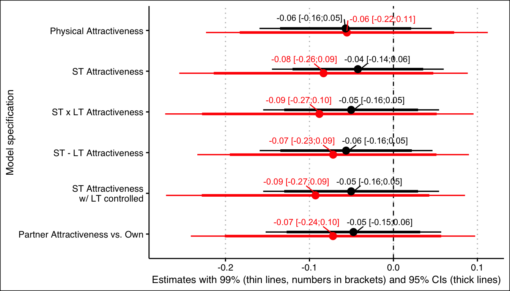
ggsave(file="rejoinder/S_Figure4.pdf", width = chunk_fig_width(7), height = chunk_fig_height(4), units = "in", dpi = 300)
ggsave(file="rejoinder/S_Figure4.png", width = chunk_fig_width(7), height = chunk_fig_height(4), units = "in", dpi = 300)IP
response <- list()
###############Table 1
response$Table1_in_pair_desire_phys = lmer(in_pair_desire ~ (menstruation + premenstruation) + fertile_mean
+ Zpartner_attractiveness_physical*fertile + (1 + fertile | id), data = diary %>%
filter(included == "cycling"))
summary(response$Table1_in_pair_desire_phys)## Linear mixed model fit by REML. t-tests use Satterthwaite's method ['lmerModLmerTest']
## Formula: in_pair_desire ~ (menstruation + premenstruation) + fertile_mean + Zpartner_attractiveness_physical * fertile + (1 + fertile | id)
## Data: diary %>% filter(included == "cycling")
##
## REML criterion at convergence: 31846
##
## Scaled residuals:
## Min 1Q Median 3Q Max
## -3.641 -0.674 -0.030 0.636 3.604
##
## Random effects:
## Groups Name Variance Std.Dev. Corr
## id (Intercept) 0.668 0.817
## fertile 0.996 0.998 -0.15
## Residual 1.153 1.074
## Number of obs: 10263, groups: id, 421
##
## Fixed effects:
## Estimate Std. Error df t value Pr(>|t|)
## (Intercept) 3.61e+00 9.83e-02 6.00e+02 36.76 < 2e-16 ***
## menstruationyes -1.91e-01 3.13e-02 1.00e+04 -6.10 1.1e-09 ***
## premenstruationyes -6.47e-02 3.31e-02 9.90e+03 -1.95 0.0507 .
## fertile_mean -5.92e-01 5.23e-01 6.49e+02 -1.13 0.2579
## Zpartner_attractiveness_physical 4.38e-01 4.36e-02 4.06e+02 10.05 < 2e-16 ***
## fertile 2.81e-01 8.81e-02 4.37e+02 3.19 0.0015 **
## Zpartner_attractiveness_physical:fertile 4.90e-02 8.03e-02 3.24e+02 0.61 0.5424
## ---
## Signif. codes: 0 '***' 0.001 '**' 0.01 '*' 0.05 '.' 0.1 ' ' 1
##
## Correlation of Fixed Effects:
## (Intr) mnstrt prmnst frtl_m Zprt__ fertil
## menstrutnys -0.127
## prmnstrtnys -0.128 0.403
## fertile_men -0.879 -0.005 -0.008
## Zprtnr_ttr_ 0.048 -0.010 -0.005 -0.022
## fertile -0.063 0.296 0.358 -0.123 -0.012
## Zprtnr_tt_: -0.006 0.014 0.004 -0.002 -0.279 0.043response$Table1_in_pair_desire_phys_hc = lmer(in_pair_desire ~ (menstruation + premenstruation) + fertile_mean
+ Zpartner_attractiveness_physical*fertile + (1 + fertile | id), data = diary %>%
filter(included != "cycling"))
summary(response$Table1_in_pair_desire_phys_hc)## Linear mixed model fit by REML. t-tests use Satterthwaite's method ['lmerModLmerTest']
## Formula: in_pair_desire ~ (menstruation + premenstruation) + fertile_mean + Zpartner_attractiveness_physical * fertile + (1 + fertile | id)
## Data: diary %>% filter(included != "cycling")
##
## REML criterion at convergence: 50470
##
## Scaled residuals:
## Min 1Q Median 3Q Max
## -3.387 -0.678 -0.031 0.679 3.522
##
## Random effects:
## Groups Name Variance Std.Dev. Corr
## id (Intercept) 0.602 0.776
## fertile 0.796 0.892 -0.31
## Residual 1.163 1.078
## Number of obs: 16281, groups: id, 622
##
## Fixed effects:
## Estimate Std. Error df t value Pr(>|t|)
## (Intercept) 3.69e+00 8.13e-02 8.97e+02 45.31 < 2e-16 ***
## menstruationyes -1.54e-01 2.66e-02 1.59e+04 -5.78 7.5e-09 ***
## premenstruationyes -7.02e-02 2.67e-02 1.58e+04 -2.63 0.0085 **
## fertile_mean 3.30e-01 4.25e-01 9.56e+02 0.78 0.4384
## Zpartner_attractiveness_physical 3.55e-01 3.58e-02 6.00e+02 9.91 < 2e-16 ***
## fertile -2.10e-01 6.65e-02 6.96e+02 -3.16 0.0017 **
## Zpartner_attractiveness_physical:fertile -3.71e-02 6.35e-02 5.08e+02 -0.58 0.5596
## ---
## Signif. codes: 0 '***' 0.001 '**' 0.01 '*' 0.05 '.' 0.1 ' ' 1
##
## Correlation of Fixed Effects:
## (Intr) mnstrt prmnst frtl_m Zprt__ fertil
## menstrutnys -0.098
## prmnstrtnys -0.102 0.367
## fertile_men -0.895 -0.016 -0.024
## Zprtnr_ttr_ -0.016 -0.007 -0.002 -0.023
## fertile -0.082 0.294 0.365 -0.129 0.035
## Zprtnr_tt_: 0.008 0.005 -0.002 0.009 -0.364 -0.104response$Table1_in_pair_desire_ST = lmer(in_pair_desire ~ (menstruation + premenstruation) + fertile_mean
+ ZSTattractiveness*fertile + (1 + fertile | id), data = diary %>%
filter(included == "cycling"))
summary(response$Table1_in_pair_desire_ST)## Linear mixed model fit by REML. t-tests use Satterthwaite's method ['lmerModLmerTest']
## Formula: in_pair_desire ~ (menstruation + premenstruation) + fertile_mean + ZSTattractiveness * fertile + (1 + fertile | id)
## Data: diary %>% filter(included == "cycling")
##
## REML criterion at convergence: 31838
##
## Scaled residuals:
## Min 1Q Median 3Q Max
## -3.639 -0.674 -0.029 0.637 3.602
##
## Random effects:
## Groups Name Variance Std.Dev. Corr
## id (Intercept) 0.645 0.803
## fertile 0.999 1.000 -0.12
## Residual 1.153 1.074
## Number of obs: 10263, groups: id, 421
##
## Fixed effects:
## Estimate Std. Error df t value Pr(>|t|)
## (Intercept) 3.61e+00 9.74e-02 6.01e+02 37.00 < 2e-16 ***
## menstruationyes -1.91e-01 3.13e-02 1.00e+04 -6.10 1.1e-09 ***
## premenstruationyes -6.50e-02 3.31e-02 9.90e+03 -1.97 0.0492 *
## fertile_mean -5.30e-01 5.20e-01 6.50e+02 -1.02 0.3080
## ZSTattractiveness 4.60e-01 4.26e-02 4.11e+02 10.79 < 2e-16 ***
## fertile 2.77e-01 8.81e-02 4.40e+02 3.14 0.0018 **
## ZSTattractiveness:fertile -2.40e-02 8.09e-02 3.22e+02 -0.30 0.7667
## ---
## Signif. codes: 0 '***' 0.001 '**' 0.01 '*' 0.05 '.' 0.1 ' ' 1
##
## Correlation of Fixed Effects:
## (Intr) mnstrt prmnst frtl_m ZSTttr fertil
## menstrutnys -0.128
## prmnstrtnys -0.130 0.403
## fertile_men -0.880 -0.005 -0.007
## ZSTttrctvns 0.043 -0.008 -0.006 -0.015
## fertile -0.058 0.296 0.358 -0.121 -0.010
## ZSTttrctvn: -0.012 0.009 0.004 0.008 -0.262 0.038response$Table1_in_pair_desire_ST_hc = lmer(in_pair_desire ~ (menstruation + premenstruation) + fertile_mean
+ ZSTattractiveness*fertile + (1 + fertile | id), data = diary %>%
filter(included != "cycling"))
summary(response$Table1_in_pair_desire_ST_hc)## Linear mixed model fit by REML. t-tests use Satterthwaite's method ['lmerModLmerTest']
## Formula: in_pair_desire ~ (menstruation + premenstruation) + fertile_mean + ZSTattractiveness * fertile + (1 + fertile | id)
## Data: diary %>% filter(included != "cycling")
##
## REML criterion at convergence: 50448
##
## Scaled residuals:
## Min 1Q Median 3Q Max
## -3.370 -0.679 -0.033 0.681 3.524
##
## Random effects:
## Groups Name Variance Std.Dev. Corr
## id (Intercept) 0.589 0.767
## fertile 0.789 0.888 -0.35
## Residual 1.163 1.078
## Number of obs: 16281, groups: id, 622
##
## Fixed effects:
## Estimate Std. Error df t value Pr(>|t|)
## (Intercept) 3.66e+00 8.03e-02 9.06e+02 45.62 < 2e-16 ***
## menstruationyes -1.54e-01 2.66e-02 1.59e+04 -5.80 6.8e-09 ***
## premenstruationyes -7.08e-02 2.67e-02 1.58e+04 -2.65 0.0080 **
## fertile_mean 4.05e-01 4.19e-01 9.64e+02 0.97 0.3346
## ZSTattractiveness 3.83e-01 3.62e-02 5.94e+02 10.59 < 2e-16 ***
## fertile -2.17e-01 6.65e-02 6.96e+02 -3.26 0.0012 **
## ZSTattractiveness:fertile 1.87e-02 6.37e-02 4.97e+02 0.29 0.7690
## ---
## Signif. codes: 0 '***' 0.001 '**' 0.01 '*' 0.05 '.' 0.1 ' ' 1
##
## Correlation of Fixed Effects:
## (Intr) mnstrt prmnst frtl_m ZSTttr fertil
## menstrutnys -0.099
## prmnstrtnys -0.102 0.367
## fertile_men -0.893 -0.017 -0.024
## ZSTttrctvns -0.040 -0.009 -0.005 -0.008
## fertile -0.088 0.294 0.365 -0.133 0.045
## ZSTttrctvn: 0.010 0.006 0.001 0.013 -0.385 -0.124response$Table1_in_pair_desire_STvsLT = lmer(in_pair_desire ~ (menstruation + premenstruation) + fertile_mean
+ ZzSTvszLT*fertile + (1 + fertile | id), data = diary %>%
filter(included == "cycling"))
summary(response$Table1_in_pair_desire_STvsLT)## Linear mixed model fit by REML. t-tests use Satterthwaite's method ['lmerModLmerTest']
## Formula: in_pair_desire ~ (menstruation + premenstruation) + fertile_mean + ZzSTvszLT * fertile + (1 + fertile | id)
## Data: diary %>% filter(included == "cycling")
##
## REML criterion at convergence: 31943
##
## Scaled residuals:
## Min 1Q Median 3Q Max
## -3.625 -0.675 -0.034 0.636 3.637
##
## Random effects:
## Groups Name Variance Std.Dev. Corr
## id (Intercept) 0.847 0.92
## fertile 1.008 1.00 -0.11
## Residual 1.153 1.07
## Number of obs: 10263, groups: id, 421
##
## Fixed effects:
## Estimate Std. Error df t value Pr(>|t|)
## (Intercept) 3.58e+00 1.08e-01 5.60e+02 33.14 < 2e-16 ***
## menstruationyes -1.89e-01 3.14e-02 1.00e+04 -6.04 1.6e-09 ***
## premenstruationyes -6.40e-02 3.31e-02 9.87e+03 -1.93 0.053 .
## fertile_mean -5.26e-01 5.72e-01 6.06e+02 -0.92 0.358
## ZzSTvszLT 1.13e-01 5.21e-02 3.89e+02 2.17 0.030 *
## fertile 2.75e-01 8.84e-02 4.35e+02 3.11 0.002 **
## ZzSTvszLT:fertile -5.04e-02 8.62e-02 3.19e+02 -0.59 0.559
## ---
## Signif. codes: 0 '***' 0.001 '**' 0.01 '*' 0.05 '.' 0.1 ' ' 1
##
## Correlation of Fixed Effects:
## (Intr) mnstrt prmnst frtl_m ZzSTLT fertil
## menstrutnys -0.115
## prmnstrtnys -0.116 0.404
## fertile_men -0.880 -0.005 -0.008
## ZzSTvszLT 0.074 0.005 0.002 -0.047
## fertile -0.051 0.294 0.356 -0.113 -0.016
## ZzSTvszLT:f 0.004 -0.020 -0.007 -0.014 -0.231 0.061response$Table1_in_pair_desire_STvsLT_hc = lmer(in_pair_desire ~ (menstruation + premenstruation) + fertile_mean
+ ZzSTvszLT*fertile + (1 + fertile | id), data = diary %>%
filter(included != "cycling"))
summary(response$Table1_in_pair_desire_STvsLT_hc)## Linear mixed model fit by REML. t-tests use Satterthwaite's method ['lmerModLmerTest']
## Formula: in_pair_desire ~ (menstruation + premenstruation) + fertile_mean + ZzSTvszLT * fertile + (1 + fertile | id)
## Data: diary %>% filter(included != "cycling")
##
## REML criterion at convergence: 50550
##
## Scaled residuals:
## Min 1Q Median 3Q Max
## -3.367 -0.678 -0.033 0.677 3.532
##
## Random effects:
## Groups Name Variance Std.Dev. Corr
## id (Intercept) 0.694 0.833
## fertile 0.796 0.892 -0.32
## Residual 1.163 1.078
## Number of obs: 16281, groups: id, 622
##
## Fixed effects:
## Estimate Std. Error df t value Pr(>|t|)
## (Intercept) 3.69e+00 8.58e-02 8.74e+02 43.06 < 2e-16 ***
## menstruationyes -1.53e-01 2.66e-02 1.59e+04 -5.76 8.5e-09 ***
## premenstruationyes -7.03e-02 2.67e-02 1.57e+04 -2.63 0.0085 **
## fertile_mean 4.13e-01 4.47e-01 9.29e+02 0.92 0.3562
## ZzSTvszLT 1.43e-01 3.65e-02 5.93e+02 3.92 9.8e-05 ***
## fertile -2.14e-01 6.62e-02 6.94e+02 -3.24 0.0013 **
## ZzSTvszLT:fertile 3.91e-02 6.09e-02 5.01e+02 0.64 0.5215
## ---
## Signif. codes: 0 '***' 0.001 '**' 0.01 '*' 0.05 '.' 0.1 ' ' 1
##
## Correlation of Fixed Effects:
## (Intr) mnstrt prmnst frtl_m ZzSTLT fertil
## menstrutnys -0.093
## prmnstrtnys -0.096 0.367
## fertile_men -0.895 -0.016 -0.023
## ZzSTvszLT -0.013 -0.003 -0.002 -0.007
## fertile -0.082 0.297 0.367 -0.125 0.014
## ZzSTvszLT:f 0.010 -0.009 -0.006 -0.002 -0.360 -0.042response$Table1_in_pair_desire_relself = lmer(in_pair_desire ~ (menstruation + premenstruation) + fertile_mean
+ Zpartner_attractiveness_rel_to_self_OURMEAS_LONG*fertile + (1 + fertile | id), data = diary %>%
filter(included == "cycling"))
summary(response$Table1_in_pair_desire_relself)## Linear mixed model fit by REML. t-tests use Satterthwaite's method ['lmerModLmerTest']
## Formula: in_pair_desire ~ (menstruation + premenstruation) + fertile_mean + Zpartner_attractiveness_rel_to_self_OURMEAS_LONG * fertile + (1 + fertile | id)
## Data: diary %>% filter(included == "cycling")
##
## REML criterion at convergence: 31946
##
## Scaled residuals:
## Min 1Q Median 3Q Max
## -3.620 -0.674 -0.033 0.636 3.653
##
## Random effects:
## Groups Name Variance Std.Dev. Corr
## id (Intercept) 0.855 0.925
## fertile 1.000 1.000 -0.11
## Residual 1.153 1.074
## Number of obs: 10263, groups: id, 421
##
## Fixed effects:
## Estimate Std. Error df t value Pr(>|t|)
## (Intercept) 3.57e+00 1.08e-01 5.63e+02 32.99 < 2e-16 ***
## menstruationyes -1.90e-01 3.14e-02 1.00e+04 -6.05 1.5e-09 ***
## premenstruationyes -6.38e-02 3.31e-02 9.87e+03 -1.93 0.0539 .
## fertile_mean -4.83e-01 5.73e-01 6.07e+02 -0.84 0.3993
## Zpartner_attractiveness_rel_to_self_OURMEAS_LONG 6.35e-02 4.80e-02 3.91e+02 1.32 0.1867
## fertile 2.71e-01 8.84e-02 4.32e+02 3.06 0.0023 **
## Zpartner_attractiveness_rel_to_self_OURMEAS_LONG:fertile -7.50e-02 7.88e-02 3.21e+02 -0.95 0.3415
## ---
## Signif. codes: 0 '***' 0.001 '**' 0.01 '*' 0.05 '.' 0.1 ' ' 1
##
## Correlation of Fixed Effects:
## (Intr) mnstrt prmnst frtl_m Zp_____OURMEAS_LONG fertil
## menstrutnys -0.114
## prmnstrtnys -0.115 0.404
## fertile_men -0.879 -0.006 -0.008
## Zp_____OURMEAS_LONG 0.059 0.003 0.003 -0.019
## fertile -0.052 0.295 0.356 -0.112 -0.018
## Z_____OURMEAS_LONG: -0.009 0.000 -0.007 -0.001 -0.229 0.089response$Table1_in_pair_desire_relself_hc = lmer(in_pair_desire ~ (menstruation + premenstruation) + fertile_mean
+ Zpartner_attractiveness_rel_to_self_OURMEAS_LONG*fertile + (1 + fertile | id), data = diary %>%
filter(included != "cycling"))
summary(response$Table1_in_pair_desire_STvsLT_hc)## Linear mixed model fit by REML. t-tests use Satterthwaite's method ['lmerModLmerTest']
## Formula: in_pair_desire ~ (menstruation + premenstruation) + fertile_mean + ZzSTvszLT * fertile + (1 + fertile | id)
## Data: diary %>% filter(included != "cycling")
##
## REML criterion at convergence: 50550
##
## Scaled residuals:
## Min 1Q Median 3Q Max
## -3.367 -0.678 -0.033 0.677 3.532
##
## Random effects:
## Groups Name Variance Std.Dev. Corr
## id (Intercept) 0.694 0.833
## fertile 0.796 0.892 -0.32
## Residual 1.163 1.078
## Number of obs: 16281, groups: id, 622
##
## Fixed effects:
## Estimate Std. Error df t value Pr(>|t|)
## (Intercept) 3.69e+00 8.58e-02 8.74e+02 43.06 < 2e-16 ***
## menstruationyes -1.53e-01 2.66e-02 1.59e+04 -5.76 8.5e-09 ***
## premenstruationyes -7.03e-02 2.67e-02 1.57e+04 -2.63 0.0085 **
## fertile_mean 4.13e-01 4.47e-01 9.29e+02 0.92 0.3562
## ZzSTvszLT 1.43e-01 3.65e-02 5.93e+02 3.92 9.8e-05 ***
## fertile -2.14e-01 6.62e-02 6.94e+02 -3.24 0.0013 **
## ZzSTvszLT:fertile 3.91e-02 6.09e-02 5.01e+02 0.64 0.5215
## ---
## Signif. codes: 0 '***' 0.001 '**' 0.01 '*' 0.05 '.' 0.1 ' ' 1
##
## Correlation of Fixed Effects:
## (Intr) mnstrt prmnst frtl_m ZzSTLT fertil
## menstrutnys -0.093
## prmnstrtnys -0.096 0.367
## fertile_men -0.895 -0.016 -0.023
## ZzSTvszLT -0.013 -0.003 -0.002 -0.007
## fertile -0.082 0.297 0.367 -0.125 0.014
## ZzSTvszLT:f 0.010 -0.009 -0.006 -0.002 -0.360 -0.042response$Table1_in_pair_desire_relself = lmer(in_pair_desire ~ (menstruation + premenstruation) + fertile_mean
+ (Zpartner_attractiveness_longterm + Zpartner_attractiveness_COMP5var_LONG)*fertile + (1 + fertile | id), data = diary %>%
filter(included == "cycling"))
summary(response$Table1_in_pair_desire_relself)## Linear mixed model fit by REML. t-tests use Satterthwaite's method ['lmerModLmerTest']
## Formula: in_pair_desire ~ (menstruation + premenstruation) + fertile_mean + (Zpartner_attractiveness_longterm + Zpartner_attractiveness_COMP5var_LONG) * fertile + (1 + fertile | id)
## Data: diary %>% filter(included == "cycling")
##
## REML criterion at convergence: 31858
##
## Scaled residuals:
## Min 1Q Median 3Q Max
## -3.632 -0.674 -0.031 0.636 3.616
##
## Random effects:
## Groups Name Variance Std.Dev. Corr
## id (Intercept) 0.672 0.82
## fertile 1.004 1.00 -0.12
## Residual 1.153 1.07
## Number of obs: 10263, groups: id, 421
##
## Fixed effects:
## Estimate Std. Error df t value Pr(>|t|)
## (Intercept) 3.56e+00 9.90e-02 5.93e+02 36.01 < 2e-16 ***
## menstruationyes -1.90e-01 3.13e-02 1.00e+04 -6.07 1.3e-09 ***
## premenstruationyes -6.48e-02 3.31e-02 9.89e+03 -1.96 0.0503 .
## fertile_mean -3.68e-01 5.27e-01 6.40e+02 -0.70 0.4846
## Zpartner_attractiveness_longterm 2.63e-01 4.74e-02 3.99e+02 5.54 5.4e-08 ***
## Zpartner_attractiveness_COMP5var_LONG 2.62e-01 4.56e-02 3.98e+02 5.74 1.9e-08 ***
## fertile 2.74e-01 8.84e-02 4.37e+02 3.09 0.0021 **
## Zpartner_attractiveness_longterm:fertile 5.00e-02 8.63e-02 3.35e+02 0.58 0.5631
## Zpartner_attractiveness_COMP5var_LONG:fertile -7.27e-02 8.25e-02 3.16e+02 -0.88 0.3792
## ---
## Signif. codes: 0 '***' 0.001 '**' 0.01 '*' 0.05 '.' 0.1 ' ' 1
##
## Correlation of Fixed Effects:
## (Intr) mnstrt prmnst frtl_m Zprt__ Zp__COMP5_LONG fertil Zpr__:
## menstrutnys -0.126
## prmnstrtnys -0.128 0.403
## fertile_men -0.880 -0.005 -0.007
## Zprtnr_ttr_ -0.051 -0.014 -0.008 0.039
## Zp__COMP5_LONG 0.060 0.002 0.000 -0.029 -0.365
## fertile -0.058 0.294 0.356 -0.121 0.015 -0.017
## Zprtnr_tt_: -0.013 0.031 0.012 0.023 -0.267 0.087 -0.050
## Z__COMP5_LONG: -0.005 -0.005 -0.003 -0.005 0.088 -0.259 0.069 -0.326response$Table1_in_pair_desire_relself_hc = lmer(in_pair_desire ~ (menstruation + premenstruation) + fertile_mean
+ (Zpartner_attractiveness_longterm + Zpartner_attractiveness_COMP5var_LONG)*fertile + (1 + fertile | id), data = diary %>%
filter(included != "cycling"))
summary(response$Table1_in_pair_desire_STvsLT_hc)## Linear mixed model fit by REML. t-tests use Satterthwaite's method ['lmerModLmerTest']
## Formula: in_pair_desire ~ (menstruation + premenstruation) + fertile_mean + ZzSTvszLT * fertile + (1 + fertile | id)
## Data: diary %>% filter(included != "cycling")
##
## REML criterion at convergence: 50550
##
## Scaled residuals:
## Min 1Q Median 3Q Max
## -3.367 -0.678 -0.033 0.677 3.532
##
## Random effects:
## Groups Name Variance Std.Dev. Corr
## id (Intercept) 0.694 0.833
## fertile 0.796 0.892 -0.32
## Residual 1.163 1.078
## Number of obs: 16281, groups: id, 622
##
## Fixed effects:
## Estimate Std. Error df t value Pr(>|t|)
## (Intercept) 3.69e+00 8.58e-02 8.74e+02 43.06 < 2e-16 ***
## menstruationyes -1.53e-01 2.66e-02 1.59e+04 -5.76 8.5e-09 ***
## premenstruationyes -7.03e-02 2.67e-02 1.57e+04 -2.63 0.0085 **
## fertile_mean 4.13e-01 4.47e-01 9.29e+02 0.92 0.3562
## ZzSTvszLT 1.43e-01 3.65e-02 5.93e+02 3.92 9.8e-05 ***
## fertile -2.14e-01 6.62e-02 6.94e+02 -3.24 0.0013 **
## ZzSTvszLT:fertile 3.91e-02 6.09e-02 5.01e+02 0.64 0.5215
## ---
## Signif. codes: 0 '***' 0.001 '**' 0.01 '*' 0.05 '.' 0.1 ' ' 1
##
## Correlation of Fixed Effects:
## (Intr) mnstrt prmnst frtl_m ZzSTLT fertil
## menstrutnys -0.093
## prmnstrtnys -0.096 0.367
## fertile_men -0.895 -0.016 -0.023
## ZzSTvszLT -0.013 -0.003 -0.002 -0.007
## fertile -0.082 0.297 0.367 -0.125 0.014
## ZzSTvszLT:f 0.010 -0.009 -0.006 -0.002 -0.360 -0.042interactions_ip_s1 <- response %>%
purrr::map(~ full_join(
broom.mixed::tidy(., conf.method = ci_method, conf.level = 0.99, conf.int = TRUE),
broom.mixed::tidy(., conf.method = ci_method, conf.level = 0.95, conf.int = TRUE), by = c("effect", "group", "term", "estimate", "std.error", "statistic", "p.value"), suffix = c("_99", "_95"))) %>%
bind_rows(.id = "model") %>%
filter(str_detect(term, "Z.+:fertile$")) %>%
mutate(hc = stringr::str_detect(model, "_hc$"),
model = stringr::str_replace(model, "_hc$", ""),
model = stringr::str_replace(model, "^Table1_in_pair_desire_", ""),
term = stringr::str_replace(term, "^:fertile$", ""))
ggplot(interactions_ip_s1, aes(paste(model, term), y = estimate, ymin = conf.low_95, ymax = conf.high_95,
colour = hc)) +
geom_hline(yintercept = 0, linetype = 'dashed') +
scale_color_manual(values = c("FALSE" = "red", "TRUE" = "black"), guide = FALSE) +
geom_linerange(size = 1.2, position = position_dodge(width = 0.2)) +
geom_pointrange(aes(ymin = conf.low_99, ymax = conf.high_99), size = 0.6, position = position_dodge(width = 0.2)) +
ggrepel::geom_text_repel(aes(label = sprintf("%.2f [%.2f;%.2f]", estimate, conf.low_99, conf.high_99)), nudge_x = 0.3, size = 3) +
scale_x_discrete("Model specification") +
scale_y_continuous("Estimate with 99% and 95% CIs") +
coord_flip() +
theme_clean() +
theme(panel.grid.major.x = theme_clean()$panel.grid.major.y,
panel.grid.major.y = theme_clean()$panel.grid.major.x)
Alternative composite
Reliability comparison
In this comparison, we run the psych::alpha function for Gangestad and Dinh’s composite, and for our original composite, and two alternative composites of short- and long-term attractiveness items.
Their composite
diary[,c("id","Zattractiveness_stp","Zsatisfaction_sexual_intercourse","ZMV_part","Zpartner_attractiveness_physical","Zattractiveness_relativ_1")] %>% distinct() %>% select(-id) %>% psych::alpha()##
## Reliability analysis
## Call: psych::alpha(x = .)
##
## raw_alpha std.alpha G6(smc) average_r S/N ase mean sd median_r
## 0.64 0.64 0.62 0.26 1.7 0.017 -0.0013 0.64 0.28
##
## lower alpha upper 95% confidence boundaries
## 0.6 0.64 0.67
##
## Reliability if an item is dropped:
## raw_alpha std.alpha G6(smc) average_r S/N alpha se var.r med.r
## Zattractiveness_stp 0.54 0.54 0.52 0.23 1.16 0.022 0.027 0.28
## Zsatisfaction_sexual_intercourse 0.65 0.65 0.61 0.32 1.88 0.016 0.011 0.33
## ZMV_part 0.57 0.57 0.54 0.25 1.32 0.020 0.027 0.23
## Zpartner_attractiveness_physical 0.49 0.49 0.46 0.20 0.98 0.024 0.023 0.20
## Zattractiveness_relativ_1 0.63 0.63 0.59 0.30 1.72 0.017 0.020 0.33
##
## Item statistics
## n raw.r std.r r.cor r.drop mean sd
## Zattractiveness_stp 1208 0.70 0.70 0.60 0.48 -4.9e-17 1
## Zsatisfaction_sexual_intercourse 1155 0.52 0.52 0.33 0.24 4.9e-16 1
## ZMV_part 1208 0.66 0.66 0.53 0.41 3.1e-16 1
## Zpartner_attractiveness_physical 1208 0.75 0.75 0.69 0.56 -8.4e-17 1
## Zattractiveness_relativ_1 1208 0.56 0.56 0.37 0.28 -1.3e-16 1Our short-term attractiveness measure
diary[,c("id","attractiveness_stp", "satisfaction_sexual_intercourse", "sexy", "attractiveness_body")] %>% distinct() %>% select(-id) %>% psych::alpha()##
## Reliability analysis
## Call: psych::alpha(x = .)
##
## raw_alpha std.alpha G6(smc) average_r S/N ase mean sd median_r
## 0.72 0.74 0.71 0.41 2.8 0.013 3.8 0.73 0.39
##
## lower alpha upper 95% confidence boundaries
## 0.69 0.72 0.74
##
## Reliability if an item is dropped:
## raw_alpha std.alpha G6(smc) average_r S/N alpha se var.r med.r
## attractiveness_stp 0.71 0.71 0.67 0.45 2.5 0.015 0.0378 0.37
## satisfaction_sexual_intercourse 0.73 0.76 0.70 0.51 3.2 0.013 0.0203 0.46
## sexy 0.57 0.59 0.49 0.32 1.4 0.021 0.0073 0.32
## attractiveness_body 0.61 0.62 0.54 0.35 1.6 0.019 0.0128 0.37
##
## Item statistics
## n raw.r std.r r.cor r.drop mean sd
## attractiveness_stp 1208 0.76 0.70 0.53 0.46 3.2 1.22
## satisfaction_sexual_intercourse 1155 0.63 0.64 0.42 0.36 4.0 0.92
## sexy 1208 0.82 0.84 0.80 0.66 3.8 0.92
## attractiveness_body 1208 0.77 0.80 0.75 0.61 4.2 0.82
##
## Non missing response frequency for each item
## 1 2 3 4 5 miss
## attractiveness_stp 0.06 0.29 0.21 0.25 0.19 0.00
## satisfaction_sexual_intercourse 0.01 0.06 0.16 0.43 0.34 0.04
## sexy 0.01 0.06 0.28 0.38 0.27 0.00
## attractiveness_body 0.00 0.02 0.16 0.37 0.44 0.00an alternative composite at item level
diary[,c("id","attractiveness_stp", "attractiveness_body", "sexy", "MV_P_3","MV_P_4","MV_P_5", "attractiveness_overall")] %>% distinct() %>% select(-id) %>% psych::alpha()##
## Reliability analysis
## Call: psych::alpha(x = .)
##
## raw_alpha std.alpha G6(smc) average_r S/N ase mean sd median_r
## 0.82 0.83 0.84 0.42 5 0.0078 3.6 0.67 0.41
##
## lower alpha upper 95% confidence boundaries
## 0.81 0.82 0.84
##
## Reliability if an item is dropped:
## raw_alpha std.alpha G6(smc) average_r S/N alpha se var.r med.r
## attractiveness_stp 0.82 0.82 0.83 0.44 4.6 0.0082 0.019 0.46
## attractiveness_body 0.80 0.81 0.81 0.42 4.4 0.0089 0.013 0.43
## sexy 0.79 0.80 0.80 0.40 4.1 0.0093 0.016 0.41
## MV_P_3 0.79 0.80 0.80 0.40 4.1 0.0094 0.015 0.41
## MV_P_4 0.79 0.80 0.80 0.40 4.0 0.0095 0.015 0.41
## MV_P_5 0.82 0.83 0.83 0.45 4.8 0.0082 0.015 0.43
## attractiveness_overall 0.79 0.80 0.81 0.40 3.9 0.0096 0.021 0.37
##
## Item statistics
## n raw.r std.r r.cor r.drop mean sd
## attractiveness_stp 1208 0.68 0.64 0.54 0.49 3.2 1.22
## attractiveness_body 1208 0.67 0.69 0.63 0.55 4.2 0.82
## sexy 1208 0.73 0.74 0.70 0.62 3.8 0.92
## MV_P_3 1208 0.74 0.74 0.71 0.63 3.6 0.92
## MV_P_4 1208 0.75 0.75 0.72 0.64 3.3 0.92
## MV_P_5 1208 0.63 0.62 0.52 0.46 3.1 1.03
## attractiveness_overall 1208 0.75 0.76 0.71 0.65 3.7 0.88
##
## Non missing response frequency for each item
## 1 2 3 4 5 miss
## attractiveness_stp 0.06 0.29 0.21 0.25 0.19 0
## attractiveness_body 0.00 0.02 0.16 0.37 0.44 0
## sexy 0.01 0.06 0.28 0.38 0.27 0
## MV_P_3 0.01 0.11 0.29 0.43 0.17 0
## MV_P_4 0.02 0.15 0.40 0.34 0.10 0
## MV_P_5 0.07 0.22 0.36 0.28 0.08 0
## attractiveness_overall 0.01 0.10 0.26 0.47 0.15 0a long-term attractiveness composite
diary[,c("id","attractiveness_occupation", "attractiveness_ltp", "attractiveness_finance_1", "attractiveness_finance_2")] %>% distinct() %>% select(-id) %>% psych::alpha()##
## Reliability analysis
## Call: psych::alpha(x = .)
##
## raw_alpha std.alpha G6(smc) average_r S/N ase mean sd median_r
## 0.59 0.57 0.57 0.25 1.4 0.018 3.4 0.7 0.2
##
## lower alpha upper 95% confidence boundaries
## 0.55 0.59 0.62
##
## Reliability if an item is dropped:
## raw_alpha std.alpha G6(smc) average_r S/N alpha se var.r med.r
## attractiveness_occupation 0.51 0.48 0.48 0.23 0.91 0.022 0.093 0.12
## attractiveness_ltp 0.66 0.66 0.62 0.40 1.98 0.016 0.035 0.41
## attractiveness_finance_1 0.31 0.32 0.26 0.14 0.48 0.034 0.013 0.20
## attractiveness_finance_2 0.50 0.49 0.42 0.24 0.96 0.024 0.023 0.20
##
## Item statistics
## n raw.r std.r r.cor r.drop mean sd
## attractiveness_occupation 1208 0.65 0.68 0.50 0.38 3.5 0.95
## attractiveness_ltp 1208 0.42 0.50 0.18 0.13 4.3 0.84
## attractiveness_finance_1 1208 0.82 0.79 0.76 0.61 3.0 1.07
## attractiveness_finance_2 1208 0.75 0.67 0.56 0.40 2.7 1.26
##
## Non missing response frequency for each item
## 1 2 3 4 5 miss
## attractiveness_occupation 0.02 0.13 0.30 0.41 0.13 0
## attractiveness_ltp 0.00 0.04 0.09 0.36 0.51 0
## attractiveness_finance_1 0.08 0.26 0.30 0.29 0.06 0
## attractiveness_finance_2 0.18 0.34 0.22 0.14 0.13 0lt_items <- diary[,c("attractiveness_occupation", "attractiveness_ltp", "attractiveness_finance_1", "attractiveness_finance_2")]
st_items <- diary[,c("attractiveness_stp", "attractiveness_body", "sexy", "MV_P_3","MV_P_4","MV_P_5")]
diary$ZMV_P_short <- scale(diary$MV_P_short)
study2_comp <- diary[,c("Zattractiveness_stp","Zsatisfaction_sexual_intercourse","ZMV_P_short","Zpartner_attractiveness_physical")]Comparison of results
Here, we compare results using our revised composites (alt) to those with Gangestad and Dinh’s measures (gd).
response <- list()
diary$Zpartner_attractiveness_COMP5var_LONG_alt <- st_items %>% rowMeans(na.rm = TRUE) %>% scale()
diary$Zpartner_attractiveness_COMP5var_LONG_study2 <- study2_comp %>% rowMeans(na.rm = TRUE) %>% scale()
diary$Zpartner_attractiveness_longterm_alt <- lt_items %>% rowMeans(na.rm = T) %>% scale()
diary %>% select(id, Zpartner_attractiveness_COMP5var_LONG, Zpartner_attractiveness_COMP5var_LONG_alt, Zpartner_attractiveness_longterm, Zpartner_attractiveness_longterm_alt, Zpartner_attractiveness_COMP5var_LONG_study2) %>% distinct() %>% select(-id) %>% rename_all(~str_sub(., 25)) %>% cor() %>% round(2)## COMP5var_LONG COMP5var_LONG_alt longterm longterm_alt COMP5var_LONG_study2
## COMP5var_LONG 1.00 0.89 0.29 0.07 0.93
## COMP5var_LONG_alt 0.89 1.00 0.29 0.11 0.93
## longterm 0.29 0.29 1.00 0.42 0.33
## longterm_alt 0.07 0.11 0.42 1.00 0.10
## COMP5var_LONG_study2 0.93 0.93 0.33 0.10 1.00response$STalt_LTgd = lmer(extra_pair ~ (menstruation + premenstruation + fertile) * included + fertile_mean + (Zpartner_attractiveness_COMP5var_LONG_alt + Zpartner_attractiveness_longterm) * included * fertile + (1 + fertile | id), data = diary)
summary(response$STalt_LTgd)## Linear mixed model fit by REML. t-tests use Satterthwaite's method ['lmerModLmerTest']
## Formula: extra_pair ~ (menstruation + premenstruation + fertile) * included + fertile_mean + (Zpartner_attractiveness_COMP5var_LONG_alt + Zpartner_attractiveness_longterm) * included * fertile + (1 + fertile | id)
## Data: diary
##
## REML criterion at convergence: 48141
##
## Scaled residuals:
## Min 1Q Median 3Q Max
## -4.427 -0.554 -0.143 0.400 7.963
##
## Random effects:
## Groups Name Variance Std.Dev. Corr
## id (Intercept) 0.284 0.533
## fertile 0.206 0.454 -0.02
## Residual 0.313 0.560
## Number of obs: 26544, groups: id, 1043
##
## Fixed effects:
## Estimate Std. Error df t value Pr(>|t|)
## (Intercept) 1.84e+00 4.61e-02 1.33e+03 40.02 < 2e-16 ***
## menstruationyes -7.13e-02 1.63e-02 2.59e+04 -4.36 1.3e-05 ***
## premenstruationyes -9.10e-02 1.73e-02 2.56e+04 -5.28 1.3e-07 ***
## fertile 1.78e-01 4.35e-02 1.17e+03 4.10 4.4e-05 ***
## includedhorm_contra -1.16e-01 3.74e-02 1.19e+03 -3.10 0.00200 **
## fertile_mean -7.83e-02 2.14e-01 1.43e+03 -0.37 0.71482
## Zpartner_attractiveness_COMP5var_LONG_alt -1.99e-02 2.89e-02 1.04e+03 -0.69 0.49102
## Zpartner_attractiveness_longterm -1.69e-01 3.00e-02 1.05e+03 -5.61 2.5e-08 ***
## menstruationyes:includedhorm_contra 8.61e-02 2.14e-02 2.58e+04 4.03 5.7e-05 ***
## premenstruationyes:includedhorm_contra 7.10e-02 2.21e-02 2.56e+04 3.21 0.00135 **
## fertile:includedhorm_contra -1.85e-01 5.52e-02 1.15e+03 -3.34 0.00085 ***
## includedhorm_contra:Zpartner_attractiveness_COMP5var_LONG_alt 4.06e-02 3.75e-02 1.01e+03 1.08 0.27899
## includedhorm_contra:Zpartner_attractiveness_longterm 1.74e-03 3.92e-02 1.04e+03 0.04 0.96457
## fertile:Zpartner_attractiveness_COMP5var_LONG_alt -8.92e-02 4.12e-02 8.25e+02 -2.16 0.03069 *
## fertile:Zpartner_attractiveness_longterm 7.66e-02 4.32e-02 8.70e+02 1.77 0.07631 .
## fertile:includedhorm_contra:Zpartner_attractiveness_COMP5var_LONG_alt 6.61e-02 5.23e-02 8.03e+02 1.26 0.20651
## fertile:includedhorm_contra:Zpartner_attractiveness_longterm -1.38e-02 5.60e-02 8.39e+02 -0.25 0.80618
## ---
## Signif. codes: 0 '***' 0.001 '**' 0.01 '*' 0.05 '.' 0.1 ' ' 1##
## Correlation matrix not shown by default, as p = 17 > 12.
## Use print(x, correlation=TRUE) or
## vcov(x) if you need itresponse$STalt_LTalt = lmer(extra_pair ~ (menstruation + premenstruation + fertile) * included + fertile_mean + (Zpartner_attractiveness_COMP5var_LONG_alt + Zpartner_attractiveness_longterm_alt) * included * fertile + (1 + fertile | id), data = diary)
summary(response$STalt_LTalt)## Linear mixed model fit by REML. t-tests use Satterthwaite's method ['lmerModLmerTest']
## Formula: extra_pair ~ (menstruation + premenstruation + fertile) * included + fertile_mean + (Zpartner_attractiveness_COMP5var_LONG_alt + Zpartner_attractiveness_longterm_alt) * included * fertile + (1 + fertile | id)
## Data: diary
##
## REML criterion at convergence: 48210
##
## Scaled residuals:
## Min 1Q Median 3Q Max
## -4.434 -0.554 -0.144 0.400 7.975
##
## Random effects:
## Groups Name Variance Std.Dev. Corr
## id (Intercept) 0.305 0.552
## fertile 0.208 0.457 -0.05
## Residual 0.313 0.560
## Number of obs: 26544, groups: id, 1043
##
## Fixed effects:
## Estimate Std. Error df t value Pr(>|t|)
## (Intercept) 1.83e+00 4.74e-02 1.31e+03 38.67 < 2e-16 ***
## menstruationyes -7.24e-02 1.63e-02 2.59e+04 -4.43 9.3e-06 ***
## premenstruationyes -9.15e-02 1.73e-02 2.56e+04 -5.30 1.2e-07 ***
## fertile 1.77e-01 4.38e-02 1.17e+03 4.05 5.5e-05 ***
## includedhorm_contra -1.28e-01 3.86e-02 1.17e+03 -3.30 0.00098 ***
## fertile_mean -1.56e-02 2.19e-01 1.41e+03 -0.07 0.94329
## Zpartner_attractiveness_COMP5var_LONG_alt -7.97e-02 2.77e-02 1.03e+03 -2.88 0.00411 **
## Zpartner_attractiveness_longterm_alt -2.31e-02 2.78e-02 1.02e+03 -0.83 0.40659
## menstruationyes:includedhorm_contra 8.68e-02 2.14e-02 2.58e+04 4.06 5.0e-05 ***
## premenstruationyes:includedhorm_contra 7.10e-02 2.21e-02 2.56e+04 3.21 0.00135 **
## fertile:includedhorm_contra -1.79e-01 5.55e-02 1.14e+03 -3.22 0.00131 **
## includedhorm_contra:Zpartner_attractiveness_COMP5var_LONG_alt 7.38e-02 3.69e-02 1.01e+03 2.00 0.04571 *
## includedhorm_contra:Zpartner_attractiveness_longterm_alt -3.06e-02 3.78e-02 1.01e+03 -0.81 0.41823
## fertile:Zpartner_attractiveness_COMP5var_LONG_alt -6.50e-02 3.88e-02 8.39e+02 -1.68 0.09416 .
## fertile:Zpartner_attractiveness_longterm_alt 3.08e-02 3.85e-02 8.41e+02 0.80 0.42414
## fertile:includedhorm_contra:Zpartner_attractiveness_COMP5var_LONG_alt 5.09e-02 5.02e-02 8.10e+02 1.01 0.31048
## fertile:includedhorm_contra:Zpartner_attractiveness_longterm_alt -2.65e-02 5.17e-02 8.07e+02 -0.51 0.60787
## ---
## Signif. codes: 0 '***' 0.001 '**' 0.01 '*' 0.05 '.' 0.1 ' ' 1##
## Correlation matrix not shown by default, as p = 17 > 12.
## Use print(x, correlation=TRUE) or
## vcov(x) if you need itresponse$STgd_LTalt = lmer(extra_pair ~ (menstruation + premenstruation + fertile) * included + fertile_mean + (Zpartner_attractiveness_COMP5var_LONG + Zpartner_attractiveness_longterm_alt) * included * fertile + (1 + fertile | id), data = diary)
summary(response$STgd_LTalt)## Linear mixed model fit by REML. t-tests use Satterthwaite's method ['lmerModLmerTest']
## Formula: extra_pair ~ (menstruation + premenstruation + fertile) * included + fertile_mean + (Zpartner_attractiveness_COMP5var_LONG + Zpartner_attractiveness_longterm_alt) * included * fertile + (1 + fertile | id)
## Data: diary
##
## REML criterion at convergence: 48188
##
## Scaled residuals:
## Min 1Q Median 3Q Max
## -4.433 -0.555 -0.144 0.400 7.977
##
## Random effects:
## Groups Name Variance Std.Dev. Corr
## id (Intercept) 0.300 0.548
## fertile 0.205 0.453 -0.06
## Residual 0.313 0.560
## Number of obs: 26544, groups: id, 1043
##
## Fixed effects:
## Estimate Std. Error df t value Pr(>|t|)
## (Intercept) 1.83e+00 4.71e-02 1.32e+03 38.76 < 2e-16 ***
## menstruationyes -7.26e-02 1.63e-02 2.59e+04 -4.44 8.9e-06 ***
## premenstruationyes -9.14e-02 1.73e-02 2.56e+04 -5.30 1.2e-07 ***
## fertile 1.72e-01 4.38e-02 1.17e+03 3.93 9.1e-05 ***
## includedhorm_contra -1.16e-01 3.85e-02 1.18e+03 -3.00 0.0028 **
## fertile_mean -2.66e-02 2.18e-01 1.42e+03 -0.12 0.9027
## Zpartner_attractiveness_COMP5var_LONG -1.21e-01 2.75e-02 1.04e+03 -4.42 1.1e-05 ***
## Zpartner_attractiveness_longterm_alt -2.41e-02 2.75e-02 1.02e+03 -0.88 0.3813
## menstruationyes:includedhorm_contra 8.70e-02 2.14e-02 2.58e+04 4.07 4.8e-05 ***
## premenstruationyes:includedhorm_contra 7.10e-02 2.21e-02 2.56e+04 3.21 0.0013 **
## fertile:includedhorm_contra -1.72e-01 5.55e-02 1.15e+03 -3.10 0.0020 **
## includedhorm_contra:Zpartner_attractiveness_COMP5var_LONG 6.98e-02 3.70e-02 1.02e+03 1.89 0.0592 .
## includedhorm_contra:Zpartner_attractiveness_longterm_alt -2.74e-02 3.74e-02 1.01e+03 -0.73 0.4631
## fertile:Zpartner_attractiveness_COMP5var_LONG -9.38e-02 3.83e-02 8.29e+02 -2.45 0.0146 *
## fertile:Zpartner_attractiveness_longterm_alt 2.56e-02 3.81e-02 8.37e+02 0.67 0.5016
## fertile:includedhorm_contra:Zpartner_attractiveness_COMP5var_LONG 7.13e-02 5.02e-02 8.00e+02 1.42 0.1558
## fertile:includedhorm_contra:Zpartner_attractiveness_longterm_alt -2.14e-02 5.13e-02 8.05e+02 -0.42 0.6771
## ---
## Signif. codes: 0 '***' 0.001 '**' 0.01 '*' 0.05 '.' 0.1 ' ' 1##
## Correlation matrix not shown by default, as p = 17 > 12.
## Use print(x, correlation=TRUE) or
## vcov(x) if you need itresponse$STgd_LTgd = lmer(extra_pair ~ (menstruation + premenstruation + fertile) * included + fertile_mean + (Zpartner_attractiveness_COMP5var_LONG + Zpartner_attractiveness_longterm) * included * fertile + (1 + fertile | id), data = diary)
summary(response$STgd_LTgd)## Linear mixed model fit by REML. t-tests use Satterthwaite's method ['lmerModLmerTest']
## Formula: extra_pair ~ (menstruation + premenstruation + fertile) * included + fertile_mean + (Zpartner_attractiveness_COMP5var_LONG + Zpartner_attractiveness_longterm) * included * fertile + (1 + fertile | id)
## Data: diary
##
## REML criterion at convergence: 48128
##
## Scaled residuals:
## Min 1Q Median 3Q Max
## -4.425 -0.555 -0.143 0.401 7.966
##
## Random effects:
## Groups Name Variance Std.Dev. Corr
## id (Intercept) 0.283 0.532
## fertile 0.202 0.450 -0.03
## Residual 0.313 0.560
## Number of obs: 26544, groups: id, 1043
##
## Fixed effects:
## Estimate Std. Error df t value Pr(>|t|)
## (Intercept) 1.84e+00 4.60e-02 1.33e+03 39.95 < 2e-16 ***
## menstruationyes -7.12e-02 1.63e-02 2.59e+04 -4.36 1.3e-05 ***
## premenstruationyes -9.08e-02 1.73e-02 2.56e+04 -5.26 1.4e-07 ***
## fertile 1.71e-01 4.34e-02 1.17e+03 3.93 9.0e-05 ***
## includedhorm_contra -1.09e-01 3.74e-02 1.19e+03 -2.91 0.0037 **
## fertile_mean -7.33e-02 2.13e-01 1.44e+03 -0.34 0.7311
## Zpartner_attractiveness_COMP5var_LONG -7.00e-02 2.87e-02 1.03e+03 -2.44 0.0150 *
## Zpartner_attractiveness_longterm -1.49e-01 2.97e-02 1.04e+03 -5.01 6.4e-07 ***
## menstruationyes:includedhorm_contra 8.62e-02 2.14e-02 2.58e+04 4.03 5.6e-05 ***
## premenstruationyes:includedhorm_contra 7.08e-02 2.21e-02 2.56e+04 3.20 0.0014 **
## fertile:includedhorm_contra -1.75e-01 5.51e-02 1.15e+03 -3.17 0.0015 **
## includedhorm_contra:Zpartner_attractiveness_COMP5var_LONG 4.69e-02 3.78e-02 1.01e+03 1.24 0.2143
## includedhorm_contra:Zpartner_attractiveness_longterm -8.89e-03 3.90e-02 1.03e+03 -0.23 0.8195
## fertile:Zpartner_attractiveness_COMP5var_LONG -1.19e-01 4.03e-02 8.06e+02 -2.96 0.0031 **
## fertile:Zpartner_attractiveness_longterm 8.30e-02 4.23e-02 8.55e+02 1.96 0.0498 *
## fertile:includedhorm_contra:Zpartner_attractiveness_COMP5var_LONG 8.59e-02 5.20e-02 7.87e+02 1.65 0.0989 .
## fertile:includedhorm_contra:Zpartner_attractiveness_longterm -1.76e-02 5.53e-02 8.31e+02 -0.32 0.7504
## ---
## Signif. codes: 0 '***' 0.001 '**' 0.01 '*' 0.05 '.' 0.1 ' ' 1##
## Correlation matrix not shown by default, as p = 17 > 12.
## Use print(x, correlation=TRUE) or
## vcov(x) if you need itresponse$STalt = lmer(extra_pair ~ (menstruation + premenstruation + fertile) * included + fertile_mean + (Zpartner_attractiveness_COMP5var_LONG_alt ) * included * fertile + (1 + fertile | id), data = diary)## Warning in checkConv(attr(opt, "derivs"), opt$par, ctrl = control$checkConv, : Model failed to converge with max|grad| = 0.00339544 (tol = 0.002, component 1)summary(response$STalt)## Linear mixed model fit by REML. t-tests use Satterthwaite's method ['lmerModLmerTest']
## Formula: extra_pair ~ (menstruation + premenstruation + fertile) * included + fertile_mean + (Zpartner_attractiveness_COMP5var_LONG_alt) * included * fertile + (1 + fertile | id)
## Data: diary
##
## REML criterion at convergence: 48195
##
## Scaled residuals:
## Min 1Q Median 3Q Max
## -4.437 -0.554 -0.143 0.401 7.973
##
## Random effects:
## Groups Name Variance Std.Dev. Corr
## id (Intercept) 0.306 0.553
## fertile 0.207 0.455 -0.05
## Residual 0.313 0.560
## Number of obs: 26544, groups: id, 1043
##
## Fixed effects:
## Estimate Std. Error df t value Pr(>|t|)
## (Intercept) 1.83e+00 4.73e-02 1.32e+03 38.77 < 2e-16 ***
## menstruationyes -7.24e-02 1.63e-02 2.59e+04 -4.43 9.3e-06 ***
## premenstruationyes -9.16e-02 1.73e-02 2.56e+04 -5.31 1.1e-07 ***
## fertile 1.81e-01 4.35e-02 1.17e+03 4.17 3.3e-05 ***
## includedhorm_contra -1.22e-01 3.86e-02 1.17e+03 -3.16 0.00164 **
## fertile_mean -2.59e-02 2.19e-01 1.42e+03 -0.12 0.90599
## Zpartner_attractiveness_COMP5var_LONG_alt -8.25e-02 2.75e-02 1.03e+03 -3.00 0.00279 **
## menstruationyes:includedhorm_contra 8.67e-02 2.14e-02 2.58e+04 4.05 5.1e-05 ***
## premenstruationyes:includedhorm_contra 7.11e-02 2.21e-02 2.56e+04 3.21 0.00132 **
## fertile:includedhorm_contra -1.83e-01 5.52e-02 1.15e+03 -3.32 0.00093 ***
## includedhorm_contra:Zpartner_attractiveness_COMP5var_LONG_alt 7.24e-02 3.67e-02 1.01e+03 1.97 0.04887 *
## fertile:Zpartner_attractiveness_COMP5var_LONG_alt -6.10e-02 3.84e-02 8.37e+02 -1.59 0.11290
## fertile:includedhorm_contra:Zpartner_attractiveness_COMP5var_LONG_alt 4.72e-02 4.99e-02 8.11e+02 0.95 0.34434
## ---
## Signif. codes: 0 '***' 0.001 '**' 0.01 '*' 0.05 '.' 0.1 ' ' 1##
## Correlation matrix not shown by default, as p = 13 > 12.
## Use print(x, correlation=TRUE) or
## vcov(x) if you need it## convergence code: 0
## Model failed to converge with max|grad| = 0.00339544 (tol = 0.002, component 1)response$STgd = lmer(extra_pair ~ (menstruation + premenstruation + fertile) * included + fertile_mean + (Zpartner_attractiveness_COMP5var_LONG ) * included * fertile + (1 + fertile | id), data = diary)
summary(response$STgd)## Linear mixed model fit by REML. t-tests use Satterthwaite's method ['lmerModLmerTest']
## Formula: extra_pair ~ (menstruation + premenstruation + fertile) * included + fertile_mean + (Zpartner_attractiveness_COMP5var_LONG) * included * fertile + (1 + fertile | id)
## Data: diary
##
## REML criterion at convergence: 48172
##
## Scaled residuals:
## Min 1Q Median 3Q Max
## -4.435 -0.555 -0.144 0.400 7.975
##
## Random effects:
## Groups Name Variance Std.Dev. Corr
## id (Intercept) 0.301 0.549
## fertile 0.204 0.452 -0.06
## Residual 0.313 0.560
## Number of obs: 26544, groups: id, 1043
##
## Fixed effects:
## Estimate Std. Error df t value Pr(>|t|)
## (Intercept) 1.83e+00 4.70e-02 1.33e+03 38.86 < 2e-16 ***
## menstruationyes -7.26e-02 1.63e-02 2.59e+04 -4.44 8.9e-06 ***
## premenstruationyes -9.15e-02 1.73e-02 2.56e+04 -5.30 1.1e-07 ***
## fertile 1.75e-01 4.35e-02 1.17e+03 4.03 5.9e-05 ***
## includedhorm_contra -1.09e-01 3.84e-02 1.18e+03 -2.85 0.0045 **
## fertile_mean -3.61e-02 2.17e-01 1.43e+03 -0.17 0.8682
## Zpartner_attractiveness_COMP5var_LONG -1.23e-01 2.75e-02 1.04e+03 -4.48 8.2e-06 ***
## menstruationyes:includedhorm_contra 8.70e-02 2.14e-02 2.58e+04 4.07 4.8e-05 ***
## premenstruationyes:includedhorm_contra 7.11e-02 2.21e-02 2.56e+04 3.21 0.0013 **
## fertile:includedhorm_contra -1.76e-01 5.52e-02 1.15e+03 -3.19 0.0015 **
## includedhorm_contra:Zpartner_attractiveness_COMP5var_LONG 6.88e-02 3.69e-02 1.02e+03 1.86 0.0629 .
## fertile:Zpartner_attractiveness_COMP5var_LONG -9.29e-02 3.83e-02 8.32e+02 -2.43 0.0155 *
## fertile:includedhorm_contra:Zpartner_attractiveness_COMP5var_LONG 7.07e-02 5.01e-02 8.03e+02 1.41 0.1587
## ---
## Signif. codes: 0 '***' 0.001 '**' 0.01 '*' 0.05 '.' 0.1 ' ' 1##
## Correlation matrix not shown by default, as p = 13 > 12.
## Use print(x, correlation=TRUE) or
## vcov(x) if you need itinteractions_s1 <- response %>%
purrr::map(~ full_join(
broom.mixed::tidy(., conf.method = ci_method, conf.level = 0.99, conf.int = TRUE),
broom.mixed::tidy(., conf.method = ci_method, conf.level = 0.95, conf.int = TRUE), by = c("effect", "group", "term", "estimate", "std.error", "statistic", "p.value"), suffix = c("_99", "_95"))) %>%
bind_rows(.id = "model") %>%
filter(stringr::str_detect(term, "^fertile:Z.+$" )) %>%
filter(!stringr::str_detect(term, "horm_contra" )) %>%
mutate(hc = stringr::str_detect(model, "_hc$"),
model = stringr::str_replace(model, "_hc$", ""),
term = stringr::str_replace(term, "^fertile:", ""),
term = stringr::str_replace(term, "^Zpartner_attractiveness_", "")) %>%
mutate(longterm = case_when(
term %contains% "longterm" ~ "long-term",
TRUE ~ "short-term"
))
ggplot(interactions_s1, aes(model, y = estimate, ymin = conf.low_95, ymax = conf.high_95)) +
geom_hline(yintercept = 0, linetype = 'dashed') +
geom_linerange(size = 1.2, position = position_dodge(width = 0.2)) +
geom_pointrange(aes(ymin = conf.low_99, ymax = conf.high_99), size = 0.6, position = position_dodge(width = 0.2)) +
ggrepel::geom_text_repel(aes(label = sprintf("%.2f [%.2f;%.2f]", estimate, conf.low_99, conf.high_99)), nudge_x = 0.3, size = 3) +
facet_wrap(~ longterm) +
scale_x_discrete("Model specification") +
scale_y_continuous("Estimate with 99% and 95% CIs") +
coord_flip() +
theme_clean() +
theme(panel.grid.major.x = theme_clean()$panel.grid.major.y,
panel.grid.major.y = theme_clean()$panel.grid.major.x)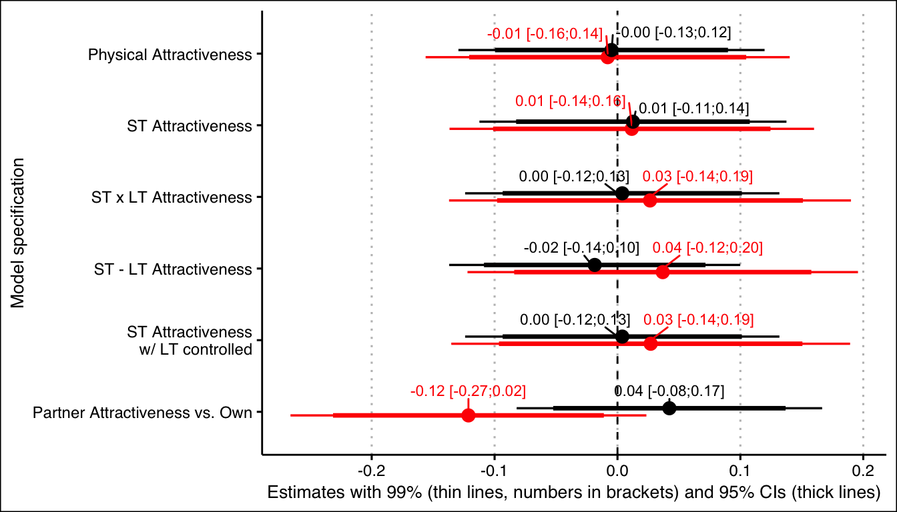
ggsave(file="rejoinder/S_Figure1.pdf", width = chunk_fig_width(7), height = chunk_fig_height(4), units = "in", dpi = 300)
ggsave(file="rejoinder/S_Figure1.png", width = chunk_fig_width(7), height = chunk_fig_height(4), units = "in", dpi = 300)
options(digits=3)
interactions_s1 %>% select(model, term, estimate, std.error, conf.low_99, conf.high_99, conf.low_95, conf.high_95, p.value) %>% mutate_at(vars(estimate, conf.low_99, conf.high_99, conf.low_95, conf.high_95), ~ sprintf("% .2f", .)) %>% mutate_at(vars(std.error, p.value), ~ sprintf("% .3f", .)) %>%
kable()| model | term | estimate | std.error | conf.low_99 | conf.high_99 | conf.low_95 | conf.high_95 | p.value |
|---|---|---|---|---|---|---|---|---|
| STalt_LTgd | COMP5var_LONG_alt | -0.09 | 0.041 | -0.20 | 0.02 | -0.17 | -0.01 | 0.031 |
| STalt_LTgd | longterm | 0.08 | 0.043 | -0.03 | 0.19 | -0.01 | 0.16 | 0.076 |
| STalt_LTalt | COMP5var_LONG_alt | -0.06 | 0.039 | -0.16 | 0.03 | -0.14 | 0.01 | 0.094 |
| STalt_LTalt | longterm_alt | 0.03 | 0.038 | -0.07 | 0.13 | -0.04 | 0.11 | 0.424 |
| STgd_LTalt | COMP5var_LONG | -0.09 | 0.038 | -0.19 | 0.00 | -0.17 | -0.02 | 0.015 |
| STgd_LTalt | longterm_alt | 0.03 | 0.038 | -0.07 | 0.12 | -0.05 | 0.10 | 0.502 |
| STgd_LTgd | COMP5var_LONG | -0.12 | 0.040 | -0.22 | -0.02 | -0.20 | -0.04 | 0.003 |
| STgd_LTgd | longterm | 0.08 | 0.042 | -0.03 | 0.19 | 0.00 | 0.17 | 0.050 |
| STalt | COMP5var_LONG_alt | -0.06 | 0.038 | -0.16 | 0.04 | -0.14 | 0.01 | 0.113 |
| STgd | COMP5var_LONG | -0.09 | 0.038 | -0.19 | 0.01 | -0.17 | -0.02 | 0.015 |
Rerun mate retention models
A note on reliability
diary %>% group_by(person) %>% select(Proprietariness, Attentiveness) %>% summarise_all(~mean(., na.rm = T)) %>% select(-person) %>% { cor.test(.$Proprietariness, .$Attentiveness) }## Adding missing grouping variables: `person`
Pearson's product-moment correlation
data: .$Proprietariness and .$Attentiveness
t = 9, df = 1000, p-value <2e-16
alternative hypothesis: true correlation is not equal to 0
95 percent confidence interval:
0.196 0.304
sample estimates:
cor
0.25
(use = 'pairwise.complete.obs') %>% round(2)## Error in round(., 2): non-numeric argument to mathematical functiondiary %>% group_by(person) %>% select(male_jealousy_2,male_mate_retention_1, male_mate_retention_2,male_attention_1) %>% summarise_all(~mean(., na.rm = T)) %>% select(-person) %>% psych::alpha()## Adding missing grouping variables: `person`##
## Reliability analysis
## Call: psych::alpha(x = .)
##
## raw_alpha std.alpha G6(smc) average_r S/N ase mean sd median_r
## 0.56 0.55 0.53 0.24 1.2 0.019 2.8 0.8 0.24
##
## lower alpha upper 95% confidence boundaries
## 0.52 0.56 0.59
##
## Reliability if an item is dropped:
## raw_alpha std.alpha G6(smc) average_r S/N alpha se var.r med.r
## male_jealousy_2 0.59 0.60 0.52 0.33 1.49 0.020 0.0235 0.25
## male_mate_retention_1 0.49 0.45 0.43 0.22 0.82 0.020 0.0696 0.14
## male_mate_retention_2 0.44 0.46 0.37 0.22 0.84 0.026 0.0051 0.24
## male_attention_1 0.36 0.39 0.33 0.17 0.64 0.028 0.0238 0.25
##
## Item statistics
## n raw.r std.r r.cor r.drop mean sd
## male_jealousy_2 1154 0.37 0.54 0.27 0.17 1.4 0.68
## male_mate_retention_1 1154 0.66 0.68 0.48 0.34 2.3 1.26
## male_mate_retention_2 1154 0.78 0.67 0.55 0.41 4.0 1.60
## male_attention_1 1154 0.74 0.72 0.61 0.49 3.5 1.16We need to do rerun G&D’s models to use fertile (effect sizes interpretable in terms of fertile window probability adjusted for validity) instead of Zfertile (standardised effects).
mate_ret <- list()
mate_ret$`S1: Main effect` = lmer(Proprietariness ~ (menstruation + premenstruation + fertile) * included + fertile_mean + (1 + fertile | id), data = diary)
mate_ret$`S1: STgd_LTgd` = lmer(Proprietariness ~ (menstruation + premenstruation + fertile) * included + fertile_mean + (Zpartner_attractiveness_COMP5var_LONG + Zpartner_attractiveness_longterm) * included * fertile + (1 + fertile | id), data = diary)
summary(mate_ret$STgd_LTgd)## Length Class Mode
## 0 NULL NULLmate_ret$`S1: STgd` = lmer(Proprietariness ~ (menstruation + premenstruation + fertile) * included + fertile_mean + (Zpartner_attractiveness_COMP5var_LONG ) * included * fertile + (1 + fertile | id), data = diary)
summary(mate_ret$STgd)## Length Class Mode
## 0 NULL NULLStudy 2 (GOCD2)
The data is documented in more details on https://rubenarslan.github.io/gocd2/
opts_chunk$set(warning = F, message = F)
load("../gocd2/data/cleaned_selected.rdata")
all_surveys = all_surveys %>% dplyr::filter(reasons_for_exclusion == "", hetero_relationship == 1)
diary = diary %>% filter(reasons_for_exclusion == "", hetero_relationship == 1)
# diary_social = diary_social %>% filter(included_d == T)
opts_chunk$set(fig.width = 8, fig.height = 6, error = TRUE)
diary <- diary %>% mutate(
premenstrual_phase = premenstrual_phase_fab,
fertile = fertile_fab
)robust_rowmeans <- function(x) {
y <- rowMeans(x, na.rm = TRUE)
y[is.nan(y)] <- NA_real_
y
}
theme_set(theme_tufte(base_size = 20, base_family='Helvetica Neue'))
plot_interaction = function(model, xlevels = list(partner_attr_composite = c(-1, 1), fertile = 10), nr = 3) {
ef = allEffects(model, xlevels = xlevels)
# ef = allEffects(model, x.var = "fertile_fab", xlevels = 2)
int = names(ef)[nr]
int_ef = data.frame(ef[[int]])
int_parts = stringr::str_split(int, ":")[[1]]
mod <- setdiff(int_parts, c("hormonal_contraception", "fertile"))
int_ef$mod <- int_ef[, mod]
int_ef[, "hormonal_contraception"] = factor(int_ef[, "hormonal_contraception"])
int_ef <- int_ef %>%
mutate(
label = case_when(
hormonal_contraception == "FALSE" ~ NA_character_,
fertile < max(fertile) ~ NA_character_,
mod == -1 ~ "-1 SD",
mod == 1 ~ "+1 SD",
TRUE ~ NA_character_
)
)
int_ef[, mod] = factor(int_ef[, mod])
ggplot(int_ef,
aes_string(x = "fertile", y = "fit", ymin = "lower", ymax = "upper",
colour = mod,
fill = mod)) +
geom_smooth(stat = 'identity') +
facet_wrap(~ hormonal_contraception, labeller = labeller(hormonal_contraception = c(`FALSE` = 'cycling', `TRUE` = 'hormonal contraception'))) +
ggtitle(paste0("Moderation by ", str_replace_all(mod, "_", " "))) +
scale_color_solarized(guide = F) +
scale_fill_solarized(guide = F) +
ggrepel::geom_label_repel(aes_string(label = "label"),
nudge_x = 1,
color = 'black',
na.rm = TRUE) +
scale_x_continuous("Fertile window probability", breaks = c(0, 0.3, 0.5))
}EP Moderators
all_surveys$spms_rel = scale(all_surveys$spms_partner) - scale(all_surveys$spms_self)
attributes(all_surveys$spms_rel)$scale_item_names <- NULL
all_surveys$partner_physical_attractiveness <- all_surveys %>% select(partner_sexiness, partner_attractiveness_body) %>% mutate_all(~scale(.)) %>% aggregate_and_document_scale(fun = robust_rowmeans) %>% scale(.)
all_surveys$partner_attr_composite <- all_surveys %>% select(partner_physical_attractiveness, satisfaction_sexual_intercourse, spms_partner, partner_attractiveness_shortterm) %>% mutate_all(~scale(.)) %>% aggregate_and_document_scale(fun = robust_rowmeans) %>% scale()
all_surveys$partner_attractiveness_longterm <- scale(all_surveys$partner_attractiveness_longterm)
all_surveys$partner_attr_composite_rel <- all_surveys %>% select(partner_physical_attractiveness, satisfaction_sexual_intercourse, spms_rel, partner_attractiveness_shortterm) %>% mutate_all(~scale(.)) %>% aggregate_and_document_scale(fun = robust_rowmeans) %>% scale(.)
all_surveys$partner_attr_composite_itemwise <- all_surveys %>% select(partner_sexiness, partner_attractiveness_face, partner_attractiveness_body, satisfaction_sexual_intercourse, spms_partner_1, spms_partner_2, spms_partner_3R, partner_attractiveness_shortterm) %>% mutate_all(~scale(.)) %>% aggregate_and_document_scale(fun = robust_rowmeans) %>% scale(.)
all_surveys$partner_attr_lt_composite <- all_surveys %>% select(partner_attractiveness_longterm, partner_feel_safe, attractiveness_warmth, partner_attractiveness_trust) %>% mutate_all(~scale(.)) %>% aggregate_and_document_scale(fun = robust_rowmeans) %>% scale(.)
all_surveys$partner_attractiveness_longterm <- scale(all_surveys$partner_attractiveness_longterm)
all_surveys %>% select(partner_sexiness, partner_attractiveness_face, partner_attractiveness_body) %>% mutate_all(~scale(.)) %>% psych::alpha()##
## Reliability analysis
## Call: psych::alpha(x = .)
##
## raw_alpha std.alpha G6(smc) average_r S/N ase mean sd median_r
## 0.81 0.81 0.76 0.59 4.4 0.013 7.4e-17 0.85 0.55
##
## lower alpha upper 95% confidence boundaries
## 0.79 0.81 0.84
##
## Reliability if an item is dropped:
## raw_alpha std.alpha G6(smc) average_r S/N alpha se
## partner_sexiness 0.70 0.70 0.54 0.54 2.3 0.025
## partner_attractiveness_face 0.82 0.82 0.70 0.70 4.6 0.015
## partner_attractiveness_body 0.71 0.71 0.55 0.55 2.4 0.024
## var.r med.r
## partner_sexiness NA 0.54
## partner_attractiveness_face NA 0.70
## partner_attractiveness_body NA 0.55
##
## Item statistics
## n raw.r std.r r.cor r.drop mean sd
## partner_sexiness 576 0.88 0.88 0.80 0.71 -1.4e-16 1
## partner_attractiveness_face 576 0.81 0.81 0.64 0.59 -9.5e-17 1
## partner_attractiveness_body 576 0.87 0.87 0.79 0.70 4.5e-16 1all_surveys %>% select(partner_physical_attractiveness, satisfaction_sexual_intercourse, spms_partner, partner_attractiveness_shortterm) %>% mutate_all(~scale(.)) %>% psych::alpha()##
## Reliability analysis
## Call: psych::alpha(x = .)
##
## raw_alpha std.alpha G6(smc) average_r S/N ase mean sd median_r
## 0.7 0.7 0.68 0.36 2.3 0.021 -9.7e-18 0.72 0.42
##
## lower alpha upper 95% confidence boundaries
## 0.65 0.7 0.74
##
## Reliability if an item is dropped:
## raw_alpha std.alpha G6(smc) average_r S/N
## partner_physical_attractiveness 0.54 0.54 0.50 0.28 1.2
## satisfaction_sexual_intercourse 0.73 0.73 0.65 0.48 2.7
## spms_partner 0.59 0.59 0.53 0.33 1.5
## partner_attractiveness_shortterm 0.64 0.64 0.59 0.37 1.7
## alpha se var.r med.r
## partner_physical_attractiveness 0.033 0.0531 0.15
## satisfaction_sexual_intercourse 0.019 0.0076 0.50
## spms_partner 0.030 0.0251 0.38
## partner_attractiveness_shortterm 0.027 0.0347 0.45
##
## Item statistics
## n raw.r std.r r.cor r.drop mean sd
## partner_physical_attractiveness 576 0.80 0.80 0.72 0.61 3.0e-18 1
## satisfaction_sexual_intercourse 576 0.61 0.61 0.40 0.31 -9.3e-17 1
## spms_partner 576 0.76 0.76 0.67 0.54 2.2e-16 1
## partner_attractiveness_shortterm 576 0.72 0.72 0.59 0.47 -1.6e-16 1all_surveys %>% select(partner_physical_attractiveness, satisfaction_sexual_intercourse, spms_rel, partner_attractiveness_shortterm) %>% mutate_all(~scale(.)) %>% psych::alpha()##
## Reliability analysis
## Call: psych::alpha(x = .)
##
## raw_alpha std.alpha G6(smc) average_r S/N ase mean sd median_r
## 0.6 0.6 0.56 0.27 1.5 0.027 -6.4e-17 0.67 0.28
##
## lower alpha upper 95% confidence boundaries
## 0.55 0.6 0.65
##
## Reliability if an item is dropped:
## raw_alpha std.alpha G6(smc) average_r S/N
## partner_physical_attractiveness 0.38 0.38 0.30 0.17 0.62
## satisfaction_sexual_intercourse 0.58 0.58 0.48 0.31 1.37
## spms_rel 0.59 0.59 0.53 0.33 1.46
## partner_attractiveness_shortterm 0.54 0.54 0.48 0.28 1.16
## alpha se var.r med.r
## partner_physical_attractiveness 0.045 0.0081 0.15
## satisfaction_sexual_intercourse 0.030 0.0034 0.29
## spms_rel 0.030 0.0251 0.38
## partner_attractiveness_shortterm 0.034 0.0323 0.29
##
## Item statistics
## n raw.r std.r r.cor r.drop mean sd
## partner_physical_attractiveness 576 0.79 0.79 0.72 0.56 3.0e-18 1
## satisfaction_sexual_intercourse 576 0.63 0.63 0.44 0.31 -9.3e-17 1
## spms_rel 576 0.61 0.61 0.38 0.29 -1.2e-17 1
## partner_attractiveness_shortterm 576 0.67 0.67 0.48 0.37 -1.6e-16 1all_surveys %>% select(partner_sexiness, partner_attractiveness_face, partner_attractiveness_body, satisfaction_sexual_intercourse, spms_partner_1, spms_partner_2, spms_partner_3R, partner_attractiveness_shortterm) %>% mutate_all(~scale(.)) %>% psych::alpha()##
## Reliability analysis
## Call: psych::alpha(x = .)
##
## raw_alpha std.alpha G6(smc) average_r S/N ase mean sd median_r
## 0.84 0.84 0.85 0.39 5.1 0.01 8.7e-18 0.68 0.4
##
## lower alpha upper 95% confidence boundaries
## 0.82 0.84 0.86
##
## Reliability if an item is dropped:
## raw_alpha std.alpha G6(smc) average_r S/N
## partner_sexiness 0.80 0.80 0.81 0.36 3.9
## partner_attractiveness_face 0.82 0.82 0.84 0.40 4.7
## partner_attractiveness_body 0.81 0.81 0.82 0.38 4.2
## satisfaction_sexual_intercourse 0.85 0.85 0.86 0.44 5.6
## spms_partner_1 0.80 0.80 0.82 0.37 4.1
## spms_partner_2 0.81 0.81 0.82 0.37 4.1
## spms_partner_3R 0.82 0.82 0.84 0.40 4.6
## partner_attractiveness_shortterm 0.82 0.82 0.84 0.40 4.7
## alpha se var.r med.r
## partner_sexiness 0.0129 0.028 0.36
## partner_attractiveness_face 0.0113 0.029 0.42
## partner_attractiveness_body 0.0122 0.028 0.38
## satisfaction_sexual_intercourse 0.0098 0.018 0.44
## spms_partner_1 0.0125 0.025 0.37
## spms_partner_2 0.0124 0.024 0.38
## spms_partner_3R 0.0114 0.027 0.41
## partner_attractiveness_shortterm 0.0113 0.029 0.41
##
## Item statistics
## n raw.r std.r r.cor r.drop mean sd
## partner_sexiness 576 0.80 0.80 0.79 0.72 -1.4e-16 1
## partner_attractiveness_face 576 0.64 0.64 0.57 0.51 -9.5e-17 1
## partner_attractiveness_body 576 0.74 0.74 0.71 0.63 4.5e-16 1
## satisfaction_sexual_intercourse 576 0.47 0.47 0.36 0.31 -9.3e-17 1
## spms_partner_1 576 0.76 0.76 0.74 0.66 1.4e-16 1
## spms_partner_2 576 0.75 0.75 0.73 0.66 -9.7e-17 1
## spms_partner_3R 576 0.66 0.66 0.60 0.54 7.4e-17 1
## partner_attractiveness_shortterm 576 0.64 0.64 0.56 0.51 -1.6e-16 1all_surveys %>% select(partner_attractiveness_longterm, partner_feel_safe, attractiveness_warmth, partner_attractiveness_trust) %>% mutate_all(~scale(.)) %>% psych::alpha()##
## Reliability analysis
## Call: psych::alpha(x = .)
##
## raw_alpha std.alpha G6(smc) average_r S/N ase mean sd median_r
## 0.81 0.81 0.77 0.52 4.3 0.013 -1e-16 0.8 0.51
##
## lower alpha upper 95% confidence boundaries
## 0.79 0.81 0.84
##
## Reliability if an item is dropped:
## raw_alpha std.alpha G6(smc) average_r S/N
## partner_attractiveness_longterm 0.80 0.80 0.73 0.57 3.9
## partner_feel_safe 0.75 0.75 0.66 0.50 2.9
## attractiveness_warmth 0.75 0.75 0.67 0.50 3.0
## partner_attractiveness_trust 0.76 0.76 0.69 0.52 3.3
## alpha se var.r med.r
## partner_attractiveness_longterm 0.015 0.0020 0.55
## partner_feel_safe 0.018 0.0014 0.48
## attractiveness_warmth 0.018 0.0018 0.48
## partner_attractiveness_trust 0.017 0.0074 0.47
##
## Item statistics
## n raw.r std.r r.cor r.drop mean sd
## partner_attractiveness_longterm 576 0.76 0.76 0.62 0.56 7.7e-18 1
## partner_feel_safe 576 0.82 0.82 0.75 0.67 4.2e-16 1
## attractiveness_warmth 576 0.82 0.82 0.75 0.67 -5.0e-16 1
## partner_attractiveness_trust 576 0.80 0.80 0.70 0.63 -3.0e-16 1diary$spms_rel = scale(diary$spms_partner) - scale(diary$spms_self)
attributes(diary$spms_rel)$scale_item_names <- NULL
diary$partner_physical_attractiveness <- diary %>% select(partner_sexiness, partner_attractiveness_body) %>% mutate_all(~scale(.)) %>% aggregate_and_document_scale(fun = robust_rowmeans) %>% scale()
diary$partner_attr_composite <- diary %>% select(partner_physical_attractiveness, satisfaction_sexual_intercourse, spms_partner, partner_attractiveness_shortterm) %>% mutate_all(~scale(.)) %>% aggregate_and_document_scale(fun = robust_rowmeans) %>% scale()
diary$partner_attractiveness_longterm <- scale(diary$partner_attractiveness_longterm)
diary$partner_attr_composite_rel <- diary %>% select(partner_physical_attractiveness, satisfaction_sexual_intercourse, spms_rel, partner_attractiveness_shortterm) %>% mutate_all(~scale(.)) %>% aggregate_and_document_scale(fun = robust_rowmeans) %>% scale()
diary$partner_attr_composite_itemwise <- diary %>% select(partner_sexiness, partner_attractiveness_face, partner_attractiveness_body, satisfaction_sexual_intercourse, spms_partner_1, spms_partner_2, spms_partner_3R, partner_attractiveness_shortterm) %>% mutate_all(~scale(.)) %>% aggregate_and_document_scale(fun = robust_rowmeans) %>% scale()
diary$partner_attr_lt_composite <- diary %>% select(partner_attractiveness_longterm, partner_feel_safe, attractiveness_warmth, partner_attractiveness_trust) %>% mutate_all(~scale(.)) %>% aggregate_and_document_scale(fun = robust_rowmeans) %>% scale()
diary$partner_attractiveness_longterm <- scale(diary$partner_attractiveness_longterm)model_ep <- lmer(extra_pair_desire ~ (menstruation + premenstrual_phase) * hormonal_contraception + fertile * (partner_attractiveness_longterm + partner_attr_composite) * hormonal_contraception + ( 1 + fertile | person), data = diary)
# plot_interaction(model_ep) +
# ggtitle("Moderation by partner attractiveness composite") +
# ylab("Extra-pair desire")
#
model_ep <- lmer(extra_pair_desire ~ (menstruation + premenstrual_phase) * hormonal_contraception + fertile * (partner_attr_composite) * hormonal_contraception + ( 1 + fertile | person), data = diary)
summary(model_ep)## Linear mixed model fit by REML. t-tests use Satterthwaite's method [
## lmerModLmerTest]
## Formula:
## extra_pair_desire ~ (menstruation + premenstrual_phase) * hormonal_contraception +
## fertile * (partner_attr_composite) * hormonal_contraception +
## (1 + fertile | person)
## Data: diary
##
## REML criterion at convergence: 55666.1
##
## Scaled residuals:
## Min 1Q Median 3Q Max
## -4.0610 -0.4628 -0.1548 0.1774 4.8121
##
## Random effects:
## Groups Name Variance Std.Dev. Corr
## person (Intercept) 0.3625 0.6021
## fertile 0.4418 0.6647 0.28
## Residual 0.6276 0.7922
## Number of obs: 22554, groups: person, 575
##
## Fixed effects:
## Estimate Std. Error
## (Intercept) 7.236e-01 3.541e-02
## menstruation -9.133e-02 2.343e-02
## premenstrual_phaseTRUE -1.400e-01 1.965e-02
## hormonal_contraceptionTRUE -2.623e-01 5.786e-02
## fertile 3.767e-01 5.690e-02
## partner_attr_composite -1.212e-01 3.391e-02
## menstruation:hormonal_contraceptionTRUE 6.623e-02 3.947e-02
## premenstrual_phaseTRUE:hormonal_contraceptionTRUE 8.446e-02 3.285e-02
## fertile:partner_attr_composite 3.123e-02 5.136e-02
## hormonal_contraceptionTRUE:fertile -3.327e-01 9.451e-02
## hormonal_contraceptionTRUE:partner_attr_composite 4.689e-02 5.483e-02
## hormonal_contraceptionTRUE:fertile:partner_attr_composite -9.994e-02 8.507e-02
## df t value
## (Intercept) 6.905e+02 20.432
## menstruation 2.197e+04 -3.898
## premenstrual_phaseTRUE 2.183e+04 -7.126
## hormonal_contraceptionTRUE 7.217e+02 -4.533
## fertile 6.970e+02 6.620
## partner_attr_composite 5.626e+02 -3.575
## menstruation:hormonal_contraceptionTRUE 2.199e+04 1.678
## premenstrual_phaseTRUE:hormonal_contraceptionTRUE 2.182e+04 2.571
## fertile:partner_attr_composite 4.478e+02 0.608
## hormonal_contraceptionTRUE:fertile 7.319e+02 -3.520
## hormonal_contraceptionTRUE:partner_attr_composite 5.830e+02 0.855
## hormonal_contraceptionTRUE:fertile:partner_attr_composite 4.600e+02 -1.175
## Pr(>|t|)
## (Intercept) < 2e-16 ***
## menstruation 9.73e-05 ***
## premenstrual_phaseTRUE 1.07e-12 ***
## hormonal_contraceptionTRUE 6.81e-06 ***
## fertile 7.17e-11 ***
## partner_attr_composite 0.000381 ***
## menstruation:hormonal_contraceptionTRUE 0.093328 .
## premenstrual_phaseTRUE:hormonal_contraceptionTRUE 0.010147 *
## fertile:partner_attr_composite 0.543448
## hormonal_contraceptionTRUE:fertile 0.000458 ***
## hormonal_contraceptionTRUE:partner_attr_composite 0.392780
## hormonal_contraceptionTRUE:fertile:partner_attr_composite 0.240649
## ---
## Signif. codes: 0 '***' 0.001 '**' 0.01 '*' 0.05 '.' 0.1 ' ' 1
##
## Correlation of Fixed Effects:
## (Intr) mnstrt pr_TRUE hr_TRUE fertil prtn__ m:_TRU p_TRUE: frt:__
## menstruatin -0.232
## prmnst_TRUE -0.289 0.417
## hrmnl_cTRUE -0.612 0.142 0.177
## fertile -0.083 0.305 0.409 0.051
## prtnr_ttr_c -0.011 0.001 0.006 0.007 -0.003
## mnstr:_TRUE 0.138 -0.594 -0.248 -0.250 -0.181 0.000
## p_TRUE:_TRU 0.173 -0.249 -0.598 -0.306 -0.245 -0.004 0.434
## frtl:prtn__ -0.005 0.007 -0.006 0.003 -0.003 0.067 -0.004 0.004
## hrmnl_TRUE: 0.050 -0.183 -0.246 -0.106 -0.602 0.002 0.332 0.425 0.002
## hrm_TRUE:__ 0.007 0.000 -0.004 0.011 0.002 -0.619 -0.004 0.003 -0.042
## hr_TRUE::__ 0.003 -0.004 0.004 -0.005 0.002 -0.041 0.007 -0.004 -0.604
## hr_TRUE: h_TRUE:_
## menstruatin
## prmnst_TRUE
## hrmnl_cTRUE
## fertile
## prtnr_ttr_c
## mnstr:_TRUE
## p_TRUE:_TRU
## frtl:prtn__
## hrmnl_TRUE:
## hrm_TRUE:__ -0.005
## hr_TRUE::__ 0.004 0.051plot_interaction(model_ep) +
ggtitle("") +
ylab("Extra-pair desire and behaviour") +
theme_clean()
ggsave(file="rejoinder/Figure2.pdf", width = chunk_fig_width(), height = chunk_fig_height(), units = "in", dpi = 300)
ggsave(file="rejoinder/Figure2.png", width = chunk_fig_width(5), height = chunk_fig_height(3), units = "in", dpi = 300)different operationalisations
operats <- list()
operats$composite <- lmer(extra_pair_desire_and_behaviour ~ menstruation + premenstrual_phase + fertile * (partner_attr_composite) + ( 1 + fertile | person), data = diary %>% filter(!is.na(spms_partner), hormonal_contraception == "FALSE"))
operats$`composite (LT adj.)` <- lmer(extra_pair_desire_and_behaviour ~ menstruation + premenstrual_phase + fertile * (partner_attr_composite + partner_attractiveness_longterm) + ( 1 + fertile | person), data = diary %>% filter(!is.na(spms_partner), hormonal_contraception == "FALSE"))
operats$mv_rel <- lmer(extra_pair_desire_and_behaviour ~ menstruation + premenstrual_phase + fertile * (spms_partner + spms_self) + ( 1 + fertile | person), data = diary %>% filter(!is.na(spms_partner), hormonal_contraception == "FALSE"))
interactions_s2 <- operats %>%
purrr::map(~ full_join(
broom.mixed::tidy(., conf.method = ci_method, conf.level = 0.99, conf.int = TRUE),
broom.mixed::tidy(., conf.method = ci_method, conf.level = 0.95, conf.int = TRUE), by = c("effect", "group", "term", "estimate", "std.error", "statistic", "p.value"), suffix = c("_99", "_95"))) %>%
bind_rows(.id = "model") %>%
filter(stringr::str_detect(term, "^fertile:partner_attr_comp.+$" ) | stringr::str_detect(term, "^fertile:partner_attr_lt_composite+$" ) | stringr::str_detect(term, "^fertile:partner_attractiveness_longterm+$" ))
interactions_s1_s2 <- bind_rows(interactions_s2 %>% mutate(study = "S2"),
interactions_s1 %>% filter(model %in% c("STgd_LTgd", "STgd", "STalt_LTalt", "STalt")) %>%
mutate(study = "S1",
model = case_when(
model == "STgd_LTgd" ~ "G&D (LT adj.)",
model == "STgd" ~ "G&D",
model == "STalt" ~ "alt.",
model == "STalt_LTalt" ~ "alt. (LT adj.)"))) %>%
mutate(longterm = case_when(
term %contains% "longterm" ~ "long-term",
term %contains% "lt_composite" ~ "long-term",
term %contains% "attr_composite" ~ "short-term",
TRUE ~ "short-term"
)) %>%
mutate(study_model = fct_rev(fct_relevel(paste(study, model), "S1 G&D", "S1 alt.", "S2 composite", "S1 G&D (LT adj.)", "S1 alt. (LT adj.)", "S2 composite (LT adj.)")))
ggplot(interactions_s1_s2, aes(study_model, y = estimate, ymin = conf.low_95, ymax = conf.high_95, colour = study)) +
geom_hline(yintercept = 0, linetype = 'dashed') +
geom_linerange(size = 1.2, position = position_dodge(width = 0.2)) +
geom_pointrange(aes(ymin = conf.low_99, ymax = conf.high_99), size = 0.6, position = position_dodge(width = 0.2)) +
ggrepel::geom_text_repel(aes(label = sprintf("%.2f [%.2f;%.2f]", estimate, conf.low_99, conf.high_99)), nudge_x = 0.3, size = 3) +
facet_wrap(~ longterm) +
scale_x_discrete("Model specification") +
scale_color_solarized(guide = F) +
scale_y_continuous("Estimate with 99% and 95% CIs") +
coord_flip() +
theme_bw()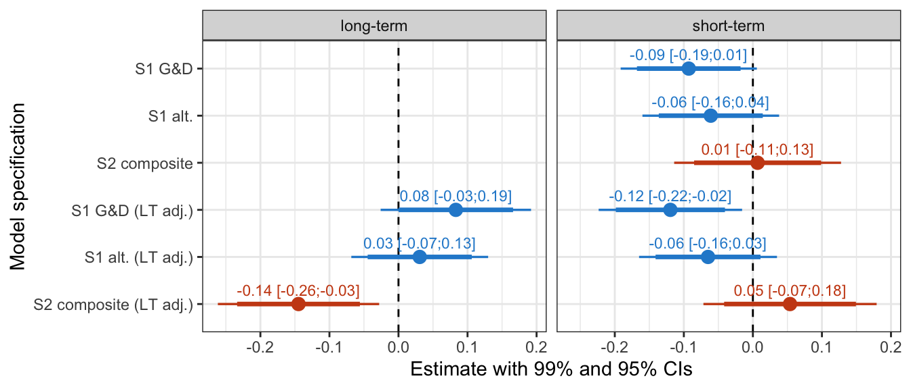
ggsave(file="rejoinder/Figure1.pdf", width = chunk_fig_width(7), height = chunk_fig_height(3), units = "in", dpi = 300)
ggsave(file="rejoinder/Figure1.png", width = chunk_fig_width(7), height = chunk_fig_height(3), units = "in", dpi = 300)
interactions_s2 %>% select(model, term, estimate, std.error, conf.low_99, conf.high_99, conf.low_95, conf.high_95, p.value) %>% mutate_at(vars(estimate, conf.low_99, conf.high_99, conf.low_95, conf.high_95), ~ sprintf("% .2f", .)) %>% mutate_at(vars(std.error, p.value), ~ sprintf("% .3f", .)) %>%
kable()| model | term | estimate | std.error | conf.low_99 | conf.high_99 | conf.low_95 | conf.high_95 | p.value |
|---|---|---|---|---|---|---|---|---|
| composite | fertile:partner_attr_composite | 0.01 | 0.047 | -0.11 | 0.13 | -0.09 | 0.10 | 0.884 |
| composite (LT adj.) | fertile:partner_attr_composite | 0.05 | 0.049 | -0.07 | 0.18 | -0.04 | 0.15 | 0.270 |
| composite (LT adj.) | fertile:partner_attractiveness_longterm | -0.14 | 0.045 | -0.26 | -0.03 | -0.23 | -0.06 | 0.002 |
model_ip <- lmer(in_pair_desire ~ (menstruation + premenstrual_phase + fertile) * hormonal_contraception + fertile * hormonal_contraception * (partner_attr_composite + partner_attractiveness_longterm) + ( 1 + fertile | person), data = diary)
summary(model_ip)## Linear mixed model fit by REML. t-tests use Satterthwaite's method [
## lmerModLmerTest]
## Formula: in_pair_desire ~ (menstruation + premenstrual_phase + fertile) *
## hormonal_contraception + fertile * hormonal_contraception *
## (partner_attr_composite + partner_attractiveness_longterm) +
## (1 + fertile | person)
## Data: diary
##
## REML criterion at convergence: 66593.6
##
## Scaled residuals:
## Min 1Q Median 3Q Max
## -3.0876 -0.6929 0.0143 0.7298 3.4567
##
## Random effects:
## Groups Name Variance Std.Dev. Corr
## person (Intercept) 0.3825 0.6185
## fertile 0.5023 0.7087 -0.18
## Residual 1.1658 1.0797
## Number of obs: 21694, groups: person, 575
##
## Fixed effects:
## Estimate
## (Intercept) 1.947e+00
## menstruation -6.089e-02
## premenstrual_phaseTRUE -9.418e-02
## fertile 4.873e-01
## hormonal_contraceptionTRUE 2.062e-01
## partner_attr_composite 2.117e-01
## partner_attractiveness_longterm 1.655e-01
## menstruation:hormonal_contraceptionTRUE -1.582e-02
## premenstrual_phaseTRUE:hormonal_contraceptionTRUE 9.675e-03
## fertile:hormonal_contraceptionTRUE -5.433e-01
## fertile:partner_attr_composite -1.878e-02
## fertile:partner_attractiveness_longterm -3.104e-03
## hormonal_contraceptionTRUE:partner_attr_composite 5.474e-03
## hormonal_contraceptionTRUE:partner_attractiveness_longterm 5.387e-02
## fertile:hormonal_contraceptionTRUE:partner_attr_composite 6.060e-02
## fertile:hormonal_contraceptionTRUE:partner_attractiveness_longterm -2.860e-02
## Std. Error
## (Intercept) 3.904e-02
## menstruation 3.252e-02
## premenstrual_phaseTRUE 2.733e-02
## fertile 7.173e-02
## hormonal_contraceptionTRUE 6.451e-02
## partner_attr_composite 3.768e-02
## partner_attractiveness_longterm 3.518e-02
## menstruation:hormonal_contraceptionTRUE 5.474e-02
## premenstrual_phaseTRUE:hormonal_contraceptionTRUE 4.561e-02
## fertile:hormonal_contraceptionTRUE 1.202e-01
## fertile:partner_attr_composite 6.624e-02
## fertile:partner_attractiveness_longterm 6.169e-02
## hormonal_contraceptionTRUE:partner_attr_composite 6.071e-02
## hormonal_contraceptionTRUE:partner_attractiveness_longterm 6.475e-02
## fertile:hormonal_contraceptionTRUE:partner_attr_composite 1.080e-01
## fertile:hormonal_contraceptionTRUE:partner_attractiveness_longterm 1.157e-01
## df
## (Intercept) 7.604e+02
## menstruation 2.120e+04
## premenstrual_phaseTRUE 2.103e+04
## fertile 7.878e+02
## hormonal_contraceptionTRUE 8.070e+02
## partner_attr_composite 5.429e+02
## partner_attractiveness_longterm 5.432e+02
## menstruation:hormonal_contraceptionTRUE 2.122e+04
## premenstrual_phaseTRUE:hormonal_contraceptionTRUE 2.103e+04
## fertile:hormonal_contraceptionTRUE 8.320e+02
## fertile:partner_attr_composite 4.675e+02
## fertile:partner_attractiveness_longterm 4.681e+02
## hormonal_contraceptionTRUE:partner_attr_composite 5.676e+02
## hormonal_contraceptionTRUE:partner_attractiveness_longterm 5.670e+02
## fertile:hormonal_contraceptionTRUE:partner_attr_composite 4.696e+02
## fertile:hormonal_contraceptionTRUE:partner_attractiveness_longterm 4.765e+02
## t value
## (Intercept) 49.864
## menstruation -1.873
## premenstrual_phaseTRUE -3.446
## fertile 6.793
## hormonal_contraceptionTRUE 3.197
## partner_attr_composite 5.617
## partner_attractiveness_longterm 4.703
## menstruation:hormonal_contraceptionTRUE -0.289
## premenstrual_phaseTRUE:hormonal_contraceptionTRUE 0.212
## fertile:hormonal_contraceptionTRUE -4.521
## fertile:partner_attr_composite -0.284
## fertile:partner_attractiveness_longterm -0.050
## hormonal_contraceptionTRUE:partner_attr_composite 0.090
## hormonal_contraceptionTRUE:partner_attractiveness_longterm 0.832
## fertile:hormonal_contraceptionTRUE:partner_attr_composite 0.561
## fertile:hormonal_contraceptionTRUE:partner_attractiveness_longterm -0.247
## Pr(>|t|)
## (Intercept) < 2e-16 ***
## menstruation 0.061125 .
## premenstrual_phaseTRUE 0.000569 ***
## fertile 2.17e-11 ***
## hormonal_contraceptionTRUE 0.001443 **
## partner_attr_composite 3.10e-08 ***
## partner_attractiveness_longterm 3.25e-06 ***
## menstruation:hormonal_contraceptionTRUE 0.772632
## premenstrual_phaseTRUE:hormonal_contraceptionTRUE 0.832011
## fertile:hormonal_contraceptionTRUE 7.05e-06 ***
## fertile:partner_attr_composite 0.776847
## fertile:partner_attractiveness_longterm 0.959900
## hormonal_contraceptionTRUE:partner_attr_composite 0.928186
## hormonal_contraceptionTRUE:partner_attractiveness_longterm 0.405777
## fertile:hormonal_contraceptionTRUE:partner_attr_composite 0.574944
## fertile:hormonal_contraceptionTRUE:partner_attractiveness_longterm 0.804818
## ---
## Signif. codes: 0 '***' 0.001 '**' 0.01 '*' 0.05 '.' 0.1 ' ' 1##
## Correlation matrix not shown by default, as p = 16 > 12.
## Use print(x, correlation=TRUE) or
## vcov(x) if you need itMate retention
diary$mate_retention_23 <- diary %>% select(mate_retention2, mate_retention3) %>% aggregate_and_document_scale(fun = robust_rowmeans)
mate_ret$`S2: Main effect` <- lmer(mate_retention ~ (menstruation + premenstrual_phase + fertile) * hormonal_contraception + ( 1 + fertile | person), data = diary)
summary(mate_ret$`S2: Main effect`)## Linear mixed model fit by REML. t-tests use Satterthwaite's method [
## lmerModLmerTest]
## Formula: mate_retention ~ (menstruation + premenstrual_phase + fertile) *
## hormonal_contraception + (1 + fertile | person)
## Data: diary
##
## REML criterion at convergence: 41703.3
##
## Scaled residuals:
## Min 1Q Median 3Q Max
## -2.8560 -0.5938 -0.2289 0.4333 4.3616
##
## Random effects:
## Groups Name Variance Std.Dev. Corr
## person (Intercept) 0.22770 0.4772
## fertile 0.08743 0.2957 0.25
## Residual 0.71519 0.8457
## Number of obs: 16119, groups: person, 573
##
## Fixed effects:
## Estimate Std. Error
## (Intercept) 7.216e-01 3.158e-02
## menstruation -2.073e-02 2.950e-02
## premenstrual_phaseTRUE -4.458e-02 2.488e-02
## fertile 5.863e-02 5.663e-02
## hormonal_contraceptionTRUE -5.690e-02 5.207e-02
## menstruation:hormonal_contraceptionTRUE 5.978e-02 4.971e-02
## premenstrual_phaseTRUE:hormonal_contraceptionTRUE 9.023e-02 4.133e-02
## fertile:hormonal_contraceptionTRUE -3.191e-03 9.487e-02
## df t value Pr(>|t|)
## (Intercept) 8.206e+02 22.846 <2e-16
## menstruation 1.567e+04 -0.703 0.4824
## premenstrual_phaseTRUE 1.554e+04 -1.792 0.0732
## fertile 8.781e+02 1.035 0.3009
## hormonal_contraceptionTRUE 8.786e+02 -1.093 0.2748
## menstruation:hormonal_contraceptionTRUE 1.569e+04 1.203 0.2292
## premenstrual_phaseTRUE:hormonal_contraceptionTRUE 1.553e+04 2.183 0.0290
## fertile:hormonal_contraceptionTRUE 9.387e+02 -0.034 0.9732
##
## (Intercept) ***
## menstruation
## premenstrual_phaseTRUE .
## fertile
## hormonal_contraceptionTRUE
## menstruation:hormonal_contraceptionTRUE
## premenstrual_phaseTRUE:hormonal_contraceptionTRUE *
## fertile:hormonal_contraceptionTRUE
## ---
## Signif. codes: 0 '***' 0.001 '**' 0.01 '*' 0.05 '.' 0.1 ' ' 1
##
## Correlation of Fixed Effects:
## (Intr) mnstrt pr_TRUE fertil h_TRUE m:_TRU p_TRUE:
## menstruatin -0.334
## prmnst_TRUE -0.408 0.422
## fertile -0.373 0.392 0.521
## hrmnl_cTRUE -0.607 0.203 0.247 0.226
## mnstr:_TRUE 0.199 -0.594 -0.250 -0.233 -0.352
## p_TRUE:_TRU 0.245 -0.254 -0.602 -0.314 -0.426 0.437
## frtl:h_TRUE 0.223 -0.234 -0.311 -0.597 -0.394 0.420 0.537mate_ret$`S2: Main effect (23)` <- lmer(mate_retention_23 ~ (menstruation + premenstrual_phase + fertile) * hormonal_contraception + ( 1 + fertile | person), data = diary)
summary(mate_ret$`S2: Main effect (23)`)## Linear mixed model fit by REML. t-tests use Satterthwaite's method [
## lmerModLmerTest]
## Formula: mate_retention_23 ~ (menstruation + premenstrual_phase + fertile) *
## hormonal_contraception + (1 + fertile | person)
## Data: diary
##
## REML criterion at convergence: 26705
##
## Scaled residuals:
## Min 1Q Median 3Q Max
## -3.1983 -0.4513 -0.1498 -0.0215 5.5973
##
## Random effects:
## Groups Name Variance Std.Dev. Corr
## person (Intercept) 0.1876 0.4331
## fertile 0.2027 0.4503 0.15
## Residual 0.4388 0.6624
## Number of obs: 12519, groups: person, 571
##
## Fixed effects:
## Estimate Std. Error
## (Intercept) 4.540e-01 2.856e-02
## menstruation -4.515e-02 2.635e-02
## premenstrual_phaseTRUE -3.835e-02 2.222e-02
## fertile 1.391e-02 5.490e-02
## hormonal_contraceptionTRUE -4.568e-02 4.719e-02
## menstruation:hormonal_contraceptionTRUE 2.621e-02 4.469e-02
## premenstrual_phaseTRUE:hormonal_contraceptionTRUE 3.393e-02 3.715e-02
## fertile:hormonal_contraceptionTRUE 1.174e-02 9.220e-02
## df t value Pr(>|t|)
## (Intercept) 8.150e+02 15.896 <2e-16
## menstruation 1.199e+04 -1.713 0.0867
## premenstrual_phaseTRUE 1.188e+04 -1.726 0.0843
## fertile 7.232e+02 0.253 0.8000
## hormonal_contraceptionTRUE 8.779e+02 -0.968 0.3333
## menstruation:hormonal_contraceptionTRUE 1.204e+04 0.586 0.5576
## premenstrual_phaseTRUE:hormonal_contraceptionTRUE 1.190e+04 0.913 0.3611
## fertile:hormonal_contraceptionTRUE 7.942e+02 0.127 0.8987
##
## (Intercept) ***
## menstruation .
## premenstrual_phaseTRUE .
## fertile
## hormonal_contraceptionTRUE
## menstruation:hormonal_contraceptionTRUE
## premenstrual_phaseTRUE:hormonal_contraceptionTRUE
## fertile:hormonal_contraceptionTRUE
## ---
## Signif. codes: 0 '***' 0.001 '**' 0.01 '*' 0.05 '.' 0.1 ' ' 1
##
## Correlation of Fixed Effects:
## (Intr) mnstrt pr_TRUE fertil h_TRUE m:_TRU p_TRUE:
## menstruatin -0.331
## prmnst_TRUE -0.404 0.423
## fertile -0.342 0.364 0.482
## hrmnl_cTRUE -0.605 0.200 0.245 0.207
## mnstr:_TRUE 0.195 -0.590 -0.250 -0.215 -0.351
## p_TRUE:_TRU 0.242 -0.253 -0.598 -0.289 -0.424 0.441
## frtl:h_TRUE 0.203 -0.217 -0.287 -0.595 -0.368 0.390 0.502mate_ret$`S2: Comp. mod.` <- lmer(mate_retention ~ (menstruation + premenstrual_phase + fertile) * hormonal_contraception + fertile * hormonal_contraception * partner_attr_composite + ( 1 + fertile | person), data = diary)
summary(mate_ret$`S2: Comp. mod.`)## Linear mixed model fit by REML. t-tests use Satterthwaite's method [
## lmerModLmerTest]
## Formula: mate_retention ~ (menstruation + premenstrual_phase + fertile) *
## hormonal_contraception + fertile * hormonal_contraception *
## partner_attr_composite + (1 + fertile | person)
## Data: diary
##
## REML criterion at convergence: 41719
##
## Scaled residuals:
## Min 1Q Median 3Q Max
## -2.8587 -0.5906 -0.2294 0.4316 4.3653
##
## Random effects:
## Groups Name Variance Std.Dev. Corr
## person (Intercept) 0.22738 0.4768
## fertile 0.09064 0.3011 0.25
## Residual 0.71518 0.8457
## Number of obs: 16119, groups: person, 573
##
## Fixed effects:
## Estimate Std. Error
## (Intercept) 7.213e-01 3.157e-02
## menstruation -2.064e-02 2.951e-02
## premenstrual_phaseTRUE -4.451e-02 2.488e-02
## fertile 5.884e-02 5.673e-02
## hormonal_contraceptionTRUE -5.522e-02 5.206e-02
## partner_attr_composite 1.459e-02 2.849e-02
## menstruation:hormonal_contraceptionTRUE 5.934e-02 4.971e-02
## premenstrual_phaseTRUE:hormonal_contraceptionTRUE 9.025e-02 4.133e-02
## fertile:hormonal_contraceptionTRUE -5.385e-03 9.506e-02
## fertile:partner_attr_composite -1.331e-03 4.713e-02
## hormonal_contraceptionTRUE:partner_attr_composite 4.008e-02 4.643e-02
## fertile:hormonal_contraceptionTRUE:partner_attr_composite -1.748e-02 7.816e-02
## df t value
## (Intercept) 8.173e+02 22.847
## menstruation 1.567e+04 -0.700
## premenstrual_phaseTRUE 1.554e+04 -1.789
## fertile 8.716e+02 1.037
## hormonal_contraceptionTRUE 8.754e+02 -1.061
## partner_attr_composite 5.241e+02 0.512
## menstruation:hormonal_contraceptionTRUE 1.568e+04 1.194
## premenstrual_phaseTRUE:hormonal_contraceptionTRUE 1.553e+04 2.184
## fertile:hormonal_contraceptionTRUE 9.356e+02 -0.057
## fertile:partner_attr_composite 4.040e+02 -0.028
## hormonal_contraceptionTRUE:partner_attr_composite 5.486e+02 0.863
## fertile:hormonal_contraceptionTRUE:partner_attr_composite 4.095e+02 -0.224
## Pr(>|t|)
## (Intercept) <2e-16 ***
## menstruation 0.4842
## premenstrual_phaseTRUE 0.0737 .
## fertile 0.2999
## hormonal_contraceptionTRUE 0.2891
## partner_attr_composite 0.6088
## menstruation:hormonal_contraceptionTRUE 0.2326
## premenstrual_phaseTRUE:hormonal_contraceptionTRUE 0.0290 *
## fertile:hormonal_contraceptionTRUE 0.9548
## fertile:partner_attr_composite 0.9775
## hormonal_contraceptionTRUE:partner_attr_composite 0.3883
## fertile:hormonal_contraceptionTRUE:partner_attr_composite 0.8232
## ---
## Signif. codes: 0 '***' 0.001 '**' 0.01 '*' 0.05 '.' 0.1 ' ' 1
##
## Correlation of Fixed Effects:
## (Intr) mnstrt pr_TRUE fertil hr_TRUE prtn__ m:_TRU p_TRUE: fr:_TRUE
## menstruatin -0.335
## prmnst_TRUE -0.408 0.422
## fertile -0.373 0.392 0.520
## hrmnl_cTRUE -0.606 0.203 0.247 0.226
## prtnr_ttr_c -0.012 0.005 0.007 0.000 0.007
## mnstr:_TRUE 0.199 -0.594 -0.250 -0.232 -0.352 -0.003
## p_TRUE:_TRU 0.245 -0.254 -0.602 -0.313 -0.426 -0.004 0.437
## frtl:h_TRUE 0.222 -0.234 -0.310 -0.597 -0.394 0.000 0.419 0.536
## frtl:prtn__ -0.003 0.003 -0.007 0.000 0.002 -0.164 -0.002 0.004 0.000
## hrm_TRUE:__ 0.007 -0.003 -0.004 0.000 0.010 -0.614 -0.001 0.004 -0.010
## fr:_TRUE:__ 0.002 -0.002 0.004 0.000 -0.014 0.099 0.008 -0.001 0.022
## frt:__ h_TRUE:
## menstruatin
## prmnst_TRUE
## fertile
## hrmnl_cTRUE
## prtnr_ttr_c
## mnstr:_TRUE
## p_TRUE:_TRU
## frtl:h_TRUE
## frtl:prtn__
## hrm_TRUE:__ 0.101
## fr:_TRUE:__ -0.603 -0.174mate_ret$`S2: Comp. mod. (LT-adj.)` <- lmer(mate_retention ~ (menstruation + premenstrual_phase + fertile) * hormonal_contraception + fertile * hormonal_contraception * (partner_attr_composite + partner_attractiveness_longterm) + ( 1 + fertile | person), data = diary)
summary(mate_ret$`S2: Comp. mod. (LT-adj.)`)## Linear mixed model fit by REML. t-tests use Satterthwaite's method [
## lmerModLmerTest]
## Formula: mate_retention ~ (menstruation + premenstrual_phase + fertile) *
## hormonal_contraception + fertile * hormonal_contraception *
## (partner_attr_composite + partner_attractiveness_longterm) +
## (1 + fertile | person)
## Data: diary
##
## REML criterion at convergence: 41735.5
##
## Scaled residuals:
## Min 1Q Median 3Q Max
## -2.8605 -0.5914 -0.2287 0.4311 4.3684
##
## Random effects:
## Groups Name Variance Std.Dev. Corr
## person (Intercept) 0.22825 0.4778
## fertile 0.09143 0.3024 0.25
## Residual 0.71521 0.8457
## Number of obs: 16119, groups: person, 573
##
## Fixed effects:
## Estimate
## (Intercept) 7.218e-01
## menstruation -2.042e-02
## premenstrual_phaseTRUE -4.440e-02
## fertile 6.037e-02
## hormonal_contraceptionTRUE -5.491e-02
## partner_attr_composite 1.275e-02
## partner_attractiveness_longterm 5.962e-03
## menstruation:hormonal_contraceptionTRUE 5.915e-02
## premenstrual_phaseTRUE:hormonal_contraceptionTRUE 9.013e-02
## fertile:hormonal_contraceptionTRUE -1.442e-02
## fertile:partner_attr_composite -8.243e-03
## fertile:partner_attractiveness_longterm 2.084e-02
## hormonal_contraceptionTRUE:partner_attr_composite 4.251e-02
## hormonal_contraceptionTRUE:partner_attractiveness_longterm -1.018e-02
## fertile:hormonal_contraceptionTRUE:partner_attr_composite -2.082e-02
## fertile:hormonal_contraceptionTRUE:partner_attractiveness_longterm 3.705e-02
## Std. Error
## (Intercept) 3.167e-02
## menstruation 2.951e-02
## premenstrual_phaseTRUE 2.489e-02
## fertile 5.684e-02
## hormonal_contraceptionTRUE 5.247e-02
## partner_attr_composite 2.981e-02
## partner_attractiveness_longterm 2.796e-02
## menstruation:hormonal_contraceptionTRUE 4.972e-02
## premenstrual_phaseTRUE:hormonal_contraceptionTRUE 4.133e-02
## fertile:hormonal_contraceptionTRUE 9.565e-02
## fertile:partner_attr_composite 4.956e-02
## fertile:partner_attractiveness_longterm 4.626e-02
## hormonal_contraceptionTRUE:partner_attr_composite 4.809e-02
## hormonal_contraceptionTRUE:partner_attractiveness_longterm 5.173e-02
## fertile:hormonal_contraceptionTRUE:partner_attr_composite 8.077e-02
## fertile:hormonal_contraceptionTRUE:partner_attractiveness_longterm 8.797e-02
## df
## (Intercept) 8.109e+02
## menstruation 1.566e+04
## premenstrual_phaseTRUE 1.553e+04
## fertile 8.658e+02
## hormonal_contraceptionTRUE 8.653e+02
## partner_attr_composite 5.231e+02
## partner_attractiveness_longterm 5.247e+02
## menstruation:hormonal_contraceptionTRUE 1.568e+04
## premenstrual_phaseTRUE:hormonal_contraceptionTRUE 1.553e+04
## fertile:hormonal_contraceptionTRUE 9.258e+02
## fertile:partner_attr_composite 4.047e+02
## fertile:partner_attractiveness_longterm 4.031e+02
## hormonal_contraceptionTRUE:partner_attr_composite 5.453e+02
## hormonal_contraceptionTRUE:partner_attractiveness_longterm 5.550e+02
## fertile:hormonal_contraceptionTRUE:partner_attr_composite 4.047e+02
## fertile:hormonal_contraceptionTRUE:partner_attractiveness_longterm 4.418e+02
## t value
## (Intercept) 22.790
## menstruation -0.692
## premenstrual_phaseTRUE -1.784
## fertile 1.062
## hormonal_contraceptionTRUE -1.046
## partner_attr_composite 0.428
## partner_attractiveness_longterm 0.213
## menstruation:hormonal_contraceptionTRUE 1.190
## premenstrual_phaseTRUE:hormonal_contraceptionTRUE 2.181
## fertile:hormonal_contraceptionTRUE -0.151
## fertile:partner_attr_composite -0.166
## fertile:partner_attractiveness_longterm 0.451
## hormonal_contraceptionTRUE:partner_attr_composite 0.884
## hormonal_contraceptionTRUE:partner_attractiveness_longterm -0.197
## fertile:hormonal_contraceptionTRUE:partner_attr_composite -0.258
## fertile:hormonal_contraceptionTRUE:partner_attractiveness_longterm 0.421
## Pr(>|t|)
## (Intercept) <2e-16 ***
## menstruation 0.4889
## premenstrual_phaseTRUE 0.0744 .
## fertile 0.2885
## hormonal_contraceptionTRUE 0.2956
## partner_attr_composite 0.6690
## partner_attractiveness_longterm 0.8313
## menstruation:hormonal_contraceptionTRUE 0.2342
## premenstrual_phaseTRUE:hormonal_contraceptionTRUE 0.0292 *
## fertile:hormonal_contraceptionTRUE 0.8802
## fertile:partner_attr_composite 0.8680
## fertile:partner_attractiveness_longterm 0.6525
## hormonal_contraceptionTRUE:partner_attr_composite 0.3771
## hormonal_contraceptionTRUE:partner_attractiveness_longterm 0.8440
## fertile:hormonal_contraceptionTRUE:partner_attr_composite 0.7967
## fertile:hormonal_contraceptionTRUE:partner_attractiveness_longterm 0.6738
## ---
## Signif. codes: 0 '***' 0.001 '**' 0.01 '*' 0.05 '.' 0.1 ' ' 1##
## Correlation matrix not shown by default, as p = 16 > 12.
## Use print(x, correlation=TRUE) or
## vcov(x) if you need itmate_ret$`S2: Comp. mod. (23)` <- lmer(mate_retention_23 ~ (menstruation + premenstrual_phase + fertile) * hormonal_contraception + fertile * hormonal_contraception * partner_attr_composite + ( 1 + fertile | person), data = diary)
summary(mate_ret$`S2: Comp. mod. (23)`)## Linear mixed model fit by REML. t-tests use Satterthwaite's method [
## lmerModLmerTest]
## Formula: mate_retention_23 ~ (menstruation + premenstrual_phase + fertile) *
## hormonal_contraception + fertile * hormonal_contraception *
## partner_attr_composite + (1 + fertile | person)
## Data: diary
##
## REML criterion at convergence: 26714.5
##
## Scaled residuals:
## Min 1Q Median 3Q Max
## -3.1968 -0.4494 -0.1508 -0.0220 5.6000
##
## Random effects:
## Groups Name Variance Std.Dev. Corr
## person (Intercept) 0.1876 0.4331
## fertile 0.1983 0.4453 0.14
## Residual 0.4388 0.6624
## Number of obs: 12519, groups: person, 571
##
## Fixed effects:
## Estimate Std. Error
## (Intercept) 4.541e-01 2.856e-02
## menstruation -4.521e-02 2.635e-02
## premenstrual_phaseTRUE -3.846e-02 2.222e-02
## fertile 1.329e-02 5.476e-02
## hormonal_contraceptionTRUE -4.602e-02 4.721e-02
## partner_attr_composite -4.597e-03 2.579e-02
## menstruation:hormonal_contraceptionTRUE 2.661e-02 4.469e-02
## premenstrual_phaseTRUE:hormonal_contraceptionTRUE 3.438e-02 3.715e-02
## fertile:hormonal_contraceptionTRUE 1.521e-02 9.200e-02
## fertile:partner_attr_composite 8.690e-03 4.662e-02
## hormonal_contraceptionTRUE:partner_attr_composite 5.167e-02 4.206e-02
## fertile:hormonal_contraceptionTRUE:partner_attr_composite 1.383e-01 7.787e-02
## df t value
## (Intercept) 8.122e+02 15.898
## menstruation 1.199e+04 -1.716
## premenstrual_phaseTRUE 1.188e+04 -1.731
## fertile 7.220e+02 0.243
## hormonal_contraceptionTRUE 8.750e+02 -0.975
## partner_attr_composite 5.240e+02 -0.178
## menstruation:hormonal_contraceptionTRUE 1.204e+04 0.595
## premenstrual_phaseTRUE:hormonal_contraceptionTRUE 1.190e+04 0.925
## fertile:hormonal_contraceptionTRUE 7.957e+02 0.165
## fertile:partner_attr_composite 3.692e+02 0.186
## hormonal_contraceptionTRUE:partner_attr_composite 5.512e+02 1.228
## fertile:hormonal_contraceptionTRUE:partner_attr_composite 3.903e+02 1.776
## Pr(>|t|)
## (Intercept) <2e-16 ***
## menstruation 0.0863 .
## premenstrual_phaseTRUE 0.0835 .
## fertile 0.8083
## hormonal_contraceptionTRUE 0.3299
## partner_attr_composite 0.8586
## menstruation:hormonal_contraceptionTRUE 0.5515
## premenstrual_phaseTRUE:hormonal_contraceptionTRUE 0.3548
## fertile:hormonal_contraceptionTRUE 0.8687
## fertile:partner_attr_composite 0.8522
## hormonal_contraceptionTRUE:partner_attr_composite 0.2198
## fertile:hormonal_contraceptionTRUE:partner_attr_composite 0.0766 .
## ---
## Signif. codes: 0 '***' 0.001 '**' 0.01 '*' 0.05 '.' 0.1 ' ' 1
##
## Correlation of Fixed Effects:
## (Intr) mnstrt pr_TRUE fertil hr_TRUE prtn__ m:_TRU p_TRUE: fr:_TRUE
## menstruatin -0.331
## prmnst_TRUE -0.404 0.423
## fertile -0.348 0.365 0.484
## hrmnl_cTRUE -0.605 0.200 0.245 0.210
## prtnr_ttr_c -0.009 0.005 0.007 -0.002 0.006
## mnstr:_TRUE 0.195 -0.590 -0.250 -0.215 -0.351 -0.003
## p_TRUE:_TRU 0.242 -0.253 -0.598 -0.289 -0.424 -0.004 0.441
## frtl:h_TRUE 0.207 -0.217 -0.288 -0.595 -0.374 0.001 0.391 0.503
## frtl:prtn__ -0.002 -0.003 -0.012 -0.006 0.001 -0.149 0.002 0.007 0.004
## hrm_TRUE:__ 0.006 -0.003 -0.004 0.001 0.012 -0.613 0.000 0.001 -0.011
## fr:_TRUE:__ 0.001 0.002 0.007 0.004 -0.013 0.089 0.003 0.000 0.015
## frt:__ h_TRUE:
## menstruatin
## prmnst_TRUE
## fertile
## hrmnl_cTRUE
## prtnr_ttr_c
## mnstr:_TRUE
## p_TRUE:_TRU
## frtl:h_TRUE
## frtl:prtn__
## hrm_TRUE:__ 0.092
## fr:_TRUE:__ -0.599 -0.165mate_ret$`S2: Comp. mod. (LT-adj., 23)` <- lmer(mate_retention_23 ~ (menstruation + premenstrual_phase + fertile) * hormonal_contraception + fertile * hormonal_contraception * (partner_attr_composite + partner_attractiveness_longterm) + ( 1 + fertile | person), data = diary)
summary(mate_ret$`S2: Comp. mod. (LT-adj.)`)## Linear mixed model fit by REML. t-tests use Satterthwaite's method [
## lmerModLmerTest]
## Formula: mate_retention ~ (menstruation + premenstrual_phase + fertile) *
## hormonal_contraception + fertile * hormonal_contraception *
## (partner_attr_composite + partner_attractiveness_longterm) +
## (1 + fertile | person)
## Data: diary
##
## REML criterion at convergence: 41735.5
##
## Scaled residuals:
## Min 1Q Median 3Q Max
## -2.8605 -0.5914 -0.2287 0.4311 4.3684
##
## Random effects:
## Groups Name Variance Std.Dev. Corr
## person (Intercept) 0.22825 0.4778
## fertile 0.09143 0.3024 0.25
## Residual 0.71521 0.8457
## Number of obs: 16119, groups: person, 573
##
## Fixed effects:
## Estimate
## (Intercept) 7.218e-01
## menstruation -2.042e-02
## premenstrual_phaseTRUE -4.440e-02
## fertile 6.037e-02
## hormonal_contraceptionTRUE -5.491e-02
## partner_attr_composite 1.275e-02
## partner_attractiveness_longterm 5.962e-03
## menstruation:hormonal_contraceptionTRUE 5.915e-02
## premenstrual_phaseTRUE:hormonal_contraceptionTRUE 9.013e-02
## fertile:hormonal_contraceptionTRUE -1.442e-02
## fertile:partner_attr_composite -8.243e-03
## fertile:partner_attractiveness_longterm 2.084e-02
## hormonal_contraceptionTRUE:partner_attr_composite 4.251e-02
## hormonal_contraceptionTRUE:partner_attractiveness_longterm -1.018e-02
## fertile:hormonal_contraceptionTRUE:partner_attr_composite -2.082e-02
## fertile:hormonal_contraceptionTRUE:partner_attractiveness_longterm 3.705e-02
## Std. Error
## (Intercept) 3.167e-02
## menstruation 2.951e-02
## premenstrual_phaseTRUE 2.489e-02
## fertile 5.684e-02
## hormonal_contraceptionTRUE 5.247e-02
## partner_attr_composite 2.981e-02
## partner_attractiveness_longterm 2.796e-02
## menstruation:hormonal_contraceptionTRUE 4.972e-02
## premenstrual_phaseTRUE:hormonal_contraceptionTRUE 4.133e-02
## fertile:hormonal_contraceptionTRUE 9.565e-02
## fertile:partner_attr_composite 4.956e-02
## fertile:partner_attractiveness_longterm 4.626e-02
## hormonal_contraceptionTRUE:partner_attr_composite 4.809e-02
## hormonal_contraceptionTRUE:partner_attractiveness_longterm 5.173e-02
## fertile:hormonal_contraceptionTRUE:partner_attr_composite 8.077e-02
## fertile:hormonal_contraceptionTRUE:partner_attractiveness_longterm 8.797e-02
## df
## (Intercept) 8.109e+02
## menstruation 1.566e+04
## premenstrual_phaseTRUE 1.553e+04
## fertile 8.658e+02
## hormonal_contraceptionTRUE 8.653e+02
## partner_attr_composite 5.231e+02
## partner_attractiveness_longterm 5.247e+02
## menstruation:hormonal_contraceptionTRUE 1.568e+04
## premenstrual_phaseTRUE:hormonal_contraceptionTRUE 1.553e+04
## fertile:hormonal_contraceptionTRUE 9.258e+02
## fertile:partner_attr_composite 4.047e+02
## fertile:partner_attractiveness_longterm 4.031e+02
## hormonal_contraceptionTRUE:partner_attr_composite 5.453e+02
## hormonal_contraceptionTRUE:partner_attractiveness_longterm 5.550e+02
## fertile:hormonal_contraceptionTRUE:partner_attr_composite 4.047e+02
## fertile:hormonal_contraceptionTRUE:partner_attractiveness_longterm 4.418e+02
## t value
## (Intercept) 22.790
## menstruation -0.692
## premenstrual_phaseTRUE -1.784
## fertile 1.062
## hormonal_contraceptionTRUE -1.046
## partner_attr_composite 0.428
## partner_attractiveness_longterm 0.213
## menstruation:hormonal_contraceptionTRUE 1.190
## premenstrual_phaseTRUE:hormonal_contraceptionTRUE 2.181
## fertile:hormonal_contraceptionTRUE -0.151
## fertile:partner_attr_composite -0.166
## fertile:partner_attractiveness_longterm 0.451
## hormonal_contraceptionTRUE:partner_attr_composite 0.884
## hormonal_contraceptionTRUE:partner_attractiveness_longterm -0.197
## fertile:hormonal_contraceptionTRUE:partner_attr_composite -0.258
## fertile:hormonal_contraceptionTRUE:partner_attractiveness_longterm 0.421
## Pr(>|t|)
## (Intercept) <2e-16 ***
## menstruation 0.4889
## premenstrual_phaseTRUE 0.0744 .
## fertile 0.2885
## hormonal_contraceptionTRUE 0.2956
## partner_attr_composite 0.6690
## partner_attractiveness_longterm 0.8313
## menstruation:hormonal_contraceptionTRUE 0.2342
## premenstrual_phaseTRUE:hormonal_contraceptionTRUE 0.0292 *
## fertile:hormonal_contraceptionTRUE 0.8802
## fertile:partner_attr_composite 0.8680
## fertile:partner_attractiveness_longterm 0.6525
## hormonal_contraceptionTRUE:partner_attr_composite 0.3771
## hormonal_contraceptionTRUE:partner_attractiveness_longterm 0.8440
## fertile:hormonal_contraceptionTRUE:partner_attr_composite 0.7967
## fertile:hormonal_contraceptionTRUE:partner_attractiveness_longterm 0.6738
## ---
## Signif. codes: 0 '***' 0.001 '**' 0.01 '*' 0.05 '.' 0.1 ' ' 1##
## Correlation matrix not shown by default, as p = 16 > 12.
## Use print(x, correlation=TRUE) or
## vcov(x) if you need itplot_interaction(mate_ret$`S2: Comp. mod.`) +
ggtitle("") +
ylab("Male proprietariness") +
theme_clean()ggsave(file="rejoinder/S_Figure3.pdf", width = chunk_fig_width(), height = chunk_fig_height(), units = "in", dpi = 300)
ggsave(file="rejoinder/S_Figure3.png", width = chunk_fig_width(5), height = chunk_fig_height(3), units = "in", dpi = 300)effects_mr <- mate_ret %>%
purrr::map(~ full_join(
broom.mixed::tidy(., conf.method = ci_method, conf.level = 0.99, conf.int = TRUE),
broom.mixed::tidy(., conf.method = ci_method, conf.level = 0.95, conf.int = TRUE), by = c("effect", "group", "term", "estimate", "std.error", "statistic", "p.value"), suffix = c("_99", "_95"))) %>%
bind_rows(.id = "model") %>%
filter(stringr::str_detect(term, "fertile" ), effect == "fixed") %>%
filter(!stringr::str_detect(term, "longterm")) %>%
filter(!stringr::str_detect(term, "fertile_mean")) %>%
filter(!stringr::str_detect(term, "hormonal" )) %>%
filter(!stringr::str_detect(term, "horm_contra" )) %>%
mutate(moderator = if_else(term %contains% ":", "ST composite moderator effect", "main effect"))
ggplot(effects_mr, aes(fct_rev(model), y = estimate, ymin = conf.low_95, ymax = conf.high_95, group = term)) +
geom_hline(yintercept = 0, linetype = 'dashed') +
geom_linerange(size = 1.2, position = position_dodge(width = 0.2)) +
geom_pointrange(aes(ymin = conf.low_99, ymax = conf.high_99), size = 0.6, position = position_dodge(width = 0.2)) +
ggrepel::geom_text_repel(aes(label = sprintf("%.2f [%.2f;%.2f]", estimate, conf.low_99, conf.high_99)), nudge_x = 0.3, size = 3) +
scale_x_discrete("Model specification") +
facet_wrap(~ moderator) +
scale_y_continuous("Estimate with 99% and 95% CIs") +
coord_flip() +
theme_clean() +
theme(panel.grid.major.x = theme_clean()$panel.grid.major.y,
panel.grid.major.y = theme_clean()$panel.grid.major.x)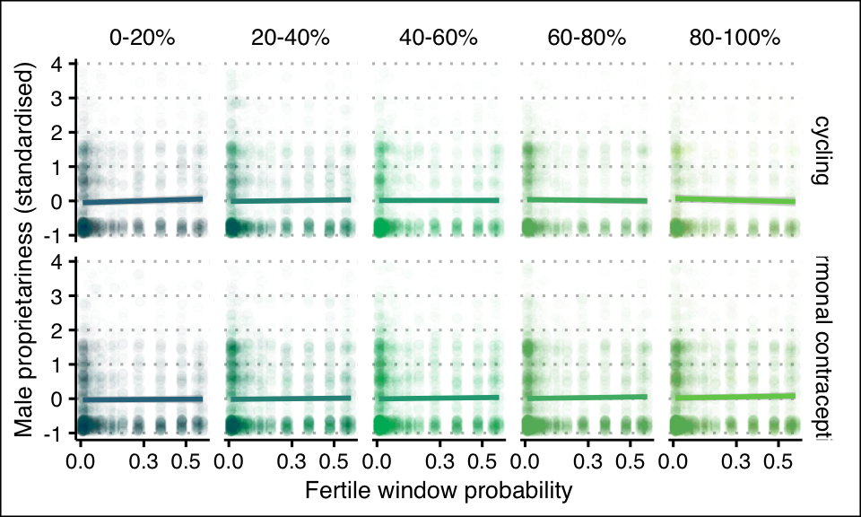
ggsave(file="rejoinder/S_Figure2.pdf", width = chunk_fig_width(7), height = chunk_fig_height(6), units = "in", dpi = 300)
ggsave(file="rejoinder/S_Figure2.png", width = chunk_fig_width(7), height = chunk_fig_height(6), units = "in", dpi = 300)
options(digits=3)
effects_mr %>% select(model, term, estimate, std.error, conf.low_99, conf.high_99, conf.low_95, conf.high_95, p.value) %>% mutate_at(vars(estimate, conf.low_99, conf.high_99, conf.low_95, conf.high_95), ~ sprintf("% .2f", .)) %>% mutate_at(vars(std.error, p.value), ~ sprintf("% .3f", .)) %>%
kable()| model | term | estimate | std.error | conf.low_99 | conf.high_99 | conf.low_95 | conf.high_95 | p.value |
|---|---|---|---|---|---|---|---|---|
| S1: Main effect | fertile | 0.03 | 0.125 | -0.29 | 0.35 | -0.21 | 0.28 | 0.804 |
| S1: STgd_LTgd | fertile | -0.00 | 0.125 | -0.32 | 0.32 | -0.25 | 0.24 | 0.980 |
| S1: STgd_LTgd | fertile:Zpartner_attractiveness_COMP5var_LONG | -0.44 | 0.115 | -0.74 | -0.14 | -0.67 | -0.21 | 0.000 |
| S1: STgd | fertile | 0.01 | 0.125 | -0.32 | 0.33 | -0.24 | 0.25 | 0.958 |
| S1: STgd | fertile:Zpartner_attractiveness_COMP5var_LONG | -0.38 | 0.109 | -0.66 | -0.10 | -0.60 | -0.17 | 0.001 |
| S2: Main effect | fertile | 0.06 | 0.057 | -0.09 | 0.20 | -0.05 | 0.17 | 0.301 |
| S2: Main effect (23) | fertile | 0.01 | 0.055 | -0.13 | 0.16 | -0.09 | 0.12 | 0.800 |
| S2: Comp. mod. | fertile | 0.06 | 0.057 | -0.09 | 0.20 | -0.05 | 0.17 | 0.300 |
| S2: Comp. mod. | fertile:partner_attr_composite | -0.00 | 0.047 | -0.12 | 0.12 | -0.09 | 0.09 | 0.977 |
| S2: Comp. mod. (LT-adj.) | fertile | 0.06 | 0.057 | -0.09 | 0.21 | -0.05 | 0.17 | 0.288 |
| S2: Comp. mod. (LT-adj.) | fertile:partner_attr_composite | -0.01 | 0.050 | -0.14 | 0.12 | -0.11 | 0.09 | 0.868 |
| S2: Comp. mod. (23) | fertile | 0.01 | 0.055 | -0.13 | 0.15 | -0.09 | 0.12 | 0.808 |
| S2: Comp. mod. (23) | fertile:partner_attr_composite | 0.01 | 0.047 | -0.11 | 0.13 | -0.08 | 0.10 | 0.852 |
| S2: Comp. mod. (LT-adj., 23) | fertile | 0.01 | 0.055 | -0.13 | 0.16 | -0.09 | 0.12 | 0.803 |
| S2: Comp. mod. (LT-adj., 23) | fertile:partner_attr_composite | 0.01 | 0.049 | -0.12 | 0.13 | -0.09 | 0.10 | 0.880 |
Codebook Study 2
knitr::opts_chunk$set(
warning = TRUE, # show warnings during codebook generation
message = TRUE, # show messages during codebook generation
error = TRUE, # do not interrupt codebook generation in case of errors,
# usually better for debugging
echo = FALSE # show R code
)
ggplot2::theme_set(ggplot2::theme_bw())
pander::panderOptions("table.split.table", Inf)Between-subjects
## No missing values.Metadata
Description
Dataset name: all_surveys
The dataset has N=576 rows and 25 columns. 576 rows have no missing values on any column.
Metadata for search engines
Date published: 2020-06-11
- keywords: session, hormonal_contraception, spms_rel, spms_partner, spms_self, spms_self_1, spms_self_2, spms_self_3R, partner_physical_attractiveness, partner_sexiness, partner_attractiveness_face, partner_attractiveness_body, partner_attr_composite, satisfaction_sexual_intercourse, partner_attractiveness_shortterm, partner_attractiveness_longterm, partner_attr_composite_rel, partner_attr_composite_itemwise, spms_partner_1, spms_partner_2, spms_partner_3R, partner_attr_lt_composite, partner_feel_safe, attractiveness_warmth and partner_attractiveness_trust
Variables
hormonal_contraception
Distribution
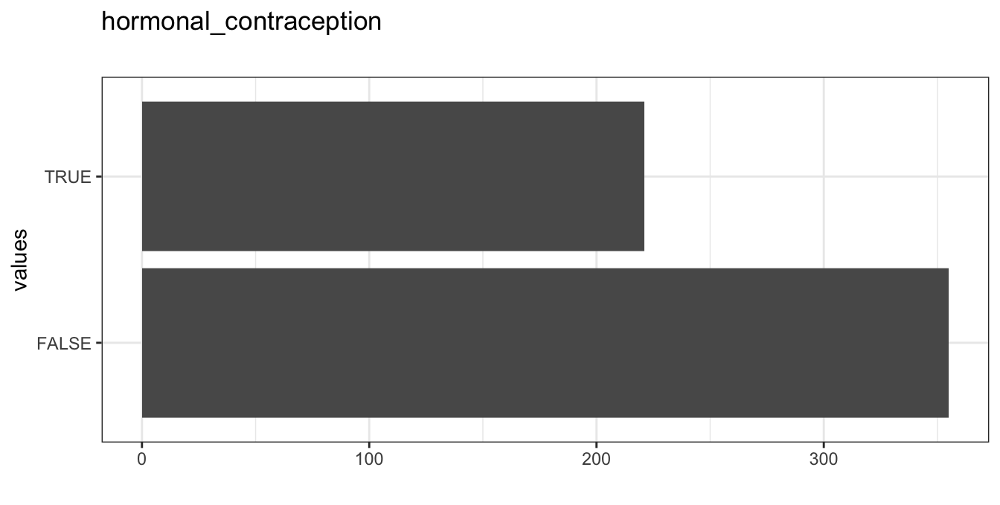
0 missing values.
Summary statistics
| name | data_type | n_missing | complete_rate | count | mean | label |
|---|---|---|---|---|---|---|
| hormonal_contraception | logical | 0 | 1 | FAL: 355, TRU: 221 | 0.384 | NA |
Scale: spms_partner
Overview
Reliability: ωordinal [95% CI] = 0.85 [0.83;0.87].
Missing: 0.
Reliability details
Reliability Indices
| Index | Estimate |
|---|---|
| Omega | 0.8246 |
| Omega Psych Tot | 0.833 |
| Omega Psych H | 0.05103 |
| Omega Ordinal | 0.8534 |
| Cronbach Alpha | 0.8232 |
| Greatest Lower Bound | 0.8457 |
| Alpha Ordinal | 0.85 |
Positive correlations: 3 out of 3 (100%)
Scatter matrix
Detailed output
##
## Information about this analysis:
##
## Dataframe: res$dat
## Items: spms_partner_1, spms_partner_2, spms_partner_3R
## Observations: 576
## Positive correlations: 3 out of 3 (100%)
##
## Estimates assuming interval level:
##
## Omega (total): 0.82
## Omega (hierarchical): 0.05
## Revelle's omega (total): 0.83
## Greatest Lower Bound (GLB): 0.85
## Coefficient H: 0.85
## Cronbach's alpha: 0.82
## Confidence intervals:
## Omega (total): [0.8, 0.85]
## Cronbach's alpha: [0.8, 0.85]
##
## Estimates assuming ordinal level:
##
## Ordinal Omega (total): 0.85
## Ordinal Omega (hierarch.): 0.85
## Ordinal Cronbach's alpha: 0.85
## Confidence intervals:
## Ordinal Omega (total): [0.83, 0.87]
## Ordinal Cronbach's alpha: [0.83, 0.87]
##
## Note: the normal point estimate and confidence interval for omega are based on the procedure suggested by Dunn, Baguley & Brunsden (2013) using the MBESS function ci.reliability, whereas the psych package point estimate was suggested in Revelle & Zinbarg (2008). See the help ('?scaleStructure') for more information.
##
## Eigen values: 2.227, 0.472, 0.301
## Loadings:
## PC1
## spms_partner_1 0.871
## spms_partner_2 0.891
## spms_partner_3R 0.821
##
## PC1
## SS loadings 2.227
## Proportion Var 0.742
##
## vars n mean sd median trimmed mad min max range skew
## spms_partner_1 1 576 3.60 0.98 4 3.65 1.48 1 5 4 -0.30
## spms_partner_2 2 576 3.36 0.97 3 3.36 1.48 1 5 4 -0.09
## spms_partner_3R 3 576 3.23 1.07 3 3.24 1.48 1 5 4 -0.18
## kurtosis se
## spms_partner_1 -0.51 0.04
## spms_partner_2 -0.49 0.04
## spms_partner_3R -0.56 0.04Summary statistics
| name | label | data_type | value_labels | n_missing | complete_rate | min | median | max | mean | sd | n_value_labels | hist |
|---|---|---|---|---|---|---|---|---|---|---|---|---|
| spms_partner_1 | Frauen bemerken meinen Partner. | haven_labelled | 1. 1: trifft gar nicht zu, 2. 2, 3. 3, 4. 4, 5. 5: trifft völlig zu, NA. Item was not shown to this user., NA. Item was never rendered for this user. |
0 | 1 | 1 | 4 | 5 | 3.60 | 0.98 | 7 | ▁▂▁▇▁▇▁▅ |
| spms_partner_2 | Frauen fühlen sich zu meinem Partner hingezogen. | haven_labelled | 1. 1: trifft gar nicht zu, 2. 2, 3. 3, 4. 4, 5. 5: trifft völlig zu, NA. Item was not shown to this user., NA. Item was never rendered for this user. |
0 | 1 | 1 | 3 | 5 | 3.36 | 0.97 | 7 | ▁▃▁▇▁▇▁▃ |
| spms_partner_3R | Mein Partner bekommt von Frauen nur selten Komplimente. | haven_labelled | 5. 1: trifft gar nicht zu, 4. 2, 3. 3, 2. 4, 1. 5: trifft völlig zu, NA. Item was not shown to this user., NA. Item was never rendered for this user. |
0 | 1 | 1 | 3 | 5 | 3.23 | 1.07 | 7 | ▂▅▁▇▁▇▁▃ |
Scale: spms_self
Overview
Reliability: ωordinal [95% CI] = 0.9 [0.89;0.92].
Missing: 0.
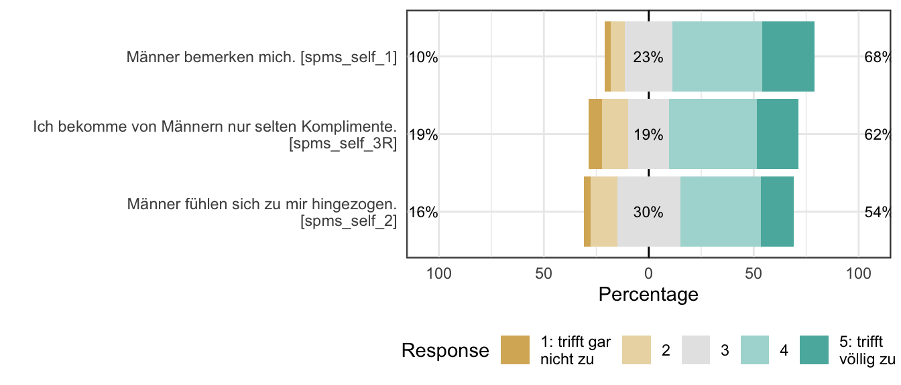
Reliability details
Reliability Indices
| Index | Estimate |
|---|---|
| Omega | 0.8725 |
| Omega Psych Tot | 0.8767 |
| Omega Psych H | 0.04337 |
| Omega Ordinal | 0.9015 |
| Cronbach Alpha | 0.8723 |
| Greatest Lower Bound | 0.8725 |
| Alpha Ordinal | 0.901 |
Positive correlations: 3 out of 3 (100%)
Scatter matrix

Detailed output
##
## Information about this analysis:
##
## Dataframe: res$dat
## Items: spms_self_1, spms_self_2, spms_self_3R
## Observations: 576
## Positive correlations: 3 out of 3 (100%)
##
## Estimates assuming interval level:
##
## Omega (total): 0.87
## Omega (hierarchical): 0.04
## Revelle's omega (total): 0.88
## Greatest Lower Bound (GLB): 0.87
## Coefficient H: 0.88
## Cronbach's alpha: 0.87
## Confidence intervals:
## Omega (total): [0.85, 0.89]
## Cronbach's alpha: [0.85, 0.89]
##
## Estimates assuming ordinal level:
##
## Ordinal Omega (total): 0.9
## Ordinal Omega (hierarch.): 0.9
## Ordinal Cronbach's alpha: 0.9
## Confidence intervals:
## Ordinal Omega (total): [0.89, 0.92]
## Ordinal Cronbach's alpha: [0.89, 0.92]
##
## Note: the normal point estimate and confidence interval for omega are based on the procedure suggested by Dunn, Baguley & Brunsden (2013) using the MBESS function ci.reliability, whereas the psych package point estimate was suggested in Revelle & Zinbarg (2008). See the help ('?scaleStructure') for more information.
##
## Eigen values: 2.401, 0.336, 0.263
## Loadings:
## PC1
## spms_self_1 0.903
## spms_self_2 0.902
## spms_self_3R 0.879
##
## PC1
## SS loadings 2.4
## Proportion Var 0.8
##
## vars n mean sd median trimmed mad min max range skew
## spms_self_1 1 576 3.80 0.99 4 3.90 1.48 1 5 4 -0.75
## spms_self_2 2 576 3.51 1.01 4 3.55 1.48 1 5 4 -0.41
## spms_self_3R 3 576 3.56 1.13 4 3.66 1.48 1 5 4 -0.66
## kurtosis se
## spms_self_1 0.30 0.04
## spms_self_2 -0.31 0.04
## spms_self_3R -0.32 0.05Summary statistics
| name | label | data_type | value_labels | n_missing | complete_rate | min | median | max | mean | sd | n_value_labels | hist |
|---|---|---|---|---|---|---|---|---|---|---|---|---|
| spms_self_1 | Männer bemerken mich. | haven_labelled | 1. 1: trifft gar nicht zu, 2. 2, 3. 3, 4. 4, 5. 5: trifft völlig zu, NA. Item was never rendered for this user. |
0 | 1 | 1 | 4 | 5 | 3.80 | 0.986 | 6 | ▁▁▁▅▁▇▁▅ |
| spms_self_2 | Männer fühlen sich zu mir hingezogen. | haven_labelled | 1. 1: trifft gar nicht zu, 2. 2, 3. 3, 4. 4, 5. 5: trifft völlig zu, NA. Item was never rendered for this user. |
0 | 1 | 1 | 4 | 5 | 3.50 | 1.008 | 6 | ▁▂▁▆▁▇▁▃ |
| spms_self_3R | Ich bekomme von Männern nur selten Komplimente. | haven_labelled | 5. 1: trifft gar nicht zu, 4. 2, 3. 3, 2. 4, 1. 5: trifft völlig zu, NA. Item was never rendered for this user. |
0 | 1 | 1 | 4 | 5 | 3.56 | 1.131 | 6 | ▁▂▁▃▁▇▁▃ |
Scale: partner_physical_attractiveness
Overview
Reliability: .
Missing: 0.
Reliability details
Reliability Indices
| Index | Estimate |
|---|---|
| Cronbach Alpha | 0.8217 |
| Spearman Brown | 0.8224 |
Positive correlations: 1 out of 1 (100%)
Scatter matrix
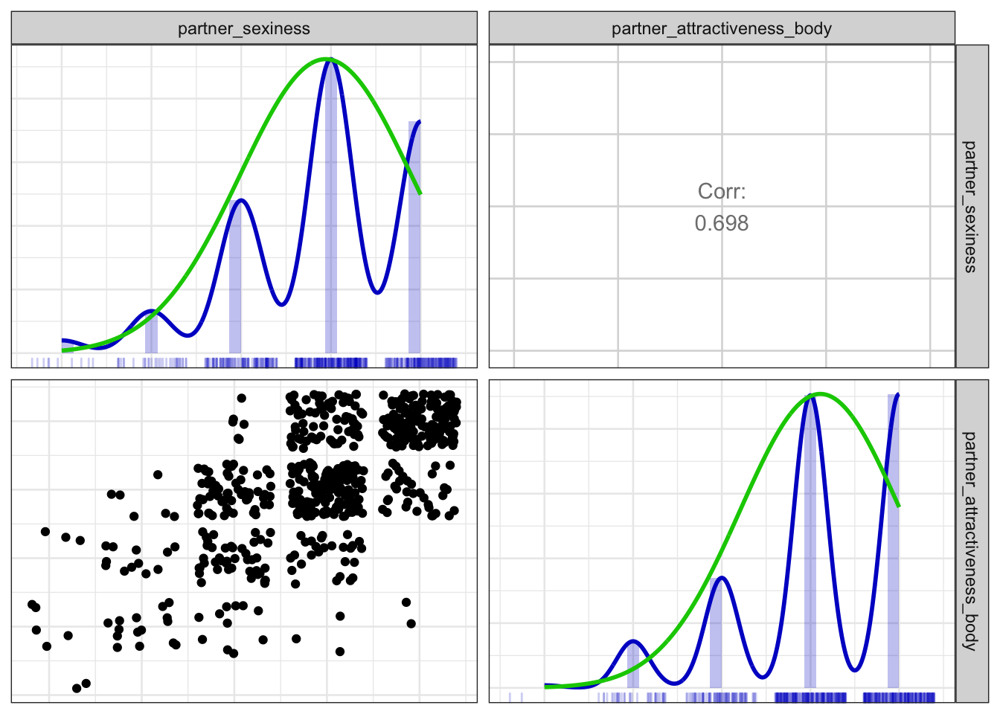
Detailed output
##
## Information about this analysis:
##
## Dataframe: res$dat
## Items: partner_sexiness, partner_attractiveness_body
## Observations: 576
## Positive correlations: 1 out of 1 (100%)
##
## Estimates assuming interval level:
##
## Spearman Brown coefficient: 0.82
## Cronbach's alpha: 0.82
## Pearson Correlation: 0.7
##
##
## Eigen values: 1.698, 0.302NULL
##
## vars n mean sd median trimmed mad min max
## partner_sexiness 1 576 3.94 0.95 4 4.04 1.48 1 5
## partner_attractiveness_body 2 576 4.11 0.90 4 4.23 1.48 1 5
## range skew kurtosis se
## partner_sexiness 4 -0.76 0.24 0.04
## partner_attractiveness_body 4 -0.85 0.09 0.04Summary statistics
| name | label | data_type | value_labels | n_missing | complete_rate | min | median | max | mean | sd | n_value_labels | hist |
|---|---|---|---|---|---|---|---|---|---|---|---|---|
| partner_sexiness | Mein Partner ist sehr sexy. | haven_labelled | 1. 1: trifft gar nicht zu, 2. 2, 3. 3, 4. 4, 5. 5: trifft völlig zu, NA. Item was not shown to this user., NA. Item was never rendered for this user. |
0 | 1 | 1 | 4 | 5 | 3.94 | 0.953 | 7 | ▁▁▁▅▁▇▁▆ |
| partner_attractiveness_body | Ich finde meinen Partner körperlich sehr attraktiv. | haven_labelled | 1. 1: trifft gar nicht zu, 2. 2, 3. 3, 4. 4, 5. 5: trifft völlig zu, NA. Item was not shown to this user., NA. Item was never rendered for this user. |
0 | 1 | 1 | 4 | 5 | 4.11 | 0.901 | 7 | ▁▁▁▃▁▇▁▇ |
Scale: partner_attr_composite
Overview
Reliability: ωtotal [95% CI] = 0.69 [0.65;0.74].
Missing: 0.
Reliability details
Reliability Indices
| Index | Estimate |
|---|---|
| Omega | 0.6944 |
| Omega Psych Tot | 0.7967 |
| Omega Psych H | 0.599 |
| Cronbach Alpha | 0.6748 |
| Greatest Lower Bound | 0.79 |
Positive correlations: 6 out of 6 (100%)
Scatter matrix
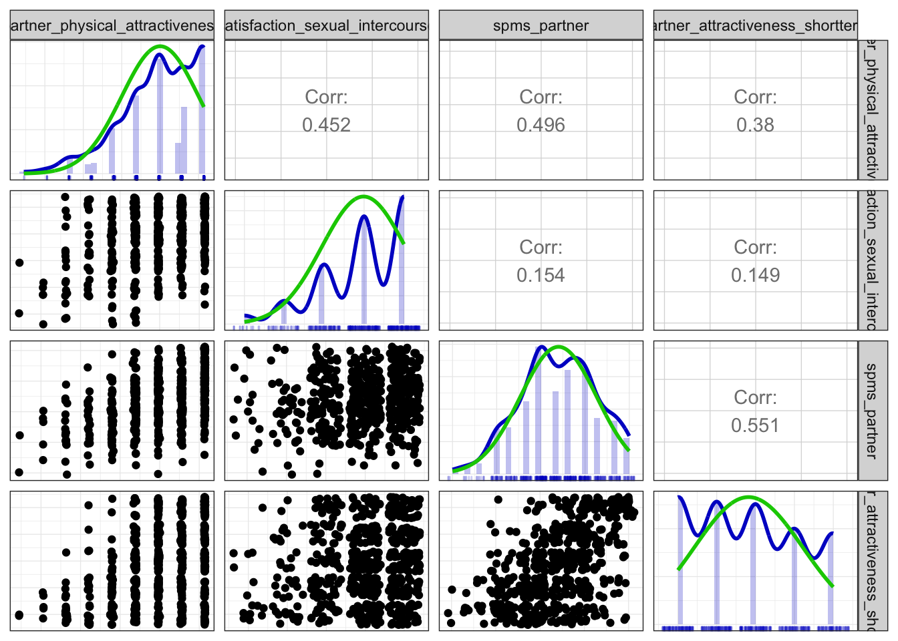
Detailed output
##
## Information about this analysis:
##
## Dataframe: res$dat
## Items: partner_physical_attractiveness, satisfaction_sexual_intercourse, spms_partner, partner_attractiveness_shortterm
## Observations: 576
## Positive correlations: 6 out of 6 (100%)
##
## Estimates assuming interval level:
##
## Omega (total): 0.69
## Omega (hierarchical): 0.6
## Revelle's omega (total): 0.8
## Greatest Lower Bound (GLB): 0.79
## Coefficient H: 0.76
## Cronbach's alpha: 0.67
## Confidence intervals:
## Omega (total): [0.65, 0.74]
## Cronbach's alpha: [0.63, 0.72]
##
## (Estimates assuming ordinal level not computed, as at least one item seems to have more than 8 levels; the highest number of distinct levels is 17 and the highest range is 9.55. This last number needs to be lower than 9 for the polychoric function to work. If this is unexpected, you may want to check for outliers.)
##
## Note: the normal point estimate and confidence interval for omega are based on the procedure suggested by Dunn, Baguley & Brunsden (2013) using the MBESS function ci.reliability, whereas the psych package point estimate was suggested in Revelle & Zinbarg (2008). See the help ('?scaleStructure') for more information.
##
## Eigen values: 2.123, 0.989, 0.507, 0.381
## Loadings:
## PC1
## partner_physical_attractiveness 0.815
## satisfaction_sexual_intercourse 0.534
## spms_partner 0.794
## partner_attractiveness_shortterm 0.736
##
## PC1
## SS loadings 2.123
## Proportion Var 0.531
##
## vars n mean sd median trimmed mad min
## partner_physical_attractiveness 1 576 0.00 1.00 -0.03 0.11 0.89 -3.55
## satisfaction_sexual_intercourse 2 576 3.99 1.05 4.00 4.14 1.48 1.00
## spms_partner 3 576 3.40 0.87 3.33 3.41 0.99 1.00
## partner_attractiveness_shortterm 4 576 2.82 1.39 3.00 2.77 1.48 1.00
## max range skew kurtosis se
## partner_physical_attractiveness 1.14 4.69 -0.81 0.25 0.04
## satisfaction_sexual_intercourse 5.00 4.00 -0.90 0.15 0.04
## spms_partner 5.00 4.00 -0.14 -0.49 0.04
## partner_attractiveness_shortterm 5.00 4.00 0.18 -1.23 0.06Summary statistics
| name | label | data_type | value_labels | scale_item_names | n_missing | complete_rate | min | median | max | mean | sd | n_value_labels | hist |
|---|---|---|---|---|---|---|---|---|---|---|---|---|---|
| partner_physical_attractiveness | 2 partner items aggregated by robust_rowmeans | numeric | NA | partner_sexiness, partner_attractiveness_body | 0 | 1 | -3.5 | -0.033 | 1.1 | 0.00 | 1.000 | NA | ▁▁▂▇▇ |
| satisfaction_sexual_intercourse | Der Sex mit meinem Partner ist sehr befriedigend. | haven_labelled | 1. 1: trifft gar nicht zu, 2. 2, 3. 3, 4. 4, 5. 5: trifft völlig zu, NA. Item was not shown to this user., NA. Item was never rendered for this user. |
NA | 0 | 1 | 1 | 4 | 5 | 3.99 | 1.046 | 7 | ▁▂▁▃▁▇▁▇ |
| spms_partner | 3 spms_partner items averaged with aggregation_function | numeric | NA | spms_partner_1, spms_partner_2, spms_partner_3R | 0 | 1 | 1.0 | 3.333 | 5.0 | 3.40 | 0.866 | NA | ▁▂▇▆▅ |
| partner_attractiveness_shortterm | Mein Partner ist sehr attraktiv für einen One-Night-Stand oder eine kurze sexuelle Affäre. | haven_labelled | 1. 1: trifft gar nicht zu, 2. 2, 3. 3, 4. 4, 5. 5: trifft völlig zu, NA. Item was not shown to this user., NA. Item was never rendered for this user. |
NA | 0 | 1 | 1 | 3 | 5 | 2.82 | 1.394 | 7 | ▇▇▁▇▁▆▁▆ |
Scale: partner_attr_composite_rel
Overview
Reliability: ωtotal [95% CI] = 0.59 [0.54;0.64].
Missing: 0.
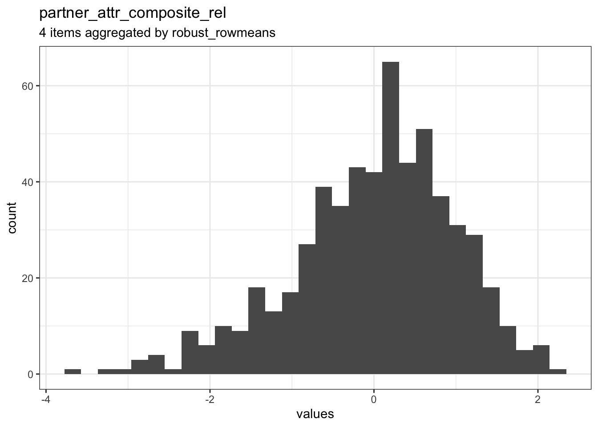
Reliability details
Reliability Indices
| Index | Estimate |
|---|---|
| Omega | 0.5921 |
| Omega Psych Tot | 0.6789 |
| Omega Psych H | 0.4704 |
| Cronbach Alpha | 0.584 |
| Greatest Lower Bound | 0.7189 |
Positive correlations: 6 out of 6 (100%)
Scatter matrix
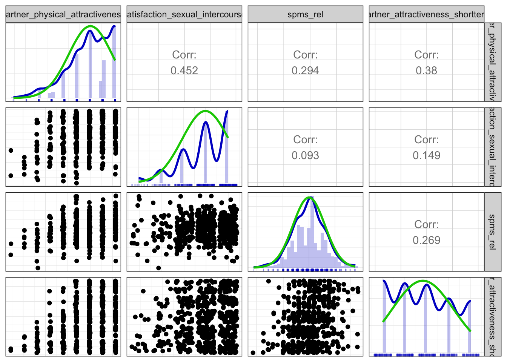
Detailed output
##
## Information about this analysis:
##
## Dataframe: res$dat
## Items: partner_physical_attractiveness, satisfaction_sexual_intercourse, spms_rel, partner_attractiveness_shortterm
## Observations: 576
## Positive correlations: 6 out of 6 (100%)
##
## Estimates assuming interval level:
##
## Omega (total): 0.59
## Omega (hierarchical): 0.47
## Revelle's omega (total): 0.68
## Greatest Lower Bound (GLB): 0.72
## Coefficient H: 0.9
## Cronbach's alpha: 0.58
## Confidence intervals:
## Omega (total): [0.54, 0.64]
## Cronbach's alpha: [0.53, 0.64]
##
## (Estimates assuming ordinal level not computed, as at least one item seems to have more than 8 levels; the highest number of distinct levels is 124 and the highest range is 10.3. This last number needs to be lower than 9 for the polychoric function to work. If this is unexpected, you may want to check for outliers.)
##
## Note: the normal point estimate and confidence interval for omega are based on the procedure suggested by Dunn, Baguley & Brunsden (2013) using the MBESS function ci.reliability, whereas the psych package point estimate was suggested in Revelle & Zinbarg (2008). See the help ('?scaleStructure') for more information.
##
## Eigen values: 1.845, 0.965, 0.724, 0.466
## Loadings:
## PC1
## partner_physical_attractiveness 0.830
## satisfaction_sexual_intercourse 0.624
## spms_rel 0.569
## partner_attractiveness_shortterm 0.665
##
## PC1
## SS loadings 1.845
## Proportion Var 0.461
##
## vars n mean sd median trimmed mad min
## partner_physical_attractiveness 1 576 0.00 1.00 -0.03 0.11 0.89 -3.55
## satisfaction_sexual_intercourse 2 576 3.99 1.05 4.00 4.14 1.48 1.00
## spms_rel 3 576 0.00 1.22 -0.03 0.00 1.24 -4.25
## partner_attractiveness_shortterm 4 576 2.82 1.39 3.00 2.77 1.48 1.00
## max range skew kurtosis se
## partner_physical_attractiveness 1.14 4.69 -0.81 0.25 0.04
## satisfaction_sexual_intercourse 5.00 4.00 -0.90 0.15 0.04
## spms_rel 3.56 7.81 -0.05 0.29 0.05
## partner_attractiveness_shortterm 5.00 4.00 0.18 -1.23 0.06Summary statistics
| name | label | data_type | value_labels | scale_item_names | n_missing | complete_rate | min | median | max | mean | sd | n_value_labels | hist |
|---|---|---|---|---|---|---|---|---|---|---|---|---|---|
| partner_physical_attractiveness | 2 partner items aggregated by robust_rowmeans | numeric | NA | partner_sexiness, partner_attractiveness_body | 0 | 1 | -3.5 | -0.033 | 1.1 | 0.00 | 1.00 | NA | ▁▁▂▇▇ |
| satisfaction_sexual_intercourse | Der Sex mit meinem Partner ist sehr befriedigend. | haven_labelled | 1. 1: trifft gar nicht zu, 2. 2, 3. 3, 4. 4, 5. 5: trifft völlig zu, NA. Item was not shown to this user., NA. Item was never rendered for this user. |
NA | 0 | 1 | 1 | 4 | 5 | 3.99 | 1.05 | 7 | ▁▂▁▃▁▇▁▇ |
| spms_rel | 3 spms_partner items averaged with aggregation_function | numeric | NA | NA | 0 | 1 | -4.3 | -0.031 | 3.6 | 0.00 | 1.23 | NA | ▁▃▇▅▁ |
| partner_attractiveness_shortterm | Mein Partner ist sehr attraktiv für einen One-Night-Stand oder eine kurze sexuelle Affäre. | haven_labelled | 1. 1: trifft gar nicht zu, 2. 2, 3. 3, 4. 4, 5. 5: trifft völlig zu, NA. Item was not shown to this user., NA. Item was never rendered for this user. |
NA | 0 | 1 | 1 | 3 | 5 | 2.82 | 1.39 | 7 | ▇▇▁▇▁▆▁▆ |
Scale: partner_attr_composite_itemwise
Overview
Reliability: ωordinal [95% CI] = 0.86 [0.85;0.88].
Missing: 0.
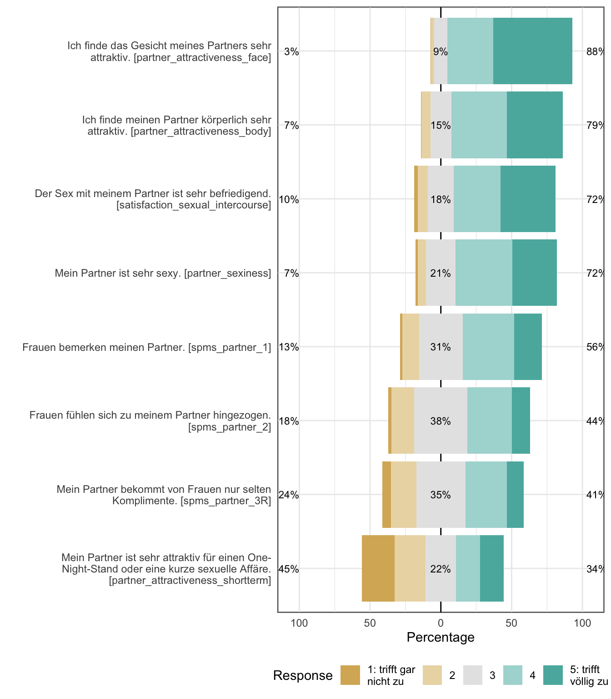
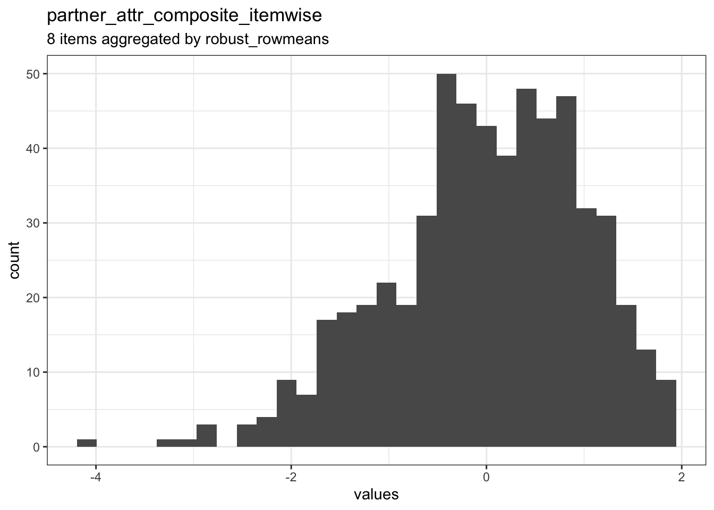
Reliability details
Reliability Indices
| Index | Estimate |
|---|---|
| Omega | 0.8339 |
| Omega Psych Tot | 0.8981 |
| Omega Psych H | 0.6591 |
| Omega Ordinal | 0.8642 |
| Cronbach Alpha | 0.8262 |
| Greatest Lower Bound | 0.8947 |
| Alpha Ordinal | 0.8585 |
Positive correlations: 28 out of 28 (100%)
Scatter matrix
Detailed output
##
## Information about this analysis:
##
## Dataframe: res$dat
## Items: partner_sexiness, partner_attractiveness_face, partner_attractiveness_body, satisfaction_sexual_intercourse, spms_partner_1, spms_partner_2, spms_partner_3R, partner_attractiveness_shortterm
## Observations: 576
## Positive correlations: 28 out of 28 (100%)
##
## Estimates assuming interval level:
##
## Omega (total): 0.83
## Omega (hierarchical): 0.66
## Revelle's omega (total): 0.9
## Greatest Lower Bound (GLB): 0.89
## Coefficient H: 0.87
## Cronbach's alpha: 0.83
## Confidence intervals:
## Omega (total): [0.81, 0.85]
## Cronbach's alpha: [0.81, 0.85]
##
## Estimates assuming ordinal level:
##
## Ordinal Omega (total): 0.86
## Ordinal Omega (hierarch.): 0.87
## Ordinal Cronbach's alpha: 0.86
## Confidence intervals:
## Ordinal Omega (total): [0.85, 0.88]
## Ordinal Cronbach's alpha: [0.84, 0.88]
##
## Note: the normal point estimate and confidence interval for omega are based on the procedure suggested by Dunn, Baguley & Brunsden (2013) using the MBESS function ci.reliability, whereas the psych package point estimate was suggested in Revelle & Zinbarg (2008). See the help ('?scaleStructure') for more information.
##
## Eigen values: 3.823, 1.335, 0.792, 0.603, 0.501, 0.367, 0.295, 0.284
## Loadings:
## TC1 TC2
## partner_sexiness 0.207 0.766
## partner_attractiveness_face 0.130 0.646
## partner_attractiveness_body 0.834
## satisfaction_sexual_intercourse -0.262 0.791
## spms_partner_1 0.797 0.106
## spms_partner_2 0.862
## spms_partner_3R 0.814
## partner_attractiveness_shortterm 0.712
##
## TC1 TC2
## SS loadings 2.680 2.341
## Proportion Var 0.335 0.293
## Cumulative Var 0.335 0.628
##
## vars n mean sd median trimmed mad min max
## partner_sexiness 1 576 3.94 0.95 4 4.04 1.48 1 5
## partner_attractiveness_face 2 576 4.41 0.78 5 4.55 0.00 1 5
## partner_attractiveness_body 3 576 4.11 0.90 4 4.23 1.48 1 5
## satisfaction_sexual_intercourse 4 576 3.99 1.05 4 4.14 1.48 1 5
## spms_partner_1 5 576 3.60 0.98 4 3.65 1.48 1 5
## spms_partner_2 6 576 3.36 0.97 3 3.36 1.48 1 5
## spms_partner_3R 7 576 3.23 1.07 3 3.24 1.48 1 5
## partner_attractiveness_shortterm 8 576 2.82 1.39 3 2.77 1.48 1 5
## range skew kurtosis se
## partner_sexiness 4 -0.76 0.24 0.04
## partner_attractiveness_face 4 -1.32 1.58 0.03
## partner_attractiveness_body 4 -0.85 0.09 0.04
## satisfaction_sexual_intercourse 4 -0.90 0.15 0.04
## spms_partner_1 4 -0.30 -0.51 0.04
## spms_partner_2 4 -0.09 -0.49 0.04
## spms_partner_3R 4 -0.18 -0.56 0.04
## partner_attractiveness_shortterm 4 0.18 -1.23 0.06Summary statistics
| name | label | data_type | value_labels | n_missing | complete_rate | min | median | max | mean | sd | n_value_labels | hist |
|---|---|---|---|---|---|---|---|---|---|---|---|---|
| partner_sexiness | Mein Partner ist sehr sexy. | haven_labelled | 1. 1: trifft gar nicht zu, 2. 2, 3. 3, 4. 4, 5. 5: trifft völlig zu, NA. Item was not shown to this user., NA. Item was never rendered for this user. |
0 | 1 | 1 | 4 | 5 | 3.94 | 0.953 | 7 | ▁▁▁▅▁▇▁▆ |
| partner_attractiveness_face | Ich finde das Gesicht meines Partners sehr attraktiv. | haven_labelled | 1. 1: trifft gar nicht zu, 2. 2, 3. 3, 4. 4, 5. 5: trifft völlig zu, NA. Item was not shown to this user., NA. Item was never rendered for this user. |
0 | 1 | 1 | 5 | 5 | 4.41 | 0.777 | 7 | ▁▁▁▁▁▅▁▇ |
| partner_attractiveness_body | Ich finde meinen Partner körperlich sehr attraktiv. | haven_labelled | 1. 1: trifft gar nicht zu, 2. 2, 3. 3, 4. 4, 5. 5: trifft völlig zu, NA. Item was not shown to this user., NA. Item was never rendered for this user. |
0 | 1 | 1 | 4 | 5 | 4.11 | 0.901 | 7 | ▁▁▁▃▁▇▁▇ |
| satisfaction_sexual_intercourse | Der Sex mit meinem Partner ist sehr befriedigend. | haven_labelled | 1. 1: trifft gar nicht zu, 2. 2, 3. 3, 4. 4, 5. 5: trifft völlig zu, NA. Item was not shown to this user., NA. Item was never rendered for this user. |
0 | 1 | 1 | 4 | 5 | 3.99 | 1.046 | 7 | ▁▂▁▃▁▇▁▇ |
| spms_partner_1 | Frauen bemerken meinen Partner. | haven_labelled | 1. 1: trifft gar nicht zu, 2. 2, 3. 3, 4. 4, 5. 5: trifft völlig zu, NA. Item was not shown to this user., NA. Item was never rendered for this user. |
0 | 1 | 1 | 4 | 5 | 3.60 | 0.980 | 7 | ▁▂▁▇▁▇▁▅ |
| spms_partner_2 | Frauen fühlen sich zu meinem Partner hingezogen. | haven_labelled | 1. 1: trifft gar nicht zu, 2. 2, 3. 3, 4. 4, 5. 5: trifft völlig zu, NA. Item was not shown to this user., NA. Item was never rendered for this user. |
0 | 1 | 1 | 3 | 5 | 3.36 | 0.970 | 7 | ▁▃▁▇▁▇▁▃ |
| spms_partner_3R | Mein Partner bekommt von Frauen nur selten Komplimente. | haven_labelled | 5. 1: trifft gar nicht zu, 4. 2, 3. 3, 2. 4, 1. 5: trifft völlig zu, NA. Item was not shown to this user., NA. Item was never rendered for this user. |
0 | 1 | 1 | 3 | 5 | 3.23 | 1.070 | 7 | ▂▅▁▇▁▇▁▃ |
| partner_attractiveness_shortterm | Mein Partner ist sehr attraktiv für einen One-Night-Stand oder eine kurze sexuelle Affäre. | haven_labelled | 1. 1: trifft gar nicht zu, 2. 2, 3. 3, 4. 4, 5. 5: trifft völlig zu, NA. Item was not shown to this user., NA. Item was never rendered for this user. |
0 | 1 | 1 | 3 | 5 | 2.82 | 1.394 | 7 | ▇▇▁▇▁▆▁▆ |
Scale: partner_attr_lt_composite
Overview
Reliability: ωtotal [95% CI] = 0.8 [0.78;0.83].
Missing: 0.
## Error in likert::likert(as.data.frame(items)): All items (columns) must have the same number of levels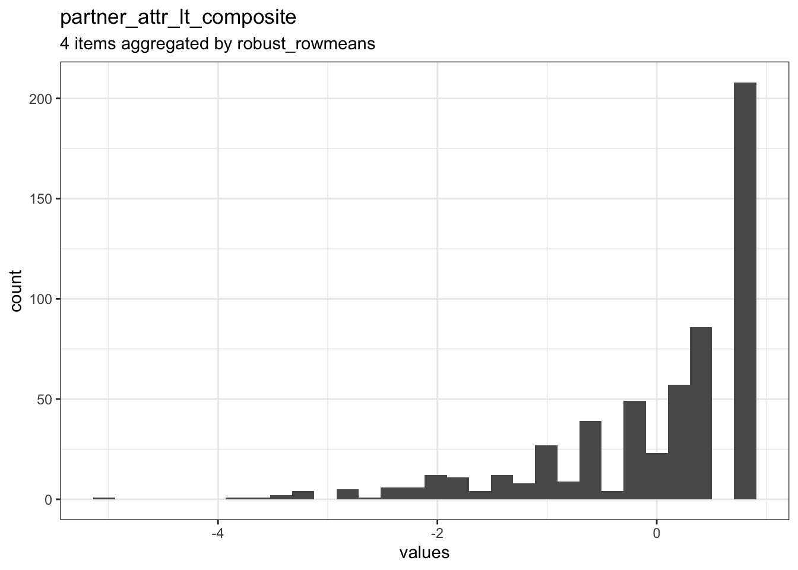
Reliability details
Reliability Indices
| Index | Estimate |
|---|---|
| Omega | 0.8044 |
| Omega Psych Tot | 0.8258 |
| Omega Psych H | 0.7972 |
| Cronbach Alpha | 0.8049 |
| Greatest Lower Bound | 0.8219 |
Positive correlations: 6 out of 6 (100%)
Scatter matrix
Detailed output
##
## Information about this analysis:
##
## Dataframe: res$dat
## Items: partner_attractiveness_longterm, partner_feel_safe, attractiveness_warmth, partner_attractiveness_trust
## Observations: 576
## Positive correlations: 6 out of 6 (100%)
##
## Estimates assuming interval level:
##
## Omega (total): 0.8
## Omega (hierarchical): 0.8
## Revelle's omega (total): 0.83
## Greatest Lower Bound (GLB): 0.82
## Coefficient H: 0.83
## Cronbach's alpha: 0.8
## Confidence intervals:
## Omega (total): [0.78, 0.83]
## Cronbach's alpha: [0.78, 0.83]
##
## (Estimates assuming ordinal level not computed, as at least one item seems to have more than 8 levels; the highest number of distinct levels is 5 and the highest range is 9.6. This last number needs to be lower than 9 for the polychoric function to work. If this is unexpected, you may want to check for outliers.)
##
## Note: the normal point estimate and confidence interval for omega are based on the procedure suggested by Dunn, Baguley & Brunsden (2013) using the MBESS function ci.reliability, whereas the psych package point estimate was suggested in Revelle & Zinbarg (2008). See the help ('?scaleStructure') for more information.
##
## Eigen values: 2.565, 0.577, 0.479, 0.38
## Loadings:
## PC1
## partner_attractiveness_longterm 0.742
## partner_feel_safe 0.830
## attractiveness_warmth 0.828
## partner_attractiveness_trust 0.800
##
## PC1
## SS loadings 2.565
## Proportion Var 0.641
##
## vars n mean sd median trimmed mad min max
## partner_attractiveness_longterm 1 576 0.00 1.00 0.66 0.19 0 -3.6 0.66
## partner_feel_safe 2 576 4.47 0.84 5.00 4.65 0 1.0 5.00
## attractiveness_warmth 3 576 4.55 0.75 5.00 4.71 0 1.0 5.00
## partner_attractiveness_trust 4 576 4.29 0.91 5.00 4.45 0 1.0 5.00
## range skew kurtosis se
## partner_attractiveness_longterm 4.26 -1.66 2.47 0.04
## partner_feel_safe 4.00 -1.67 2.32 0.04
## attractiveness_warmth 4.00 -1.73 2.77 0.03
## partner_attractiveness_trust 4.00 -1.24 0.90 0.04Summary statistics
| name | label | data_type | value_labels | n_missing | complete_rate | min | median | max | mean | sd | n_value_labels | hist |
|---|---|---|---|---|---|---|---|---|---|---|---|---|
| partner_attractiveness_longterm | Mein Partner ist sehr attraktiv für eine langfristige Beziehung (z.B. als möglicher Ehepartner). | haven_labelled | 1. 1: trifft gar nicht zu, 2. 2, 3. 3, 4. 4, 5. 5: trifft völlig zu, NA. Item was not shown to this user., NA. Item was never rendered for this user. |
0 | 1 | -3.6 | 0.66 | 0.66 | 0.00 | 1.000 | 7 | ▁▁▁▁▂▃▁▇ |
| partner_feel_safe | Mit meinem Partner fühle ich mich sehr sicher. | haven_labelled | 1. 1: trifft gar nicht zu, 2. 2, 3. 3, 4. 4, 5. 5: trifft völlig zu, NA. Item was not shown to this user., NA. Item was never rendered for this user. |
0 | 1 | 1.0 | 5.00 | 5.00 | 4.47 | 0.842 | 7 | ▁▁▁▁▁▃▁▇ |
| attractiveness_warmth | Ich fühle mich bei meinem Partner sehr geborgen. | haven_labelled | 1. 1: trifft gar nicht zu, 2. 2, 3. 3, 4. 4, 5. 5: trifft völlig zu, NA. Item was not shown to this user., NA. Item was never rendered for this user. |
0 | 1 | 1.0 | 5.00 | 5.00 | 4.54 | 0.754 | 7 | ▁▁▁▁▁▂▁▇ |
| partner_attractiveness_trust | Das Vertrauen zwischen meinem Partner und mir ist sehr stark. | haven_labelled | 1. 1: trifft gar nicht zu, 2. 2, 3. 3, 4. 4, 5. 5: trifft völlig zu, NA. Item was not shown to this user., NA. Item was never rendered for this user. |
0 | 1 | 1.0 | 5.00 | 5.00 | 4.29 | 0.913 | 7 | ▁▁▁▂▁▅▁▇ |
Missingness report
Codebook table
JSON-LD metadata
The following JSON-LD can be found by search engines, if you share this codebook publicly on the web.
{
"name": "all_surveys",
"datePublished": "2020-06-11",
"description": "The dataset has N=576 rows and 25 columns.\n576 rows have no missing values on any column.\n\n\n## Table of variables\nThis table contains variable names, labels, and number of missing values.\nSee the complete codebook for more.\n\n|name |label | n_missing|\n|:--------------------------------|:------------------------------------------------------------------------------------------------|---------:|\n|session |NA | 0|\n|hormonal_contraception |NA | 0|\n|spms_rel |3 spms_partner items averaged with aggregation_function | 0|\n|spms_partner |3 spms_partner items averaged with aggregation_function | 0|\n|spms_self |3 spms_self items averaged with aggregation_function | 0|\n|spms_self_1 |Männer bemerken mich. | 0|\n|spms_self_2 |Männer fühlen sich zu mir hingezogen. | 0|\n|spms_self_3R |Ich bekomme von Männern nur selten Komplimente. | 0|\n|partner_physical_attractiveness |2 partner items aggregated by robust_rowmeans | 0|\n|partner_sexiness |Mein Partner ist sehr sexy. | 0|\n|partner_attractiveness_face |Ich finde das Gesicht meines Partners sehr attraktiv. | 0|\n|partner_attractiveness_body |Ich finde meinen Partner körperlich sehr attraktiv. | 0|\n|partner_attr_composite |4 items aggregated by robust_rowmeans | 0|\n|satisfaction_sexual_intercourse |Der Sex mit meinem Partner ist sehr befriedigend. | 0|\n|partner_attractiveness_shortterm |Mein Partner ist sehr attraktiv für einen One-Night-Stand oder eine kurze sexuelle Affäre. | 0|\n|partner_attractiveness_longterm |Mein Partner ist sehr attraktiv für eine langfristige Beziehung (z.B. als möglicher Ehepartner). | 0|\n|partner_attr_composite_rel |4 items aggregated by robust_rowmeans | 0|\n|partner_attr_composite_itemwise |8 items aggregated by robust_rowmeans | 0|\n|spms_partner_1 |Frauen bemerken meinen Partner. | 0|\n|spms_partner_2 |Frauen fühlen sich zu meinem Partner hingezogen. | 0|\n|spms_partner_3R |Mein Partner bekommt von Frauen nur selten Komplimente. | 0|\n|partner_attr_lt_composite |4 items aggregated by robust_rowmeans | 0|\n|partner_feel_safe |Mit meinem Partner fühle ich mich sehr sicher. | 0|\n|attractiveness_warmth |Ich fühle mich bei meinem Partner sehr geborgen. | 0|\n|partner_attractiveness_trust |Das Vertrauen zwischen meinem Partner und mir ist sehr stark. | 0|\n\n### Note\nThis dataset was automatically described using the [codebook R package](https://rubenarslan.github.io/codebook/) (version 0.8.2).",
"keywords": ["session", "hormonal_contraception", "spms_rel", "spms_partner", "spms_self", "spms_self_1", "spms_self_2", "spms_self_3R", "partner_physical_attractiveness", "partner_sexiness", "partner_attractiveness_face", "partner_attractiveness_body", "partner_attr_composite", "satisfaction_sexual_intercourse", "partner_attractiveness_shortterm", "partner_attractiveness_longterm", "partner_attr_composite_rel", "partner_attr_composite_itemwise", "spms_partner_1", "spms_partner_2", "spms_partner_3R", "partner_attr_lt_composite", "partner_feel_safe", "attractiveness_warmth", "partner_attractiveness_trust"],
"@context": "http://schema.org/",
"@type": "Dataset",
"variableMeasured": [
{
"name": "session",
"@type": "propertyValue"
},
{
"name": "hormonal_contraception",
"@type": "propertyValue"
},
{
"name": "spms_rel",
"description": "3 spms_partner items averaged with aggregation_function",
"@type": "propertyValue"
},
{
"name": "spms_partner",
"description": "3 spms_partner items averaged with aggregation_function",
"@type": "propertyValue"
},
{
"name": "spms_self",
"description": "3 spms_self items averaged with aggregation_function",
"@type": "propertyValue"
},
{
"name": "spms_self_1",
"description": "Männer bemerken mich.",
"value": "1. 1: trifft gar nicht zu,\n2. 2,\n3. 3,\n4. 4,\n5. 5: trifft völlig zu,\nNA. Item was never rendered for this user.",
"maxValue": 5,
"minValue": 1,
"@type": "propertyValue"
},
{
"name": "spms_self_2",
"description": "Männer fühlen sich zu mir hingezogen.",
"value": "1. 1: trifft gar nicht zu,\n2. 2,\n3. 3,\n4. 4,\n5. 5: trifft völlig zu,\nNA. Item was never rendered for this user.",
"maxValue": 5,
"minValue": 1,
"@type": "propertyValue"
},
{
"name": "spms_self_3R",
"description": "Ich bekomme von Männern nur selten Komplimente.",
"value": "5. 1: trifft gar nicht zu,\n4. 2,\n3. 3,\n2. 4,\n1. 5: trifft völlig zu,\nNA. Item was never rendered for this user.",
"maxValue": 5,
"minValue": 1,
"@type": "propertyValue"
},
{
"name": "partner_physical_attractiveness",
"description": "2 partner items aggregated by robust_rowmeans",
"@type": "propertyValue"
},
{
"name": "partner_sexiness",
"description": "Mein Partner ist sehr sexy.",
"value": "1. 1: trifft gar nicht zu,\n2. 2,\n3. 3,\n4. 4,\n5. 5: trifft völlig zu,\nNA. Item was not shown to this user.,\nNA. Item was never rendered for this user.",
"maxValue": 5,
"minValue": 1,
"@type": "propertyValue"
},
{
"name": "partner_attractiveness_face",
"description": "Ich finde das Gesicht meines Partners sehr attraktiv.",
"value": "1. 1: trifft gar nicht zu,\n2. 2,\n3. 3,\n4. 4,\n5. 5: trifft völlig zu,\nNA. Item was not shown to this user.,\nNA. Item was never rendered for this user.",
"maxValue": 5,
"minValue": 1,
"@type": "propertyValue"
},
{
"name": "partner_attractiveness_body",
"description": "Ich finde meinen Partner körperlich sehr attraktiv.",
"value": "1. 1: trifft gar nicht zu,\n2. 2,\n3. 3,\n4. 4,\n5. 5: trifft völlig zu,\nNA. Item was not shown to this user.,\nNA. Item was never rendered for this user.",
"maxValue": 5,
"minValue": 1,
"@type": "propertyValue"
},
{
"name": "partner_attr_composite",
"description": "4 items aggregated by robust_rowmeans",
"@type": "propertyValue"
},
{
"name": "satisfaction_sexual_intercourse",
"description": "Der Sex mit meinem Partner ist sehr befriedigend.",
"value": "1. 1: trifft gar nicht zu,\n2. 2,\n3. 3,\n4. 4,\n5. 5: trifft völlig zu,\nNA. Item was not shown to this user.,\nNA. Item was never rendered for this user.",
"maxValue": 5,
"minValue": 1,
"@type": "propertyValue"
},
{
"name": "partner_attractiveness_shortterm",
"description": "Mein Partner ist sehr attraktiv für einen One-Night-Stand oder eine kurze sexuelle Affäre.",
"value": "1. 1: trifft gar nicht zu,\n2. 2,\n3. 3,\n4. 4,\n5. 5: trifft völlig zu,\nNA. Item was not shown to this user.,\nNA. Item was never rendered for this user.",
"maxValue": 5,
"minValue": 1,
"@type": "propertyValue"
},
{
"name": "partner_attractiveness_longterm",
"description": "Mein Partner ist sehr attraktiv für eine langfristige Beziehung (z.B. als möglicher Ehepartner).",
"value": "1. 1: trifft gar nicht zu,\n2. 2,\n3. 3,\n4. 4,\n5. 5: trifft völlig zu,\nNA. Item was not shown to this user.,\nNA. Item was never rendered for this user.",
"maxValue": 5,
"minValue": 1,
"@type": "propertyValue"
},
{
"name": "partner_attr_composite_rel",
"description": "4 items aggregated by robust_rowmeans",
"@type": "propertyValue"
},
{
"name": "partner_attr_composite_itemwise",
"description": "8 items aggregated by robust_rowmeans",
"@type": "propertyValue"
},
{
"name": "spms_partner_1",
"description": "Frauen bemerken meinen Partner.",
"value": "1. 1: trifft gar nicht zu,\n2. 2,\n3. 3,\n4. 4,\n5. 5: trifft völlig zu,\nNA. Item was not shown to this user.,\nNA. Item was never rendered for this user.",
"maxValue": 5,
"minValue": 1,
"@type": "propertyValue"
},
{
"name": "spms_partner_2",
"description": "Frauen fühlen sich zu meinem Partner hingezogen.",
"value": "1. 1: trifft gar nicht zu,\n2. 2,\n3. 3,\n4. 4,\n5. 5: trifft völlig zu,\nNA. Item was not shown to this user.,\nNA. Item was never rendered for this user.",
"maxValue": 5,
"minValue": 1,
"@type": "propertyValue"
},
{
"name": "spms_partner_3R",
"description": "Mein Partner bekommt von Frauen nur selten Komplimente.",
"value": "5. 1: trifft gar nicht zu,\n4. 2,\n3. 3,\n2. 4,\n1. 5: trifft völlig zu,\nNA. Item was not shown to this user.,\nNA. Item was never rendered for this user.",
"maxValue": 5,
"minValue": 1,
"@type": "propertyValue"
},
{
"name": "partner_attr_lt_composite",
"description": "4 items aggregated by robust_rowmeans",
"@type": "propertyValue"
},
{
"name": "partner_feel_safe",
"description": "Mit meinem Partner fühle ich mich sehr sicher.",
"value": "1. 1: trifft gar nicht zu,\n2. 2,\n3. 3,\n4. 4,\n5. 5: trifft völlig zu,\nNA. Item was not shown to this user.,\nNA. Item was never rendered for this user.",
"maxValue": 5,
"minValue": 1,
"@type": "propertyValue"
},
{
"name": "attractiveness_warmth",
"description": "Ich fühle mich bei meinem Partner sehr geborgen.",
"value": "1. 1: trifft gar nicht zu,\n2. 2,\n3. 3,\n4. 4,\n5. 5: trifft völlig zu,\nNA. Item was not shown to this user.,\nNA. Item was never rendered for this user.",
"maxValue": 5,
"minValue": 1,
"@type": "propertyValue"
},
{
"name": "partner_attractiveness_trust",
"description": "Das Vertrauen zwischen meinem Partner und mir ist sehr stark.",
"value": "1. 1: trifft gar nicht zu,\n2. 2,\n3. 3,\n4. 4,\n5. 5: trifft völlig zu,\nNA. Item was not shown to this user.,\nNA. Item was never rendered for this user.",
"maxValue": 5,
"minValue": 1,
"@type": "propertyValue"
}
]
}`Diary
## Warning: attributes are not identical across measure variables;
## they will be dropped
## Warning: attributes are not identical across measure variables;
## they will be dropped## Warning in checkConv(attr(opt, "derivs"), opt$par, ctrl = control$checkConv, :
## Model failed to converge with max|grad| = 0.0065342 (tol = 0.002, component 1)## Warning in checkConv(attr(opt, "derivs"), opt$par, ctrl = control$checkConv, :
## Model failed to converge with max|grad| = 0.00527588 (tol = 0.002, component 1)## Warning: attributes are not identical across measure variables;
## they will be dropped## boundary (singular) fit: see ?isSingular## Warning: attributes are not identical across measure variables;
## they will be dropped## boundary (singular) fit: see ?isSingular## Warning in checkConv(attr(opt, "derivs"), opt$par, ctrl = control$checkConv, : Model failed to converge with max|grad| = 0.0038811 (tol = 0.002, component 1)
## Warning in checkConv(attr(opt, "derivs"), opt$par, ctrl = control$checkConv, : attributes are not identical across measure variables;
## they will be dropped## boundary (singular) fit: see ?isSingularMetadata
Description
Dataset name: diary
The dataset has N=24527 rows and 32 columns. 0 rows have no missing values on any column.
Metadata for search engines
Date published: 2020-06-11
- keywords: session, created, ended, expired, modified, fertile, menstruation, premenstrual_phase, extra_pair_desire_1, extra_pair_desire_2R, extra_pair_desire_3R, extra_pair_desire_4, extra_pair_went_out, extra_pair_desire_6, extra_pair_desire_7, extra_pair_desire_8, extra_pair_desire_9, extra_pair_desire_10, extra_pair_desire_11, extra_pair_desire_12, extra_pair_desire_13, extra_pair_desire_14, extra_pair_desire_5R, extra_pair_desire_16, extra_pair_desire, extra_pair_desire_and_behaviour, extra_pair_interest, mate_retention1, mate_retention2, mate_retention3, mate_retention and mate_retention_23
Survey overview
24527 completed rows, 24527 who entered any information, 0 only viewed the first page. There are 0 expired rows (people who did not finish filling out in the requested time frame). In total, there are 24527 rows including unfinished and expired rows.
There were 576 unique participants, of which 576 finished filling out at least one survey.
This survey was repeated many times, on average 42.58 times per user.
The first session started on 2016-05-03 16:09:23, the last session on 2017-03-22 18:27:36.
## `stat_bin()` using `bins = 30`. Pick better value with `binwidth`.People took on average 11.48 minutes (median 4.18) to answer the survey.
## Warning: Removed 2435 rows containing non-finite values (stat_bin).## Warning: Removed 2 rows containing missing values (geom_bar).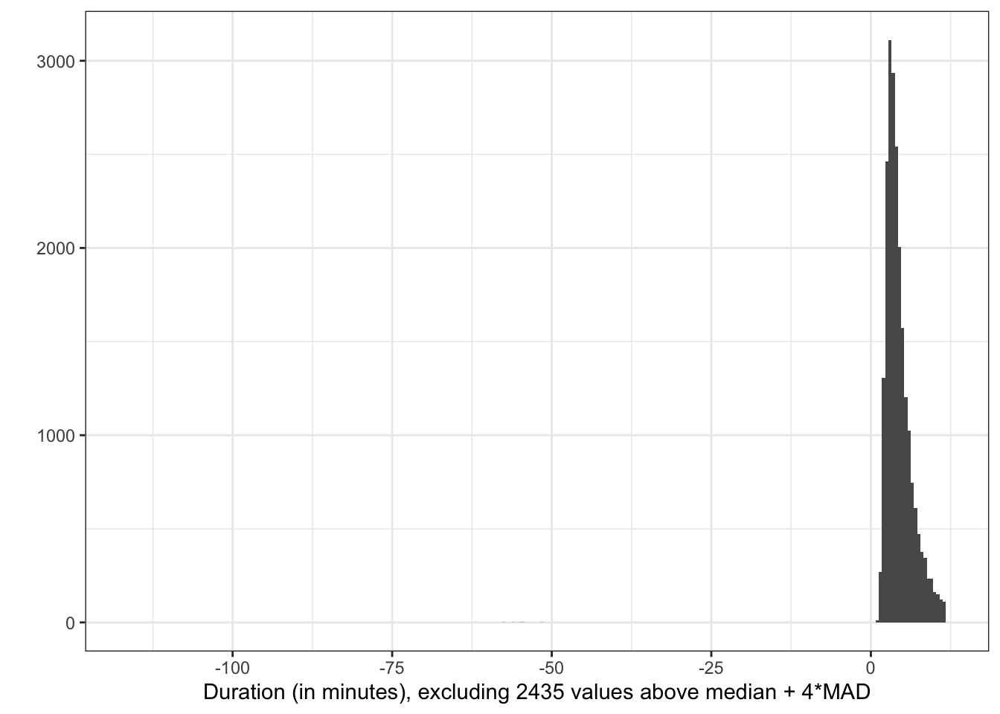
Variables
fertile
Est. fertile window prob. (BC+i)
Distribution
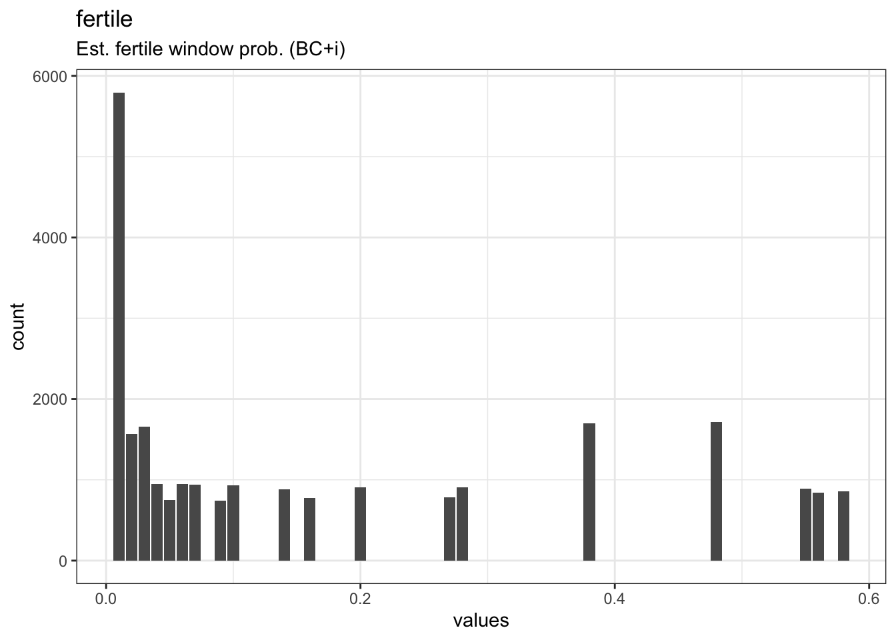
0 missing values.
Summary statistics
| name | label | data_type | n_missing | complete_rate | min | median | max | mean | sd | hist |
|---|---|---|---|---|---|---|---|---|---|---|
| fertile | Est. fertile window prob. (BC+i) | numeric | 0 | 1 | 0.01 | 0.07 | 0.58 | 0.176 | 0.195 | ▇▂▁▁▂ |
menstruation
Est. menstruation
Distribution
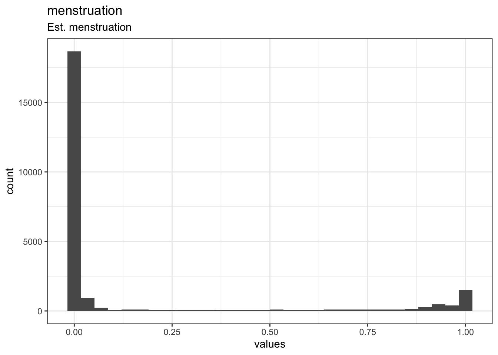
0 missing values.
Summary statistics
| name | label | data_type | n_missing | complete_rate | min | median | max | mean | sd | hist |
|---|---|---|---|---|---|---|---|---|---|---|
| menstruation | Est. menstruation | numeric | 0 | 1 | 0 | 0.0012 | 1 | 0.15 | 0.326 | ▇▁▁▁▁ |
premenstrual_phase
Distribution
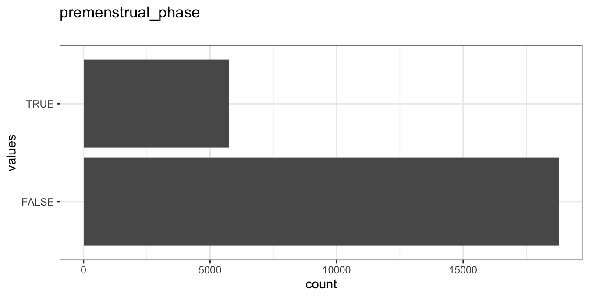
0 missing values.
Summary statistics
| name | data_type | ordered | value_labels | n_missing | complete_rate | n_unique | top_counts | label |
|---|---|---|---|---|---|---|---|---|
| premenstrual_phase | factor | FALSE | 1. FALSE, 2. TRUE |
0 | 1 | 2 | FAL: 18783, TRU: 5744 | NA |
extra_pair_went_out
Ich bin r ifelse(s1_demo$hetero_relationship, '__ohne__ meinen Partner', '') ausgegangen <small>(Party, Kneipe, Freunde treffen, …).</small>
Distribution
17167 missing values.
Summary statistics
| name | label | data_type | value_labels | n_missing | complete_rate | min | median | max | mean | sd | n_value_labels | hist |
|---|---|---|---|---|---|---|---|---|---|---|---|---|
| extra_pair_went_out | Ich bin r ifelse(s1_demo$hetero_relationship, '__ohne__ meinen Partner', '') ausgegangen <small>(Party, Kneipe, Freunde treffen, …).</small> |
haven_labelled | 0. Nein, 1. Ja |
17167 | 0.3 | 0 | 0 | 1 | 0.234 | 0.423 | 2 | ▇▁▁▁▁▁▁▂ |
Value labels
- Nein: 0
- Ja: 1
Scale: extra_pair_desire
Overview
Reliability: See details tab.
Missing: 1973.
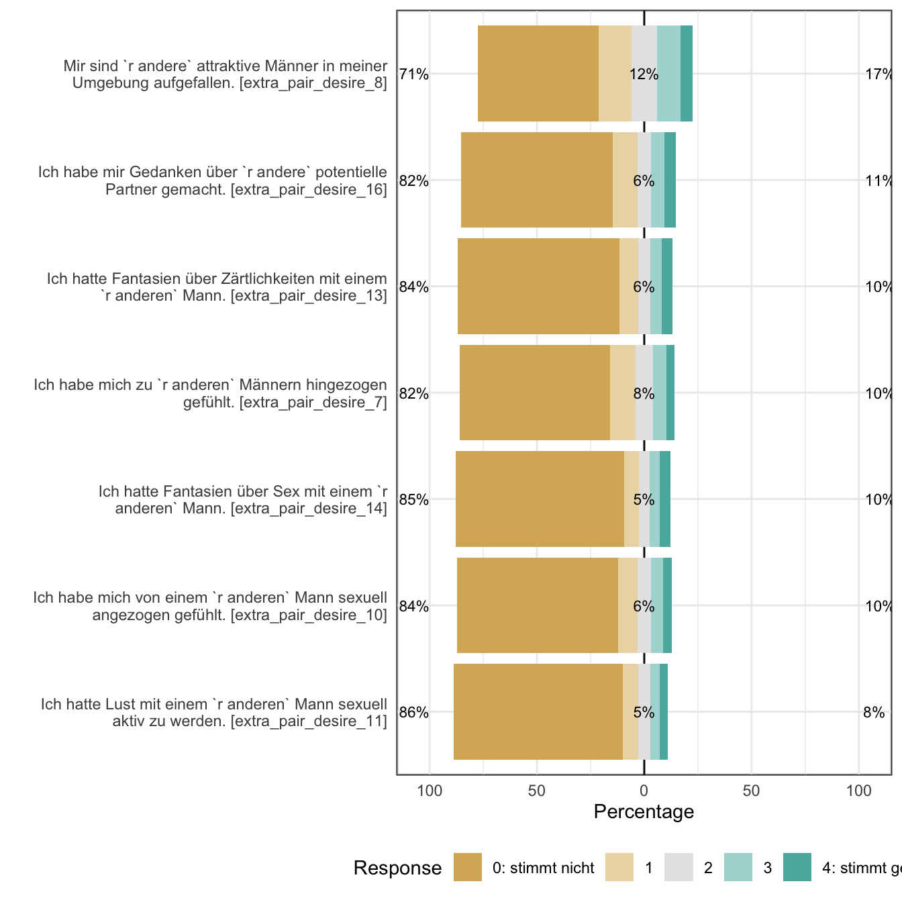
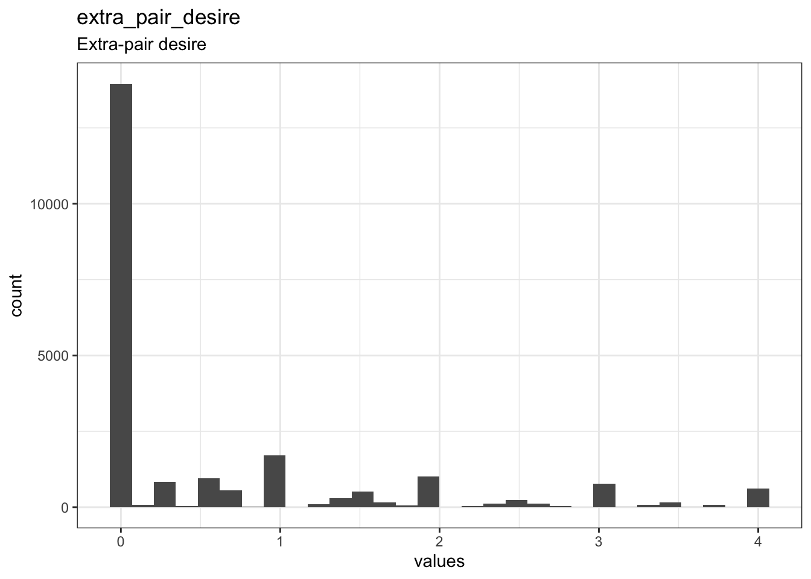
Reliability details
Multilevel Generalizability analysis
Call: psych::multilevel.reliability(x = long_rel, grp = "session",
Time = "day_number", items = "variable", aov = FALSE, lmer = TRUE,
lme = FALSE, long = TRUE, values = "value")
The data had 576 observations taken over 23823 time intervals for 7 items.
Alternative estimates of reliability based upon Generalizability theory
RkF = 1 Reliability of average of all ratings across all items and times (Fixed time effects)
R1R = 0.5 Generalizability of a single time point across all items (Random time effects)
RkR = 1 Generalizability of average time points across all items (Random time effects)
Rc = 0.87 Generalizability of change (fixed time points, fixed items)
RkRn = 1 Generalizability of between person differences averaged over time (time nested within people)
Rcn = 0.84 Generalizability of within person variations averaged over items (time nested within people)
These reliabilities are derived from the components of variance estimated by lmer
variance Percent
ID 0.43 0.33
Time 0.00 0.00
Items 0.03 0.02
ID x time 0.38 0.29
ID x items 0.09 0.07
time x items 0.00 0.00
Residual 0.39 0.29
Total 1.32 1.00
The nested components of variance estimated from lmer are:
variance Percent
id 0.44 0.34
id(time) 0.37 0.28
residual 0.50 0.38
total 1.32 1.00
To see the ANOVA and alpha by subject, use the short = FALSE option.
To see the summaries of the ICCs by subject and time, use all=TRUE
To see specific objects select from the following list:
ANOVA s.lmer s.lme alpha summary.by.person summary.by.time ICC.by.person ICC.by.time lmer long CallSummary statistics
| name | label | data_type | value_labels | n_missing | complete_rate | min | median | max | mean | sd | n_value_labels | hist |
|---|---|---|---|---|---|---|---|---|---|---|---|---|
| extra_pair_desire_7 | Ich habe mich zu r anderen Männern hingezogen gefühlt. |
haven_labelled | 0. 0: stimmt nicht, 1. 1, 2. 2, 3. 3, 4. 4: stimmt genau |
17071 | 0.304 | 0 | 0 | 4 | 0.621 | 1.11 | 5 | ▇▂▁▁▁▁▁▁ |
| extra_pair_desire_8 | Mir sind r andere attraktive Männer in meiner Umgebung aufgefallen. |
haven_labelled | 0. 0: stimmt nicht, 1. 1, 2. 2, 3. 3, 4. 4: stimmt genau |
17248 | 0.297 | 0 | 0 | 4 | 0.948 | 1.28 | 5 | ▇▂▁▂▁▂▁▁ |
| extra_pair_desire_10 | Ich habe mich von einem r anderen Mann sexuell angezogen gefühlt. |
haven_labelled | 0. 0: stimmt nicht, 1. 1, 2. 2, 3. 3, 4. 4: stimmt genau |
17213 | 0.298 | 0 | 0 | 4 | 0.543 | 1.09 | 5 | ▇▁▁▁▁▁▁▁ |
| extra_pair_desire_11 | Ich hatte Lust mit einem r anderen Mann sexuell aktiv zu werden. |
haven_labelled | 0. 0: stimmt nicht, 1. 1, 2. 2, 3. 3, 4. 4: stimmt genau |
17257 | 0.296 | 0 | 0 | 4 | 0.471 | 1.05 | 5 | ▇▁▁▁▁▁▁▁ |
| extra_pair_desire_13 | Ich hatte Fantasien über Zärtlichkeiten mit einem r anderen Mann. |
haven_labelled | 0. 0: stimmt nicht, 1. 1, 2. 2, 3. 3, 4. 4: stimmt genau |
17208 | 0.298 | 0 | 0 | 4 | 0.563 | 1.13 | 5 | ▇▁▁▁▁▁▁▁ |
| extra_pair_desire_14 | Ich hatte Fantasien über Sex mit einem r anderen Mann. |
haven_labelled | 0. 0: stimmt nicht, 1. 1, 2. 2, 3. 3, 4. 4: stimmt genau |
17070 | 0.304 | 0 | 0 | 4 | 0.511 | 1.11 | 5 | ▇▁▁▁▁▁▁▁ |
| extra_pair_desire_16 | Ich habe mir Gedanken über r andere potentielle Partner gemacht. |
haven_labelled | 0. 0: stimmt nicht, 1. 1, 2. 2, 3. 3, 4. 4: stimmt genau |
17047 | 0.305 | 0 | 0 | 4 | 0.639 | 1.17 | 5 | ▇▁▁▁▁▁▁▁ |
Scale: extra_pair_desire_and_behaviour
Overview
Reliability: See details tab.
Missing: 130.
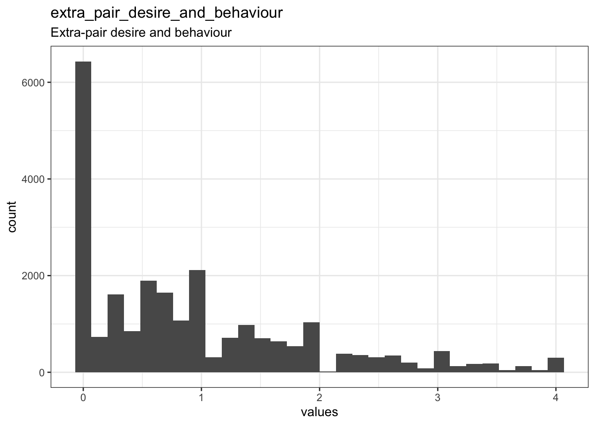
Reliability details
Multilevel Generalizability analysis
Call: psych::multilevel.reliability(x = long_rel, grp = "session",
Time = "day_number", items = "variable", aov = FALSE, lmer = TRUE,
lme = FALSE, long = TRUE, values = "value")
The data had 576 observations taken over 23823 time intervals for 15 items.
Alternative estimates of reliability based upon Generalizability theory
RkF = 1 Reliability of average of all ratings across all items and times (Fixed time effects)
R1R = 0.51 Generalizability of a single time point across all items (Random time effects)
RkR = 1 Generalizability of average time points across all items (Random time effects)
Rc = 0.89 Generalizability of change (fixed time points, fixed items)
RkRn = 1 Generalizability of between person differences averaged over time (time nested within people)
Rcn = 0.76 Generalizability of within person variations averaged over items (time nested within people)
These reliabilities are derived from the components of variance estimated by lmer
variance Percent
ID 0.34 0.18
Time 0.00 0.00
Items 0.41 0.22
ID x time 0.30 0.16
ID x items 0.24 0.13
time x items 0.00 0.00
Residual 0.56 0.30
Total 1.85 1.00
The nested components of variance estimated from lmer are:
variance Percent
id 0.35 0.19
id(time) 0.26 0.14
residual 1.22 0.67
total 1.84 1.00
To see the ANOVA and alpha by subject, use the short = FALSE option.
To see the summaries of the ICCs by subject and time, use all=TRUE
To see specific objects select from the following list:
ANOVA s.lmer s.lme alpha summary.by.person summary.by.time ICC.by.person ICC.by.time lmer long CallSummary statistics
| name | label | data_type | value_labels | n_missing | complete_rate | min | median | max | mean | sd | n_value_labels | hist |
|---|---|---|---|---|---|---|---|---|---|---|---|---|
| extra_pair_desire_1 | Ich habe an einen r anderen Mann gedacht. |
haven_labelled | 0. 0: stimmt nicht, 1. 1, 2. 2, 3. 3, 4. 4: stimmt genau |
17277 | 0.296 | 0 | 0 | 4 | 0.837 | 1.30 | 5 | ▇▂▁▁▁▁▁▁ |
| extra_pair_desire_2R | Ich hatte keine Lust, Zeit mit r anderen Männern zu verbringen. |
haven_labelled | 4. 0: stimmt nicht, 3. 1, 2. 2, 1. 3, 0. 4: stimmt genau |
17128 | 0.302 | 0 | 1 | 4 | 1.276 | 1.51 | 5 | ▇▂▁▂▁▂▁▂ |
| extra_pair_desire_3R | Es war mir egal, ob mich r andere Männer als attraktiv wahrnehmen. |
haven_labelled | 4. 0: stimmt nicht, 3. 1, 2. 2, 1. 3, 0. 4: stimmt genau |
17130 | 0.302 | 0 | 2 | 4 | 1.922 | 1.49 | 5 | ▇▅▁▆▁▆▁▆ |
| extra_pair_desire_4 | Mich haben r andere Männer angeflirtet. |
haven_labelled | 0. 0: stimmt nicht, 1. 1, 2. 2, 3. 3, 4. 4: stimmt genau |
17260 | 0.296 | 0 | 0 | 4 | 0.679 | 1.14 | 5 | ▇▂▁▁▁▁▁▁ |
| extra_pair_desire_6 | Ich habe mit r anderen Männern geflirtet. |
haven_labelled | 0. 0: stimmt nicht, 1. 1, 2. 2, 3. 3, 4. 4: stimmt genau |
17139 | 0.301 | 0 | 0 | 4 | 0.432 | 0.93 | 5 | ▇▁▁▁▁▁▁▁ |
| extra_pair_desire_7 | Ich habe mich zu r anderen Männern hingezogen gefühlt. |
haven_labelled | 0. 0: stimmt nicht, 1. 1, 2. 2, 3. 3, 4. 4: stimmt genau |
17071 | 0.304 | 0 | 0 | 4 | 0.621 | 1.11 | 5 | ▇▂▁▁▁▁▁▁ |
| extra_pair_desire_8 | Mir sind r andere attraktive Männer in meiner Umgebung aufgefallen. |
haven_labelled | 0. 0: stimmt nicht, 1. 1, 2. 2, 3. 3, 4. 4: stimmt genau |
17248 | 0.297 | 0 | 0 | 4 | 0.948 | 1.28 | 5 | ▇▂▁▂▁▂▁▁ |
| extra_pair_desire_9 | r andere_uc Männer fanden mich attraktiv. |
haven_labelled | 0. 0: stimmt nicht, 1. 1, 2. 2, 3. 3, 4. 4: stimmt genau |
17223 | 0.298 | 0 | 2 | 4 | 1.416 | 1.23 | 5 | ▇▃▁▇▁▂▁▂ |
| extra_pair_desire_10 | Ich habe mich von einem r anderen Mann sexuell angezogen gefühlt. |
haven_labelled | 0. 0: stimmt nicht, 1. 1, 2. 2, 3. 3, 4. 4: stimmt genau |
17213 | 0.298 | 0 | 0 | 4 | 0.543 | 1.09 | 5 | ▇▁▁▁▁▁▁▁ |
| extra_pair_desire_11 | Ich hatte Lust mit einem r anderen Mann sexuell aktiv zu werden. |
haven_labelled | 0. 0: stimmt nicht, 1. 1, 2. 2, 3. 3, 4. 4: stimmt genau |
17257 | 0.296 | 0 | 0 | 4 | 0.471 | 1.05 | 5 | ▇▁▁▁▁▁▁▁ |
| extra_pair_desire_12 | Ein r anderer Mann schien Lust zu haben, mit mir sexuell aktiv zu werden. |
haven_labelled | 0. 0: stimmt nicht, 1. 1, 2. 2, 3. 3, 4. 4: stimmt genau |
17144 | 0.301 | 0 | 0 | 4 | 0.542 | 1.06 | 5 | ▇▁▁▁▁▁▁▁ |
| extra_pair_desire_13 | Ich hatte Fantasien über Zärtlichkeiten mit einem r anderen Mann. |
haven_labelled | 0. 0: stimmt nicht, 1. 1, 2. 2, 3. 3, 4. 4: stimmt genau |
17208 | 0.298 | 0 | 0 | 4 | 0.563 | 1.13 | 5 | ▇▁▁▁▁▁▁▁ |
| extra_pair_desire_14 | Ich hatte Fantasien über Sex mit einem r anderen Mann. |
haven_labelled | 0. 0: stimmt nicht, 1. 1, 2. 2, 3. 3, 4. 4: stimmt genau |
17070 | 0.304 | 0 | 0 | 4 | 0.511 | 1.11 | 5 | ▇▁▁▁▁▁▁▁ |
| extra_pair_desire_5R | r andere_uc Männer haben mich ignoriert. |
haven_labelled | 4. 0: stimmt nicht, 3. 1, 2. 2, 1. 3, 0. 4: stimmt genau |
17213 | 0.298 | 0 | 3 | 4 | 2.729 | 1.24 | 5 | ▂▂▁▆▁▃▁▇ |
| extra_pair_desire_16 | Ich habe mir Gedanken über r andere potentielle Partner gemacht. |
haven_labelled | 0. 0: stimmt nicht, 1. 1, 2. 2, 3. 3, 4. 4: stimmt genau |
17047 | 0.305 | 0 | 0 | 4 | 0.639 | 1.17 | 5 | ▇▁▁▁▁▁▁▁ |
Scale: extra_pair_interest
Overview
Reliability: See details tab.
Missing: 5933.
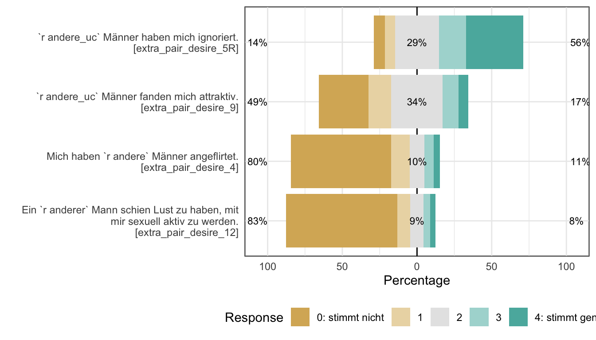
Reliability details
Multilevel Generalizability analysis
Call: psych::multilevel.reliability(x = long_rel, grp = "session",
Time = "day_number", items = "variable", aov = FALSE, lmer = TRUE,
lme = FALSE, long = TRUE, values = "value")
The data had 576 observations taken over 23823 time intervals for 4 items.
Alternative estimates of reliability based upon Generalizability theory
RkF = 1 Reliability of average of all ratings across all items and times (Fixed time effects)
R1R = 0.42 Generalizability of a single time point across all items (Random time effects)
RkR = 1 Generalizability of average time points across all items (Random time effects)
Rc = 0.74 Generalizability of change (fixed time points, fixed items)
RkRn = 1 Generalizability of between person differences averaged over time (time nested within people)
Rcn = 0.16 Generalizability of within person variations averaged over items (time nested within people)
These reliabilities are derived from the components of variance estimated by lmer
variance Percent
ID 0.30 0.13
Time 0.00 0.00
Items 0.97 0.41
ID x time 0.36 0.15
ID x items 0.20 0.09
time x items 0.00 0.00
Residual 0.51 0.22
Total 2.35 1.00
The nested components of variance estimated from lmer are:
variance Percent
id 0.350 0.164
id(time) 0.081 0.038
residual 1.702 0.798
total 2.133 1.000
To see the ANOVA and alpha by subject, use the short = FALSE option.
To see the summaries of the ICCs by subject and time, use all=TRUE
To see specific objects select from the following list:
ANOVA s.lmer s.lme alpha summary.by.person summary.by.time ICC.by.person ICC.by.time lmer long CallSummary statistics
| name | label | data_type | value_labels | n_missing | complete_rate | min | median | max | mean | sd | n_value_labels | hist |
|---|---|---|---|---|---|---|---|---|---|---|---|---|
| extra_pair_desire_4 | Mich haben r andere Männer angeflirtet. |
haven_labelled | 0. 0: stimmt nicht, 1. 1, 2. 2, 3. 3, 4. 4: stimmt genau |
17260 | 0.296 | 0 | 0 | 4 | 0.679 | 1.14 | 5 | ▇▂▁▁▁▁▁▁ |
| extra_pair_desire_9 | r andere_uc Männer fanden mich attraktiv. |
haven_labelled | 0. 0: stimmt nicht, 1. 1, 2. 2, 3. 3, 4. 4: stimmt genau |
17223 | 0.298 | 0 | 2 | 4 | 1.416 | 1.23 | 5 | ▇▃▁▇▁▂▁▂ |
| extra_pair_desire_12 | Ein r anderer Mann schien Lust zu haben, mit mir sexuell aktiv zu werden. |
haven_labelled | 0. 0: stimmt nicht, 1. 1, 2. 2, 3. 3, 4. 4: stimmt genau |
17144 | 0.301 | 0 | 0 | 4 | 0.542 | 1.06 | 5 | ▇▁▁▁▁▁▁▁ |
| extra_pair_desire_5R | r andere_uc Männer haben mich ignoriert. |
haven_labelled | 4. 0: stimmt nicht, 3. 1, 2. 2, 1. 3, 0. 4: stimmt genau |
17213 | 0.298 | 0 | 3 | 4 | 2.729 | 1.24 | 5 | ▂▂▁▆▁▃▁▇ |
Scale: mate_retention
Overview
Reliability: See details tab.
Missing: 8408.
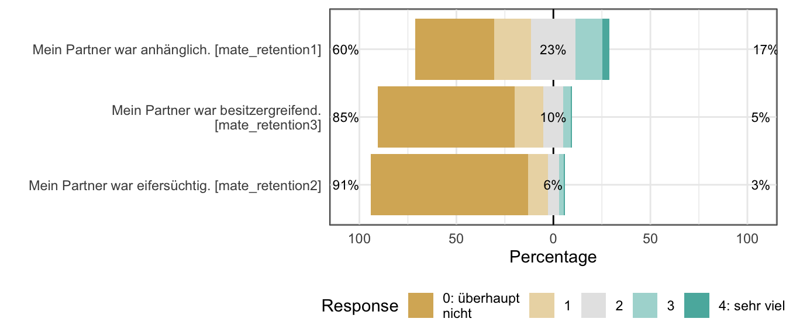
Reliability details
Multilevel Generalizability analysis
Call: psych::multilevel.reliability(x = long_rel, grp = "session",
Time = "day_number", items = "variable", aov = FALSE, lmer = TRUE,
lme = FALSE, long = TRUE, values = "value")
The data had 576 observations taken over 23823 time intervals for 3 items.
Alternative estimates of reliability based upon Generalizability theory
RkF = 1 Reliability of average of all ratings across all items and times (Fixed time effects)
R1R = 0.41 Generalizability of a single time point across all items (Random time effects)
RkR = 1 Generalizability of average time points across all items (Random time effects)
Rc = 0.57 Generalizability of change (fixed time points, fixed items)
RkRn = 1 Generalizability of between person differences averaged over time (time nested within people)
Rcn = 0.23 Generalizability of within person variations averaged over items (time nested within people)
These reliabilities are derived from the components of variance estimated by lmer
variance Percent
ID 0.18 0.15
Time 0.00 0.00
Items 0.22 0.19
ID x time 0.18 0.16
ID x items 0.15 0.13
time x items 0.01 0.01
Residual 0.42 0.36
Total 1.15 1.00
The nested components of variance estimated from lmer are:
variance Percent
id 0.235 0.22
id(time) 0.076 0.07
residual 0.776 0.71
total 1.087 1.00
To see the ANOVA and alpha by subject, use the short = FALSE option.
To see the summaries of the ICCs by subject and time, use all=TRUE
To see specific objects select from the following list:
ANOVA s.lmer s.lme alpha summary.by.person summary.by.time ICC.by.person ICC.by.time lmer long CallSummary statistics
| name | label | data_type | value_labels | n_missing | complete_rate | min | median | max | mean | sd | n_value_labels | hist |
|---|---|---|---|---|---|---|---|---|---|---|---|---|
| mate_retention1 | Mein Partner war anhänglich. | haven_labelled | 0. 0: überhaupt nicht, 1. 1, 2. 2, 3. 3, 4. 4: sehr viel |
17115 | 0.302 | 0 | 1 | 4 | 1.202 | 1.210 | 5 | ▇▃▁▅▁▃▁▁ |
| mate_retention2 | Mein Partner war eifersüchtig. | haven_labelled | 0. 0: überhaupt nicht, 1. 1, 2. 2, 3. 3, 4. 4: sehr viel |
17206 | 0.298 | 0 | 0 | 4 | 0.311 | 0.739 | 5 | ▇▁▁▁▁▁▁▁ |
| mate_retention3 | Mein Partner war besitzergreifend. | haven_labelled | 0. 0: überhaupt nicht, 1. 1, 2. 2, 3. 3, 4. 4: sehr viel |
17155 | 0.301 | 0 | 0 | 4 | 0.494 | 0.875 | 5 | ▇▂▁▁▁▁▁▁ |
Scale: mate_retention_23
Overview
Reliability: See details tab.
Missing: 12008.

Reliability details
Multilevel Generalizability analysis
Call: psych::multilevel.reliability(x = long_rel, grp = "session",
Time = "day_number", items = "variable", aov = FALSE, lmer = TRUE,
lme = FALSE, long = TRUE, values = "value")
The data had 576 observations taken over 23823 time intervals for 2 items.
Alternative estimates of reliability based upon Generalizability theory
RkF = 1 Reliability of average of all ratings across all items and times (Fixed time effects)
R1R = 0.4 Generalizability of a single time point across all items (Random time effects)
RkR = 1 Generalizability of average time points across all items (Random time effects)
Rc = 0.51 Generalizability of change (fixed time points, fixed items)
RkRn = 1 Generalizability of between person differences averaged over time (time nested within people)
Rcn = 0.43 Generalizability of within person variations averaged over items (time nested within people)
These reliabilities are derived from the components of variance estimated by lmer
variance Percent
ID 0.17 0.24
Time 0.03 0.04
Items 0.02 0.02
ID x time 0.14 0.20
ID x items 0.06 0.09
time x items 0.00 0.00
Residual 0.27 0.39
Total 0.68 1.00
The nested components of variance estimated from lmer are:
variance Percent
id 0.20 0.30
id(time) 0.13 0.19
residual 0.34 0.51
total 0.68 1.00
To see the ANOVA and alpha by subject, use the short = FALSE option.
To see the summaries of the ICCs by subject and time, use all=TRUE
To see specific objects select from the following list:
ANOVA s.lmer s.lme alpha summary.by.person summary.by.time ICC.by.person ICC.by.time lmer long CallSummary statistics
| name | label | data_type | value_labels | n_missing | complete_rate | min | median | max | mean | sd | n_value_labels | hist |
|---|---|---|---|---|---|---|---|---|---|---|---|---|
| mate_retention2 | Mein Partner war eifersüchtig. | haven_labelled | 0. 0: überhaupt nicht, 1. 1, 2. 2, 3. 3, 4. 4: sehr viel |
17206 | 0.298 | 0 | 0 | 4 | 0.311 | 0.739 | 5 | ▇▁▁▁▁▁▁▁ |
| mate_retention3 | Mein Partner war besitzergreifend. | haven_labelled | 0. 0: überhaupt nicht, 1. 1, 2. 2, 3. 3, 4. 4: sehr viel |
17155 | 0.301 | 0 | 0 | 4 | 0.494 | 0.875 | 5 | ▇▂▁▁▁▁▁▁ |
Missingness report
Codebook table
JSON-LD metadata
The following JSON-LD can be found by search engines, if you share this codebook publicly on the web.
{
"name": "diary",
"datePublished": "2020-06-11",
"description": "The dataset has N=24527 rows and 32 columns.\n0 rows have no missing values on any column.\n\n\n## Table of variables\nThis table contains variable names, labels, and number of missing values.\nSee the complete codebook for more.\n\n[truncated]\n\n### Note\nThis dataset was automatically described using the [codebook R package](https://rubenarslan.github.io/codebook/) (version 0.8.2).",
"keywords": ["session", "created", "ended", "expired", "modified", "fertile", "menstruation", "premenstrual_phase", "extra_pair_desire_1", "extra_pair_desire_2R", "extra_pair_desire_3R", "extra_pair_desire_4", "extra_pair_went_out", "extra_pair_desire_6", "extra_pair_desire_7", "extra_pair_desire_8", "extra_pair_desire_9", "extra_pair_desire_10", "extra_pair_desire_11", "extra_pair_desire_12", "extra_pair_desire_13", "extra_pair_desire_14", "extra_pair_desire_5R", "extra_pair_desire_16", "extra_pair_desire", "extra_pair_desire_and_behaviour", "extra_pair_interest", "mate_retention1", "mate_retention2", "mate_retention3", "mate_retention", "mate_retention_23"],
"@context": "http://schema.org/",
"@type": "Dataset",
"variableMeasured": [
{
"name": "session",
"@type": "propertyValue"
},
{
"name": "created",
"description": "user first opened survey",
"@type": "propertyValue"
},
{
"name": "ended",
"description": "user finished survey",
"@type": "propertyValue"
},
{
"name": "expired",
"@type": "propertyValue"
},
{
"name": "modified",
"description": "user last edited survey",
"@type": "propertyValue"
},
{
"name": "fertile",
"description": "Est. fertile window prob. (BC+i)",
"@type": "propertyValue"
},
{
"name": "menstruation",
"description": "Est. menstruation",
"@type": "propertyValue"
},
{
"name": "premenstrual_phase",
"value": "1. FALSE,\n2. TRUE",
"@type": "propertyValue"
},
{
"name": "extra_pair_desire_1",
"description": "Ich habe an einen `r anderen` Mann gedacht.",
"value": "0. 0: stimmt nicht,\n1. 1,\n2. 2,\n3. 3,\n4. 4: stimmt genau",
"maxValue": 4,
"minValue": 0,
"@type": "propertyValue"
},
{
"name": "extra_pair_desire_2R",
"description": "Ich hatte __keine__ Lust, Zeit mit `r anderen` Männern zu verbringen.",
"value": "4. 0: stimmt nicht,\n3. 1,\n2. 2,\n1. 3,\n0. 4: stimmt genau",
"maxValue": 4,
"minValue": 0,
"@type": "propertyValue"
},
{
"name": "extra_pair_desire_3R",
"description": "Es war mir egal, ob mich `r andere` Männer als attraktiv wahrnehmen.",
"value": "4. 0: stimmt nicht,\n3. 1,\n2. 2,\n1. 3,\n0. 4: stimmt genau",
"maxValue": 4,
"minValue": 0,
"@type": "propertyValue"
},
{
"name": "extra_pair_desire_4",
"description": "Mich haben `r andere` Männer angeflirtet.",
"value": "0. 0: stimmt nicht,\n1. 1,\n2. 2,\n3. 3,\n4. 4: stimmt genau",
"maxValue": 4,
"minValue": 0,
"@type": "propertyValue"
},
{
"name": "extra_pair_went_out",
"description": "Ich bin `r ifelse(s1_demo$hetero_relationship, '__ohne__ meinen Partner', '')` ausgegangen <small>(Party, Kneipe, Freunde treffen, ...).<\/small>",
"value": "0. Nein,\n1. Ja",
"maxValue": 1,
"minValue": 0,
"@type": "propertyValue"
},
{
"name": "extra_pair_desire_6",
"description": "Ich habe mit `r anderen` Männern geflirtet.",
"value": "0. 0: stimmt nicht,\n1. 1,\n2. 2,\n3. 3,\n4. 4: stimmt genau",
"maxValue": 4,
"minValue": 0,
"@type": "propertyValue"
},
{
"name": "extra_pair_desire_7",
"description": "Ich habe mich zu `r anderen` Männern hingezogen gefühlt.",
"value": "0. 0: stimmt nicht,\n1. 1,\n2. 2,\n3. 3,\n4. 4: stimmt genau",
"maxValue": 4,
"minValue": 0,
"@type": "propertyValue"
},
{
"name": "extra_pair_desire_8",
"description": "Mir sind `r andere` attraktive Männer in meiner Umgebung aufgefallen.",
"value": "0. 0: stimmt nicht,\n1. 1,\n2. 2,\n3. 3,\n4. 4: stimmt genau",
"maxValue": 4,
"minValue": 0,
"@type": "propertyValue"
},
{
"name": "extra_pair_desire_9",
"description": "`r andere_uc` Männer fanden mich attraktiv.",
"value": "0. 0: stimmt nicht,\n1. 1,\n2. 2,\n3. 3,\n4. 4: stimmt genau",
"maxValue": 4,
"minValue": 0,
"@type": "propertyValue"
},
{
"name": "extra_pair_desire_10",
"description": "Ich habe mich von einem `r anderen` Mann sexuell angezogen gefühlt.",
"value": "0. 0: stimmt nicht,\n1. 1,\n2. 2,\n3. 3,\n4. 4: stimmt genau",
"maxValue": 4,
"minValue": 0,
"@type": "propertyValue"
},
{
"name": "extra_pair_desire_11",
"description": "Ich hatte Lust mit einem `r anderen` Mann sexuell aktiv zu werden.",
"value": "0. 0: stimmt nicht,\n1. 1,\n2. 2,\n3. 3,\n4. 4: stimmt genau",
"maxValue": 4,
"minValue": 0,
"@type": "propertyValue"
},
{
"name": "extra_pair_desire_12",
"description": "Ein `r anderer` Mann schien Lust zu haben, mit mir sexuell aktiv zu werden.",
"value": "0. 0: stimmt nicht,\n1. 1,\n2. 2,\n3. 3,\n4. 4: stimmt genau",
"maxValue": 4,
"minValue": 0,
"@type": "propertyValue"
},
{
"name": "extra_pair_desire_13",
"description": "Ich hatte Fantasien über Zärtlichkeiten mit einem `r anderen` Mann.",
"value": "0. 0: stimmt nicht,\n1. 1,\n2. 2,\n3. 3,\n4. 4: stimmt genau",
"maxValue": 4,
"minValue": 0,
"@type": "propertyValue"
},
{
"name": "extra_pair_desire_14",
"description": "Ich hatte Fantasien über Sex mit einem `r anderen` Mann.",
"value": "0. 0: stimmt nicht,\n1. 1,\n2. 2,\n3. 3,\n4. 4: stimmt genau",
"maxValue": 4,
"minValue": 0,
"@type": "propertyValue"
},
{
"name": "extra_pair_desire_5R",
"description": "`r andere_uc` Männer haben mich ignoriert.",
"value": "4. 0: stimmt nicht,\n3. 1,\n2. 2,\n1. 3,\n0. 4: stimmt genau",
"maxValue": 4,
"minValue": 0,
"@type": "propertyValue"
},
{
"name": "extra_pair_desire_16",
"description": "Ich habe mir Gedanken über `r andere` potentielle Partner gemacht.",
"value": "0. 0: stimmt nicht,\n1. 1,\n2. 2,\n3. 3,\n4. 4: stimmt genau",
"maxValue": 4,
"minValue": 0,
"@type": "propertyValue"
},
{
"name": "extra_pair_desire",
"description": "Extra-pair desire",
"@type": "propertyValue"
},
{
"name": "extra_pair_desire_and_behaviour",
"description": "Extra-pair desire and behaviour",
"@type": "propertyValue"
},
{
"name": "extra_pair_interest",
"description": "Extra-pair interest",
"@type": "propertyValue"
},
{
"name": "mate_retention1",
"description": "Mein Partner war anhänglich.",
"value": "0. 0: überhaupt nicht,\n1. 1,\n2. 2,\n3. 3,\n4. 4: sehr viel",
"maxValue": 4,
"minValue": 0,
"@type": "propertyValue"
},
{
"name": "mate_retention2",
"description": "Mein Partner war eifersüchtig.",
"value": "0. 0: überhaupt nicht,\n1. 1,\n2. 2,\n3. 3,\n4. 4: sehr viel",
"maxValue": 4,
"minValue": 0,
"@type": "propertyValue"
},
{
"name": "mate_retention3",
"description": "Mein Partner war besitzergreifend.",
"value": "0. 0: überhaupt nicht,\n1. 1,\n2. 2,\n3. 3,\n4. 4: sehr viel",
"maxValue": 4,
"minValue": 0,
"@type": "propertyValue"
},
{
"name": "mate_retention",
"description": "Partner mate retention",
"@type": "propertyValue"
},
{
"name": "mate_retention_23",
"description": "2 mate_retention items aggregated by robust_rowmeans",
"@type": "propertyValue"
}
]
}`Reproducibility
## R version 3.5.3 Patched (2019-03-11 r77192)
## Platform: x86_64-apple-darwin15.6.0 (64-bit)
## Running under: macOS Mojave 10.14.6
##
## Matrix products: default
## BLAS: /Library/Frameworks/R.framework/Versions/3.5/Resources/lib/libRblas.0.dylib
## LAPACK: /Library/Frameworks/R.framework/Versions/3.5/Resources/lib/libRlapack.dylib
##
## locale:
## [1] en_US.UTF-8/en_US.UTF-8/en_US.UTF-8/C/en_US.UTF-8/en_US.UTF-8
##
## attached base packages:
## [1] stats graphics grDevices datasets utils methods base
##
## other attached packages:
## [1] forcats_0.5.0 stringr_1.4.0 dplyr_0.8.5 purrr_0.3.4
## [5] readr_1.3.1 tidyr_1.0.2 tibble_3.0.1 ggplot2_3.3.0
## [9] tidyverse_1.3.0 codebook_0.8.2 ggthemes_4.2.0 effects_4.1-4
## [13] carData_3.0-3 formr_0.8.5 lmerTest_3.1-2 lme4_1.1-23
## [17] Matrix_1.2-18 knitr_1.28
##
## loaded via a namespace (and not attached):
## [1] readxl_1.3.1 backports_1.1.6
## [3] plyr_1.8.6 repr_1.1.0
## [5] GPArotation_2014.11-1 TMB_1.7.16
## [7] splines_3.5.3 crosstalk_1.1.0.1
## [9] listenv_0.8.0 digest_0.6.25
## [11] SuppDists_1.1-9.5 htmltools_0.4.0
## [13] viridis_0.5.1 fansi_0.4.1
## [15] magrittr_1.5 openxlsx_4.1.4
## [17] globals_0.12.5 modelr_0.1.6
## [19] MBESS_4.6.0 colorspace_1.4-1
## [21] skimr_2.1.1 rvest_0.3.5
## [23] ggrepel_0.8.2 mitools_2.4
## [25] BiasedUrn_1.07 haven_2.2.0
## [27] xfun_0.13 crayon_1.3.4
## [29] jsonlite_1.6.1 SCRT_1.3.1
## [31] survival_3.1-8 glue_1.4.0
## [33] gtable_0.3.0 car_3.0-7
## [35] abind_1.4-5 scales_1.1.0
## [37] DBI_1.1.0 GGally_1.5.0
## [39] data.tree_0.7.11 miniUI_0.1.1.1
## [41] Rcpp_1.0.4.6 viridisLite_0.3.0
## [43] xtable_1.8-4 foreign_0.8-75
## [45] DT_0.13 stats4_3.5.3
## [47] survey_4.0 htmlwidgets_1.5.1
## [49] httr_1.4.1 DiagrammeR_1.0.5
## [51] lavaan_0.6-5 RColorBrewer_1.1-2
## [53] ellipsis_0.3.0 pkgconfig_2.0.3
## [55] reshape_0.8.8 XML_3.99-0.3
## [57] farver_2.0.3 nnet_7.3-12
## [59] dbplyr_1.4.3 tidyselect_1.0.0
## [61] labeling_0.3 rlang_0.4.5
## [63] reshape2_1.4.4 later_1.0.0
## [65] visNetwork_2.0.9 munsell_0.5.0
## [67] cellranger_1.1.0 tools_3.5.3
## [69] cli_2.0.2 generics_0.0.2
## [71] likert_1.3.5 ggridges_0.5.2
## [73] broom_0.5.6 evaluate_0.14
## [75] fastmap_1.0.1 yaml_2.2.1
## [77] fs_1.4.1 zip_2.0.4
## [79] pander_0.6.3 future_1.17.0
## [81] nlme_3.1-143 mime_0.9
## [83] userfriendlyscience_0.7.2 xml2_1.3.2
## [85] compiler_3.5.3 rstudioapi_0.11
## [87] curl_4.3 reprex_0.3.0
## [89] statmod_1.4.34 pbivnorm_0.6.0
## [91] stringi_1.4.6 highr_0.8
## [93] lattice_0.20-38 psych_1.9.12.31
## [95] nloptr_1.2.2.1 vctrs_0.2.4
## [97] pillar_1.4.3 lifecycle_0.2.0
## [99] pwr_1.3-0 estimability_1.3
## [101] data.table_1.12.8 httpuv_1.5.2
## [103] R6_2.2.2 promises_1.1.0
## [105] renv_0.9.2 gridExtra_2.3
## [107] rio_0.5.16 codetools_0.2-16
## [109] boot_1.3-24 MASS_7.3-45
## [111] assertthat_0.2.1 minpack.lm_1.2-1
## [113] withr_2.2.0 mnormt_1.5-6
## [115] broom.mixed_0.2.5 diptest_0.75-7
## [117] parallel_3.5.3 hms_0.5.3
## [119] grid_3.5.3 labelled_2.3.1
## [121] coda_0.19-3 minqa_1.2.4
## [123] rmarkdown_2.1 base64enc_0.1-3
## [125] numDeriv_2016.8-1.1 shiny_1.4.0.2
## [127] lubridate_1.7.8